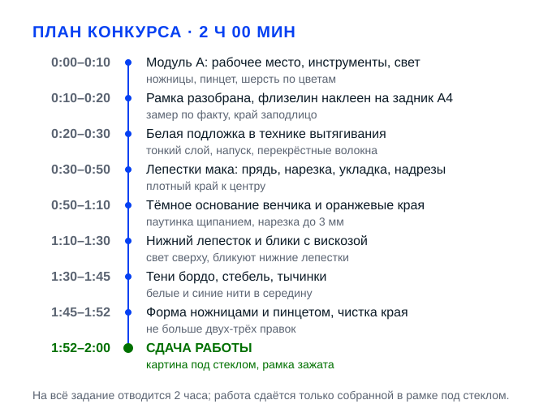
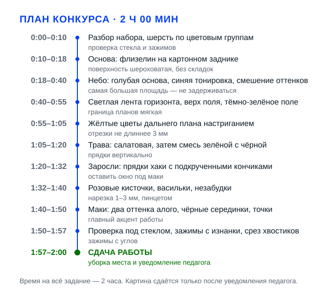
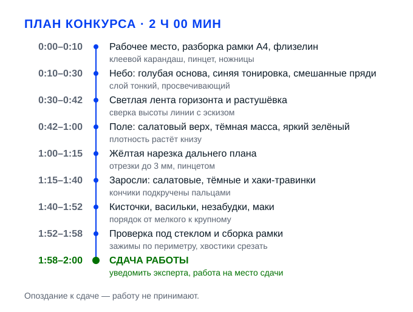

Картины шерстью (ФВ)
Задания ниже — официальные файлы «Абилимпикс» (источник: abilympics-russia.ru), разложенные по категориям. Решения написаны по тексту задания, регламенту и критериям оценки; в них указано, что именно проверяет эксперт.
Школьник
14–16 лет, базовый уровень заданияВ официальном файле категории не разделены отдельными разделами — приводим задание целиком; различия по категориям смотрите в таблице модулей.
Пошаговое решение
Конкурсное задание категории «Школьники» — картина «Маки» в технике шерстяной акварели. На всё задание отводится два часа: собрать рабочее место, подготовить основу из картонного задника рамки А4 и флизелина, а затем послойно выложить шерстью цветок — от белой подложки и лепестков до стебля, тычинок и последних теней. Материалы простые: рамка А4 под стеклом, флизелин, клеевой карандаш, ножницы, пинцет и шерсть разных цветов по эскизу. Работают тремя приёмами: вытягиванием тонких прядей, щипанием пушистых облачков и настриганием волокон на отрезки не длиннее трёх миллиметров. Ошибка здесь почти всегда исправима — слой можно приподнять пинцетом и переложить, поэтому раздумывать некогда, нужно пробовать и сравнивать. Но именно поэтому эксперт смотрит не только на готовую картину, а на всю последовательность: подготовку основы, читаемость объёма, цветовое решение и аккуратность краёв. Ниже задание разложено на четыре задачи и сорок восемь шагов.

Задача 1. Организовать рабочее место и подготовить основуМодуль А · рабочее место и основа (из 2 ч 00 мин на всё задание)
Первые двадцать минут решают, будет ли остальное время спокойным. Нужно разложить инструменты так, чтобы ножницы и пинцет оказывались под рукой без поиска, разобрать рамку и превратить картонный задник в рабочую основу — обтянуть его флизелином, потому что на голом глянцевом картоне шерсть скользит и осыпается при любом движении. Основа в этой технике не вспомогательная деталь, а фундамент: от неё зависит, удержится ли слой, не пойдут ли волокна волной и получится ли в финале накрыть картину стеклом без пузырей и сдвигов.
Действие 1.1. Разложить инструменты и материалы
Шаг 1.1.1
Садимся за стол так, чтобы свет падал слева и немного спереди, а не в глаза и не из-за спины. Раскладываем инструменты на три зоны: справа под правую руку — ножницы и пинцет, по центру — рабочая площадка размером чуть больше листа А4, слева — шерсть. Ножницы кладём кольцами к себе, лезвиями от корпуса, пинцет — рядом, на салфетку, чтобы он не катился по столу. Между зонами оставляем по десять — пятнадцать сантиметров свободного места: туда будут ложиться обрезки и снятые пучки волокон.
Рабочее место — первое, что фиксирует эксперт, и первое, что влияет на скорость: если за ножницами нужно тянуться через весь стол, на каждой операции теряется по полминуты, а за два часа таких обращений набирается несколько десятков. Три зоны нужны ещё и потому, что шерсть в этой технике не режут на весу: и лезвие, и пинцет, и пучок должны быть в поле зрения одновременно, иначе срезается лишнее или сдвигается уже выложенный слой.
Смотрим на стол сверху: рабочая площадка свободна и ровная, инструменты лежат с одной стороны, шерсть — с другой, обрезков под руками нет. Проверяем свет: тень от руки не должна падать на центр листа, иначе на тёмных участках не видно границы оттенков.
Самая частая ошибка — свалить всю шерсть в одну кучу перед собой: пряди сваливаются, цветные волокна цепляются друг за друга, и красный с белым приходится разделять уже в процессе, теряя время и чистоту цвета. Вторая — положить ножницы лезвиями к себе или на край стола, откуда они падают.
Эксперт проходит по рабочим местам в первые минуты и отмечает, разложены ли инструменты по местам, соблюдена ли безопасность при обращении с ножницами и не мешает ли участник соседям.
Шаг 1.1.2
Разбираем шерсть по цветам, не вынимая её из общей массы: красную, оранжевую, бордовую, тёмно-коричневую, зелёную, белую и синюю раскладываем отдельными прядками на левой стороне стола, каждую на своём месте, и слегка распушаем пальцами. Для мака по конкурсному заданию нужны красный и оранжевый, тёмно-коричневый для основания, бордовый для верхних теней, зелёный с коричневым для стебля, белый и синий для тычинок. Отдельно откладываем оранжевую вискозу — она пойдёт на блики.
Шерсть в гребенной ленте лежит плотным штапелем, и цвет в нём читается иначе, чем в тонком слое: на столе оттенок выглядит ярче, а под стеклом и на белой подложке светлеет. Разложив цвета рядом, участник видит, каких оттенков не хватает и что нужно смешать, до того как начал выкладывать лепестки. Это прямая подготовка к цветовому решению — самому выразительному средству в этой технике, которое оценивается отдельно.
Каждый цвет лежит отдельно, прядки не соприкасаются, все позиции из перечня на месте. Если какого-то оттенка мало — видно сразу по толщине прядки; решение о замене принимаем до старта работы, а не в середине.
Смешать всё в общую массу «потом разберу»: волокна разных цветов сваливаются за минуту, и вытащить из них чистый красный уже невозможно — на лепестках появляются грязные вкрапления, которые под стеклом выглядят как дефект.
Эксперт смотрит, умеет ли участник держать материал в порядке: чистые раздельные прядки читаются как понимание технологии, общая куча — как случайный набор.
Шаг 1.1.3
Проверяем посадку и безопасность: стул пододвигаем так, чтобы край стола был на уровне локтя, спина держится прямо, ноги стоят на полу. Ножницы берём только за кольца, передаём кольцами вперёд и никогда не оставляем раскрытыми на столе. Пинцет держим как карандаш — между большим и указательным пальцем, придерживая средним, — так кисть не устаёт за два часа и хватает тонкие волокна без рывка.
Работа мелкая и долгая: два часа с опущенной головой и поднятыми плечами дают к концу напряжение в шее и дрожь в пальцах, а дрожащая рука портит именно тонкие операции — надрезы лепестков и укладку тычинок. Правильная посадка и хват инструмента напрямую влияют на аккуратность, а аккуратность — сквозной критерий оценки на всех этапах работы.
Локти на уровне стола, кисти не висят, взгляд на центр листа без наклона головы. Ножницы закрыты, лежат лезвиями от себя, пинцет на салфетке. Если чувствуете, что рука затекает, — поменяйте положение сейчас, а не через час.
Работать, подложив под себя ногу и низко склонившись над листом: через сорок минут появляется усталость, надрезы становятся рваными, а пинцет начинает выдёргивать волокна вместо того, чтобы укладывать их.
Эксперт отмечает соблюдение требований охраны труда: как участник обращается с ножницами, не оставляет ли их на краю стола, хватает ли устойчиво сидеть.
Действие 1.2. Разобрать рамку и достать подложку
Шаг 1.2.1
Кладём рамку лицом вниз на мягкую салфетку или на лист бумаги, чтобы не поцарапать стекло и лицевую часть багета. Отгибаем по кругу металлические зажимы-кляммеры или вынимаем картонные фиксаторы: их бывает от четырёх до восьми, и все они отводятся до конца, иначе задник пойдёт с перекосом. Затем приподнимаем задник за угол и вынимаем его, поддерживая второй рукой снизу, — картон гнётся легко и по сгибу потом не ляжет ровно.
Задник — это будущая основа картины, и работать с ним придётся весь конкурс. Погнутый или надорванный по углу картон не даст ровной плоскости: шерсть ляжет волной, а под стеклом помятость картона видна как тень по краю. Кроме того, последовательность «сначала разобрать рамку» прямо прописана в задании, и её соблюдение проверяется.
Задник лежит на столе лицевой стороной вверх, углы целые, плоскость ровная, на просвет нет заломов. Зажимы отведены и не мешают, стекло осталось в рамке и не выпало. Проведите ладонью по картону: бугров, вмятин от зажимов и расслоений по кромке быть не должно.
Выдернуть задник, не отогнув все зажимы: один край рвётся, на картоне остаётся вмятина, и картина в финале не прижимается стеклом равномерно — появляется зазор в полтора-два миллиметра, в котором шерсть «дышит» и сдвигается при каждом наклоне рамки.
Эксперт следит за аккуратностью разборки: рамка и стекло должны остаться целыми, потому что они входят в перечень инструментов на участника и повреждение фиксируется.
Шаг 1.2.2
Вынимаем стекло из рамки двумя руками, держа его строго вертикально за боковые кромки, и ставим на ребро в безопасное место — например, в угол стола, подперев так, чтобы оно не могло скатиться, или кладём на мягкую ткань подальше от рабочей зоны. Пальцами за поверхность не берёмся: отпечатки потом придётся оттирать, а свежая шерсть этого не любит. Если стекло держится в рамке на штатных фиксаторах, оставляем его на месте и просто отводим рамку в сторону.
Стекло понадобится только в самом конце, когда картина уже собрана, и всё это время оно лежит на столе как источник риска: разбитое стекло — это и травма, и остановка работы, и потеря баллов за оформление. Кроме того, чистое стекло без отпечатков входит в итоговый вид работы, а отпечаток под стеклом уже не убрать.
Стекло стоит устойчиво, не на краю стола, кромкой наружу не выступает и не касается инструментов. На нём нет отпечатков и следов клея, на просвет не видно разводов. Рамка лежит отдельно, лицом вниз, и не мешает рабочей зоне.
Положить стекло плашмя на стол — на него тут же попадают волокна шерсти и пыль, а стереть их, не размазав, уже не получится; при попытке протереть стекло можно смахнуть с него край картины в финале. Стекло, полежавшее среди шерсти, придётся вытирать дважды.
Эксперт оценивает организацию рабочего места, в том числе то, насколько безопасно размещены стекло и ножницы в рабочей зоне: стекло на ребре в углу стола читается как понимание риска, стекло плашмя среди шерсти — как работа без плана.
Шаг 1.2.3
Кладём картонный задник на стол и промеряем линейкой обе стороны: у листа А4 это примерно 210 на 297 миллиметров, но у конкретной рамки подложка бывает на миллиметр-два меньше, и работать надо по фактическому размеру, а не по номиналу. Замеряем ширину и высоту по внутреннему краю рамки, записываем цифры карандашом на уголке бумаги и только после этого берём флизелин.
Флизелин режется один раз и без права на ошибку: вырезанный меньше задника кусок оставит голые полосы картона по краям, которые под стеклом читаются как небрежность, а вырезанный больше — полезет под зажимы и помешает собрать рамку. Замер по факту занимает полминуты и снимает весь риск переделки в конце, когда времени уже нет.
На бумаге записаны два числа — ширина и высота. Линейка приложена ровно, без наклона, цифры совпадают при повторном замере в другом месте подложки. Если рамка со скруглением или паспарту, отмечаем это сразу: тогда флизелин режется с отступом в два-три миллиметра.
Резать флизелин «на глаз, примерно по листу»: у большинства рамок внутренний размер меньше А4, и по краю остаётся полоса голого картона шириной в полсантиметра — именно она бросается в глаза при оценке.
Эксперт проверяет соответствие основы размеру рамки: аккуратно подогнанный флизелин виден по ровному краю без зазоров, а записи замеров на листке показывают, что размер взят не «на глаз».
Действие 1.3. Наклеить флизелин на картон
Шаг 1.3.1
Расстилаем флизелин на чистой поверхности клеевой стороной вверх, прикладываем картонный задник, обводим его карандашом по контуру и вырезаем ножницами по линии, держа их вертикально и не отрывая от стола, чтобы край не пошёл ступеньками. Режем длинными движениями от себя, на уголках разворачиваем заготовку, а не ножницы. Готовый прямоугольник прикладываем к картону и проверяем совпадение по всем четырём сторонам.
Ровный край флизелина — это ровный край картины: шерсть выкладывается с небольшим запасом и потом подрезается по основе, поэтому любая ступенька или косина на ткани переходит в силуэт работы. Кроме того, клеевой слой должен совпасть с плоскостью картона полностью: там, где флизелин выступит за край, он приклеится к столу или к зажимам рамки.
Прямоугольник ложится на задник без зазоров и без напуска, углы совпадают с точностью до миллиметра, край ровный на просвет. Проведите пальцем по кромке: заусенцев и бахромы нитей быть не должно, а линия реза должна идти без ступенек.
Вырезать флизелин с напуском «потом подрежу»: напуск загибается на картон с изнанки, и рамка потом не садится плотно; если же резать без запаса и промахнуться, голый край картона придётся маскировать шерстью, а она на гладком картоне не держится.
Эксперт смотрит геометрию основы до начала выкладки: ровные прямые углы и совпадение с задником — признак того, что участник контролирует размеры, а не подгоняет материал по ходу дела.
Шаг 1.3.2
Наносим клеевой карандаш на картон, а не на ткань: проходим по всей площади пятнами через три-четыре сантиметра и обязательно по периметру сплошной полосой шириной в сантиметр — именно край держит натяжение. Сразу, не давая клею подсохнуть, накладываем флизелин клеевой стороной вниз, начиная с одного угла, и разглаживаем ладонью от центра к краям, выгоняя воздух. Двигаемся медленно, прижимая ткань всей ладонью, а не кончиками пальцев.
Клей на картоне схватывает за несколько секунд, и наклеенная с воздушным пузырём ткань даёт бугор, который потом виден под стеклом как светлое пятно. Сплошная полоса по периметру нужна потому, что шерсть выкладывается от края к центру: если край не приклеен, он поднимается вместе с первыми прядками и тянет за собой весь слой.
Проводим ладонью по всей поверхности: бугров, пузырей и отстающих участков нет, углы приклеены. Переверните основу на секунду — флизелин не отслаивается и не сползает. По кромке не должно выступать ни одного миллиметра клея.
Намазать клей только по центру и приклеить ткань, натягивая её: по краям остаются неприклеенные полосы, и при выкладке первых же прядей флизелин сборится складками, которые под стеклом выглядят как швы.
Эксперт проверяет, насколько ровно лежит основа: складки и пузыри фиксируются как дефект подготовки, даже если сама картина выложена хорошо, потому что под стеклом они дают тень и блик.
Шаг 1.3.3
Переворачиваем основу и обрезаем всё, что выступило за картон: излишки флизелина по кромке подрезаем ножницами заподлицо, не задевая картон. Затем проводим пальцем по лицевой стороне: поверхность должна быть шероховатой, с лёгким ворсом, без глянца. Если флизелин слишком гладкий, слегка пройдёмся по нему сухой щёткой или просто потрём ладонью — ворс поднимется.
Шероховатость — не эстетическое требование, а техническое: волокна шерсти цепляются за ворс и держатся без клея, поэтому в этой технике картина не приклеивается, а именно выкладывается. На гладкой поверхности пряди съезжают при любом наклоне листа, и вся работа разваливается на этапе укладки лепестков.
Проводим по основе тыльной стороной ногтя: слышен лёгкий шорох, палец чувствует ворс. Наклоняем основу под углом сорок пять градусов — ничего не сползает. Края ровные, без бахромы, ворс поднят равномерно по всей площади.
Оставить флизелин глянцевой стороной вверх: первые же вытянутые пряди начнут скользить, лепестки поедут в сторону, и участник будет поправлять их до конца конкурса вместо того, чтобы работать над цветом.
Эксперт проверяет основу на ощупь и по внешнему виду: ровная шероховатая поверхность без складок — условие, с которого начинается отсчёт качества всей работы.
Задача 2. Выложить белую подложку и сформировать лепестки макаМодуль Б · подложка и лепестки (основной объём работы)
Середина работы. Сначала вся плоскость основы закрывается тонким белым слоем — он играет роль бумаги и одновременно подсвечивает будущие лепестки изнутри. Затем из красной и оранжевой шерсти вытягивается широкая прядь, нарезается на лепестки и укладывается по форме мака, а ножницы делают на лепестках надрезы, которые дают живую, а не циркулем нарисованную кромку. Здесь закладывается силуэт: если лепестки встанут не по месту, дальнейшие тени и блики будут выглядеть заплатками.
Действие 2.1. Закрыть основу тонким белым слоем
Шаг 2.1.1
Берём гребенную ленту белой шерсти левой рукой за один конец, а пальцами правой захватываем волокна у самого края и медленно оттягиваем тонкую прядь — так, чтобы она просвечивала. Прядь должна получиться полупрозрачной, шириной примерно в ладонь, а волокна в ней — лежать в одном направлении. Тянем не рывком, а ровным движением, сохраняя толщину по всей длине: чем медленнее оттягиваем, тем ровнее прядь.
Вытягивание — базовый приём всей техники, и от него зависит прозрачность слоёв: тонкие пряди просвечивают и дают глубину, плотные перекрывают основу наглухо. Первый слой обязательно тонкий, потому что именно через него белый флизелин работает как подсветка, а на плотном слое картина становится глухой и плоской.
Поднимите вытянутую прядь на свет: через неё видно руку. Толщина по длине одинаковая, комков и утолщений нет, волокна идут в одну сторону. Если прядь рвётся — тянули слишком быстро или захватили слишком много волокон; если получилась плотной, как вата, — захватили мало и тянули рывком.
Вытянуть толстый жгут и уложить его плашмя: слой получается плотным, белая основа не читается, и лепестки, положенные сверху, выглядят наклеенными на фетр, а не написанными. Плотный низ потом не поправить — придётся снимать весь слой до флизелина.
Эксперт оценивает владение приёмом вытягивания: ровная полупрозрачная прядь без утолщений видна сразу, как и обратное — рваные комковатые пучки, которые не ложатся слоем и не дают глубины.
Шаг 2.1.2
Укладываем вытянутые пряди на флизелин, начиная от верхнего края основы, и двигаемся вниз рядами. Каждый следующий ряд кладём с напуском в один — полтора сантиметра на предыдущий, а волокна направляем то вдоль, то поперёк, чтобы слой не расползался по одной линии. Заполняем всю плоскость, включая углы, и заходим за край на пару миллиметров: запас потом срежется.
Напуск и перекрёстное направление волокон дают равномерную плотность: если класть пряди строго параллельно, между ними остаются просветы, которые под стеклом читаются как полосы. Белый слой должен закрывать основу полностью, иначе на цветных участках проступит фактура флизелина и картина потеряет глубину.
Смотрим на основу под углом к свету: просветов и полос нет, поверхность ровная, ворс лежит в разные стороны. Наклоняем лист — слой не смещается и не расходится по швам. Поднесите основу к лампе снизу: свет не должен просвечивать пятнами.
Накладывать пряди только в одном направлении рядами, как черепицу: между ними остаются тонкие линии, и под стеклом они превращаются в заметные полосы по всему фону, а на границе с лепестками — в светлую кайму.
Эксперт смотрит фон на просвет и под углом: равномерность белого слоя показывает, насколько участник чувствует плотность материала, а полосы выдают механическую укладку рядами.
Шаг 2.1.3
Проходим по краям и углам отдельно: вытягиваем короткие пряди и укладываем их вдоль кромки, прижимая ладонью. Углы закрываем небольшими облачками, полученными щипанием, — их удобно распределять по узкому месту, не сдвигая соседние волокна. Затем аккуратно прижимаем весь слой ладонью, не сдвигая его, и проверяем, не осталось ли голых участков у самой кромки.
Края — самая заметная часть картины: основа по периметру видна под стеклом и по ней судят об аккуратности. Кроме того, именно с края начинается укладка лепестков, и если там слой тонкий, первая же красная прядь сядет на голую основу и цвет получится грязным.
Проводим пальцем по периметру: ворс есть везде, картон и флизелин не просвечивают. Углы закрыты одинаково с остальными краями, слой у кромки держится и не осыпается при наклоне листа. Ширина закрытой полосы по всему периметру примерно равна.
Оставить кромку шириной в сантиметр незакрытой, рассчитывая, что её прикроют лепестки: под стеклом эта полоса остаётся светлой и читается как незаконченная работа, а снять балл за аккуратность есть за что.
Эксперт осматривает периметр картины в конце работы, но замечает проблемы с краями уже на этапе подложки — по ним видно, контролирует ли участник границы листа.
Действие 2.2. Вытянуть широкую прядь и нарезать лепестки
Шаг 2.2.1
Берём красную шерсть и вытягиваем прядь так же, как белую, но плотнее: волокон захватываем больше, и прядь получается толщиной в палец, шириной в две ладони. Откладываем её на свободное место. Рядом вытягиваем оранжевую прядь, вполовину тоньше красной, — она пойдёт в смесь для живого, не одинакового цвета лепестка. Обе пряди держим рядом, чтобы не искать их потом по столу.
Задание требует, чтобы лепестки были сформированы из красной и оранжевой шерсти в технике вытягивания, и пропорция здесь важнее яркости: чистый красный под стеклом выглядит плоско, а добавленная треть оранжевого даёт тот самый тёплый оттенок, который в маке читается как просвечивающий на солнце лепесток.
Красная прядь плотная, но не спутанная, волокна идут ровно; оранжевая — заметно тоньше. При наложении оранжевой на красную видно, что она просвечивает, а не лежит отдельным слоем. Обе пряди одинаковой длины, не короче ладони.
Взять готовую красную прядь и просто добавить сверху оранжевый пучок: цвет ложится пятном, и на лепестке появляются оранжевые «заплатки» вместо плавного перехода, который видно даже под стеклом. Пятно потом снимается только вместе с лепестком.
Эксперт следит за техникой: прядь должна быть вытянута, а не оторвана или отрезана ножницами — резаная шерсть даёт жёсткий край и не даёт нужной мягкости.
Шаг 2.2.2
Смешиваем красную и оранжевую шерсть в одну прядь: накладываем оранжевую полосу на красную вдоль волокон и растягиваем обе вместе, захватывая волокна сразу из двух цветов. Повторяем два-три раза, пока в пряди не появятся мягкие переходы. Не перекручиваем и не скатываем — работаем только вытягиванием, чтобы волокна остались расправленными и легли тонким слоем.
Смешение в пряди даёт тот эффект, который в этой технике заменяет живописный мазок: цвет не однороден, а всё время чуть меняется, и лепесток выглядит живым. Это прямо связано с цветовым решением — главным выразительным средством работы, которое оценивается при разборе результата.
Проверяем на просвет: в пряди видны и красные, и оранжевые волокна, они перемешаны, а не лежат полосами. Прядь держит форму, не распадается на отдельные пучки, толщина по длине одинаковая. Комков, в которых цвет сбит в плотный шарик, быть не должно.
Смешать цвета до полной однородности, скатав прядь в ладонях: получается плоский «пластилиновый» цвет, и лепесток теряет глубину — под стеклом такая однородность выглядит как окрашенная бумага, а не как шерсть с живым переходом.
Эксперт обращает внимание на богатство оттенка: лепесток из одной пряди с вкраплениями читается лучше, чем ровно закрашенный одним цветом, и это прямо влияет на оценку цветового решения.
Шаг 2.2.3
Формируем из смешанной пряди широкую ленту: растягиваем её в стороны ладонями, добиваясь ширины в две-три ладони и толщины в один-два миллиметра. Следим, чтобы один край ленты был плотнее, а другой тоньше: плотный пойдёт к основанию лепестка, тонкий — к его краю. Длина ленты подбирается так, чтобы из неё вышло три-четыре лепестка. Если лента получилась короче нужного, лучше вытянуть новую, а не надставлять.
Разная плотность краёв — приём, который даёт объём без всяких теней: у основания лепесток плотный и тёмный, у края полупрозрачный, и цвет сам разворачивается от насыщенного к светлому. Без этого лепестки получаются плоскими и одинаковыми по всей площади.
Лента держится в руках, не рвётся, толщина по длине ровная, края различаются по плотности. На просвет тонкий край просвечивает заметно сильнее плотного. Ширина ленты одинакова по всей длине — без сужений посередине.
Растянуть ленту до полной прозрачности по всей ширине: лепесток будет слишком светлым, белая основа съест цвет, и мак получится бледно-розовым вместо алого, а второй попытки на этот лепесток уже не будет.
Эксперт оценивает, умеет ли участник управлять плотностью: переход от плотного основания к тонкому краю виден на каждом лепестке, а одинаковая толщина читается как непонимание приёма.
Шаг 2.2.4
Кладём ленту на дощечку или на лист бумаги и разрезаем ножницами на отрезки длиной пять-семь сантиметров — это заготовки лепестков. Режем поперёк волокон одним движением, не сминая шерсть под лезвием. Полученные заготовки сразу раскладываем по форме будущего цветка, чтобы видеть, хватает ли их, одинаковы ли они по размеру и не нужно ли вытянуть ещё одну прядь.
Нарезанная заготовка ложится на основу ровнее, чем вытянутая на весу: край получается прямым и предсказуемым, а дальше ножницы всё равно сделают надрезы и вернут лепестку живую форму. Кроме того, раскладка заготовок заранее показывает композицию до того, как шерсть прилипла к основе.
Заготовки одинаковой длины, край прямой, шерсть не сминается. Разложенные по форме, они перекрывают друг друга примерно на треть — значит, размер выбран верно. Если заготовок больше, чем нужно, лишние откладываем: они пойдут на второй план.
Резать шерсть, прижатую ладонью: волокна сминаются, край выходит рваным, и лепесток потом не расправить — он ложится полосой с заломами, а на светлом фоне залом виден как тёмная линия. Смятые волокна не расправить ни пинцетом, ни пальцем, а на белом фоне залом выступает тёмной линией.
Эксперт смотрит на подготовительную работу: аккуратные, одинаковые заготовки говорят о продуманной последовательности, а не о работе наугад, когда каждый лепесток выкраивается заново.
Действие 2.3. Уложить лепестки и сделать надрезы
Шаг 2.3.1
Начинаем с верхнего лепестка: берём заготовку за плотный край пинцетом и укладываем её на основу так, чтобы плотный край смотрел в центр будущего цветка, а тонкий — наружу. Разглаживаем ладонью от центра к краю, не сдвигая. Затем следующий лепесток — с нахлёстом в один сантиметр на предыдущий, и так по кругу, оставляя в середине свободное место под основание мака.
Направление плотного края к центру — правило, которое сразу задаёт объём: середина цветка всегда темнее и плотнее, край — светлее. Нахлёст нужен не для прочности, а для читаемости формы: лепестки должны перекрывать друг друга, как в настоящем маке, иначе середина останется светлой и цветок распадётся на отдельные пятна.
Смотрим на цветок целиком: он читается как мак, лепестки перекрываются, середина свободна. Плотные края собраны к центру, тонкие — по внешнему контуру. Ничего не топорщится за габарит листа, между лепестками нет светлых щелей.
Уложить все лепестки тонким краем внутрь: середина цветка получается светлой и рыхлой, объём пропадает, и дальше тени накладывать уже не на что — тёмное основание ляжет в пустоту и будет читаться как отдельное пятно.
Эксперт оценивает композицию: правильное расположение цветка на листе, перекрытие лепестков и читаемый силуэт заметны с расстояния нескольких шагов. С двух шагов видно и огрехи перекрытия.
Шаг 2.3.2
Отходим от стола на пару шагов и смотрим на заготовку издалека: сверяем форму с эскизом, проверяем, не съехал ли цветок в сторону, хватает ли места для стебля внизу. Если лепесток встал не по месту, поддеваем его пинцетом за тонкий край и переносим, не прижимая заново, пока не найдено правильное положение. Возвращаться к столу и править на месте бессмысленно: вблизи композиция не читается.
Вблизи, над листом, глаз не видит общей композиции — он оценивает отдельные волокна. Ошибки расположения видны только с расстояния, и именно они дают самый заметный минус: картина может быть технически безупречной, но с пустым углом и прижатым к краю цветком.
Цветок стоит в верхней трети листа, снизу остаётся место под стебель, отступы от левого и правого края примерно равны. Цветок не касается кромки основы, а его верхний лепесток не упирается в край более полутора сантиметров.
Довести лепестки почти до самого края листа: стеблю и тычинкам места не остаётся, композиция становится тесной, и стебель приходится выводить за пределы картины — работа теряет цельность. Верхний лепесток, упирающийся в кромку, читается как обрезанный.
Эксперт отходит от работы и оценивает её общий вид до того, как начнёт рассматривать детали: композиция читается первой, и смещённый или прижатый к краю цветок замечают раньше, чем качество наложения.
Шаг 2.3.3
Берём ножницы и делаем на каждом лепестке два-три надреза от внешнего края к середине, длиной полтора-два сантиметра, слегка под углом. Режем кончиками лезвий, короткими движениями, придерживая лепесток пальцем другой руки. Срезанные волокна не выбрасываем, а откладываем: они пойдут на мелкие детали. Надрезы делаем на всех лепестках, включая нижний, но не заходя за его середину.
Надрез — то, что отличает живой лепесток от нарисованного: у мака край всегда рваный, и прямые углы сразу выдают аппликацию. Кроме того, надрезы создают просветы, через которые видна белая подложка, и лепесток начинает светиться по краю, как настоящий.
Край лепестка неровный, но не рваный: надрезы идут ровными линиями, не задевают плотную середину. Волокна по краю не вылезают за контур больше чем на пару миллиметров, а просветы между лепестками читаются как естественные разрывы.
Резать лепесток поперёк, доходя до центра: плотная часть разрезается пополам, лепесток распадается на две полосы, и восстановить его можно только полной перекладкой, потому что срезанные волокна уже не собрать обратно.
Эксперт обращает внимание на характер кромки: живая, рваная по надрезам форма — признак владения техникой, а ровный обрезанный край — признак механической работы.
Задача 3. Добавить объём: основание, края, нижний лепесток, тениМодуль В · объём и цветовое решение
Самый ответственный этап, на котором плоское красное пятно превращается в цветок. Сначала тёмно-коричневой паутинкой затеняется основание венчика, потом оранжевые нитки оживляют края лепестков, затем ставится нижний лепесток с бликами из вискозы, а в конце низ затемняется, а верхние тени сглаживаются бордовой паутиной. Здесь важно не переусердствовать: тень в шерстяной акварели набирается по чуть-чуть, потому что снять лишнее проще, чем перекрыть грязь.
Действие 3.1. Защипнуть паутинку и заштриховать основание мака
Шаг 3.1.1
Берём тёмно-коричневую шерсть, перекручиваем гребенную ленту между пальцами так, чтобы получился сгиб, и быстрыми частыми движениями выщипываем волокна с внешней поверхности сгиба. На столе остаётся пушистый полупрозрачный комочек — паутинка. Щиплем небольшими порциями, не больше двух сантиметров в поперечнике, и сразу откладываем готовые комочки в сторону.
Щипание даёт именно тот материал, которым в этой технике рисуют тени: волокна в паутинке распушены, ложатся тонким слоем и не перекрывают нижние цвета. Если взять просто кусок пряди, тень ляжет плотным пятном и будет читаться как дыра, а не как глубина венчика.
Комочек на просвет почти прозрачный, волокна распушены, комков нет. При наложении на красную прядь тёмный цвет читается, но красный сквозь него виден. Размер комочка — не больше двух сантиметров, иначе его придётся делить на части.
Нащипать крупный плотный клок и уложить его целиком: под ним пропадает цвет лепестка, на картине появляется бурое пятно, а снять его, не повредив слой, уже не получится — паутинка забивается в волокна лепестка.
Эксперт смотрит, владеет ли участник щипанием: размер и прозрачность паутинки видны сразу, как и обратное — плотные куски, которые не ложатся слоем и превращают тень в пятно.
Шаг 3.1.2
Укладываем паутинку у основания венчика — там, где лепестки сходятся к середине. Кладём её небольшими кусочками, продвигаясь по кругу, и растираем подушечкой пальца от центра к краям, чтобы волокна распределились, а не лежали клочьями. Тень должна быть шире у самого основания и сходить на нет к середине лепестков, а не обрываться ровной границей. На сами края паутинку не заводим.
Основание венчика в настоящем маке всегда самое тёмное — там лепестки находят друг на друга и не пропускают свет. Именно эта тень даёт объём: без неё цветок выглядит плоской звездой, а не чашей, и середина читается как незаконченное место, куда ещё не дошли руки.
Смотрим на цветок с расстояния вытянутой руки: середина темнее краёв, переход плавный, без резкой границы. Плотные тёмные сгустки отсутствуют, красный цвет под тенью различим, а сама тень по форме повторяет сведение лепестков.
Закрасить тенью половину лепестка или наложить её плотным кругом: цветок становится тяжёлым, красный уходит в бурый, и работа теряет яркость, которая и есть главное в маке; вернуть цвет потом можно только новым слоем поверх.
Эксперт оценивает объём: основание должно читаться тёмным гнездом, а не пятном, наложенным поверх лепестков. Эксперт смотрит и на границу тени — резкая выдаёт накладку, мягкая читается как живопись.
Шаг 3.1.3
Проверяем границы тени пинцетом: если паутинка вылезла на светлую часть лепестка, поддеваем её за край и снимаем, а не растираем на месте. Отдельно смотрим, не осталось ли на основе волокон коричневого цвета, прилипших к белому слою вне цветка, — их убираем липкой лентой или пинцетом, не сдвигая красные пряди. Работаем при боковом свете: на нём одиночные волокна видны лучше всего.
Коричневое волокно на белом фоне видно как соринка, и его не спрятать: белый слой фиксирует всё, что на него попало. На конкурсе это оценивается как неаккуратность, поэтому чистку делают сразу, пока паутинка ещё не «вросла» в нижние слои и её можно снять одним движением пинцета.
Обходим цветок по кругу взглядом: коричневый цвет есть только внутри венчика, на белом фоне ни одного тёмного волокна. Граница тени мягкая, без ступенек, а на самом лепестке нет светлых проплешин от снятой паутинки.
Растирать вылезшую за контур паутинку пальцем: она размазывается по белой основе в серо-бурое пятно, которое уже не убрать, и вокруг мака появляется грязный ореол шириной в сантиметр-полтора. Такой ореол заметен на белом фоне сразу, даже под стеклом.
Эксперт осматривает фон вокруг цветка: чистота белого слоя говорит об аккуратности, а размазанные волокна — о спешке. Отдельно отмечается, снимались ли лишние волокна инструментом или просто размазывались ладонью.
Действие 3.2. Нарезать оранжевые нитки и оживить края лепестков
Шаг 3.2.1
Вытягиваем из оранжевой шерсти тонкую ниточку — узкую прядь шириной в полсантиметра. Кладём её на дощечку и нарезаем ножницами на короткие отрезки длиной три-пять миллиметров: придерживаем нитку пинцетом и режем кончиками лезвий короткими движениями. Нарезанные волокна собираем в отдельную кучку на салфетке, чтобы не разлетались по столу и не прилипали к белому фону картины.
Настригание — третий приём техники, и по заданию отрезки не должны быть длиннее трёх миллиметров: короткое волокно ложится точкой, а длинное — полосой, и вместо живой искры по краю получается оранжевая обводка. Именно мелкая нарезка позволяет ставить акценты там, где нужно, не задевая соседние участки.
Отрезки короткие, одинаковые, не смотаны в комки. При наложении на лепесток такой отрезок читается как отдельная искра, а не как штрих. Пальцы и пинцет чистые, оранжевые волокна не разнесены по другим цветам.
Нарезать нитку длиной в сантиметр и больше: волокна лягут длинными штрихами, край лепестка станет похож на обведённый контур, и вся работа потеряет естественность, а исправить это можно будет только снятием слоя.
Эксперт проверяет соблюдение размеров нарезки: мелкие, ровные отрезки — прямое соответствие технологии, прописанной в задании, где длина волокна ограничена тремя миллиметрами.
Шаг 3.2.2
Набираем нарезанные волокна на кончик пинцета и укладываем по внешнему краю лепестков — не сплошной линией, а отдельными вкраплениями с промежутками в полсантиметра. Прижимаем кончиком пальца только те волокна, которые легли на место, остальные подправляем пинцетом. Двигаемся по кругу, от одного лепестка к другому, не пропуская нижние. Пинцет держим вертикально, чтобы не сдвигать соседние волокна.
Край лепестка у мака всегда чуть теплее и светлее середины: сквозь тонкую ткань просвечивает солнце. Оранжевые вкрапления дают этот эффект, но только при точечной укладке — сплошная линия превращает живой край в аппликацию и уничтожает сделанные ранее надрезы.
Смотрим на лепестки с расстояния: по краю разбросаны тёплые искры, красный цвет между ними виден. Линия не сплошная, надрезы читаются, а самые крупные волокна не выходят за контур больше чем на миллиметр.
Выложить оранжевую нитку по всему контуру лепестка непрерывно: край становится «обведённым», надрезы теряются, а цветок начинает напоминать детский рисунок фломастером, где форма задана линией, а не слоем.
Эксперт оценивает работу с цветом на краях: точечные акценты читаются как живопись, обводка — как раскраска. Вблизи видно и размер вкраплений — крупные волокна выдают спешку.
Шаг 3.2.3
Проверяем плотность акцентов по всем лепесткам: их должно быть примерно одинаково, чтобы цветок не казался освещённым с одной стороны больше, чем нужно. Если на каком-то лепестке искр нет совсем, добавляем две-три; если получилось слишком много — снимаем пинцетом самые крупные волокна, не задевая соседние. Считаем по лепесткам по часовой стрелке, начиная с верхнего.
Неравномерность сразу бросается в глаза: один яркий лепесток и три спокойных читаются как ошибка, а не как замысел. Ровное распределение акцентов по кругу поддерживает целостность цветка — это и есть то цветовое решение, которое оценивают отдельно от техники.
Обходим цветок по часовой стрелке и считаем акценты на каждом лепестке: разница не больше двух-трёх вкраплений. Надрезы на всех лепестках просматриваются, а на белом фоне вокруг цветка нет случайных оранжевых волокон.
Украсить только верхние лепестки, а нижние оставить без акцентов: цветок выглядит недоделанным снизу, и при оценке композиции это фиксируется как неравномерность — работа словно брошена на середине. Именно нижние лепестки развёрнуты к зрителю, поэтому нехватку цвета на них замечают раньше, чем на верхних.
Эксперт сравнивает лепестки между собой: равномерность распределения цвета важнее его количества, а один выделяющийся лепесток читается как ошибка, а не как акцент.
Действие 3.3. Поставить нижний лепесток и сделать блики
Шаг 3.3.1
Из красной и оранжевой шерсти вытягиваем тонкую нить: захватываем немного волокон из двух прядок одновременно и оттягиваем их вместе, получая узкую прядь толщиной в карандаш. Нить должна быть длинной — сантиметров десять-двенадцать, чтобы из неё вышел цельный лепесток без стыков. Держим нить за оба конца и проверяем, что она не распадается на две. Концы держим на весу, не прижимая к столу.
Нижний лепесток в маке — самый крупный и самый освещённый, он задаёт масштаб всему цветку. Из нити, а не из нарезанной заготовки, он получается потому, что нить можно уложить одним движением и выгнуть по нужной дуге, а заготовка даст прямой отрезок с заметным краем.
Нить ровная по толщине, красный и оранжевый идут вперемешку, не распадается на две отдельные пряди. При подъёме за один конец не рвётся под собственным весом. Длина достаточна, чтобы лепесток лёг без надставки.
Скрутить две пряди в жгут, чтобы они не расходились: жгут ложится валиком, нижний лепесток становится толще остальных, и цветок теряет плоскостную лёгкость, а под стеклом этот валик прижимается сильнее и читается как рельеф.
Эксперт смотрит на силуэт нижнего лепестка: плавная дуга и одинаковый цвет с остальными говорят о правильном соединении оттенков, а валик или светлая полоса выдают нарушение технологии.
Шаг 3.3.2
Укладываем нить по форме нижнего лепестка: начинаем у основания венчика, ведём вниз и в сторону, слегка выгибая дугой, и заканчиваем тонким краем у внешнего контура. Прижимаем ладонью по всей длине, затем расплющиваем пальцем плотную часть, чтобы она не выделялась толщиной среди остальных лепестков. Кончик у внешнего края слегка расправляем пинцетом.
Нижний лепесток должен читаться как отдельная плоскость, повёрнутая к зрителю: он шире и светлее боковых, и именно он держит нижнюю часть композиции. Если он получится тонкой полоской, цветок «повиснет» — снизу не будет опоры, и весь букет мака развалится на отдельные лепестки.
Лепесток перекрывает основание венчика, его край выходит за габарит боковых лепестков на сантиметр-полтора. Толщина такая же, как у соседних, перехода-ступеньки нет, а дуга не имеет изломов. Край лепестка остался пушистым, а не срезанным ножницами.
Положить нижний лепесток поверх остальных целиком, не расплющив: он выступает рельефом, под стеклом это место прижимается сильнее и лепесток выглядит заплатой, наклеенной поверх готовой работы. Валик под стеклом даёт тень по всей длине лепестка.
Эксперт проверяет единство фактуры: все лепестки должны лежать в одной плоскости, без выпуклых валиков. Тактильно и на просвет граница нижнего лепестка не должна читаться как шов.
Шаг 3.3.3
Готовим блики: смешиваем небольшую порцию красной шерсти с оранжевой вискозой — накладываем вискозу на шерсть и растягиваем вместе, пока блестящие волокна не распределятся редкими включениями. Пропорция примерно один к пяти: вискозы должно быть мало, она работает как искра, а не как второй цвет. Готовую смесь держим отдельно от чистой красной пряди.
Вискоза отличается от шерсти тем, что ловит свет: на матовом шерстяном фоне редкие блестящие волокна читаются как влажный блеск лепестка. Если вискозы много, блик превращается в серебристое пятно и выбивается из общей живописи, а под стеклом такой блеск начинает слепить.
Смотрим на смесь под углом к свету: блеск виден отдельными точками, цвет остаётся красным. На ощупь смесь не отличается от обычной пряди, волокна не топорщатся, а блестящие включения распределены равномерно.
Взять вискозу отдельной прядью и уложить сверху: получается серебристая полоса, которая под стеклом бликует и читается как дефект материала, а не как блик на лепестке. Блик работает только в смеси с шерстью: отдельная блестящая нить выглядит инородной, под стеклом начинает слепить и отвлекает от самого цветка.
Эксперт оценивает работу с материалами: уместное использование вискозы показывает понимание её свойств, избыток — непонимание, а полное отсутствие бликов огрубляет объём.
Шаг 3.3.4
Ставим блики на нижних лепестках: набираем смесь на пинцет и укладываем короткими мазками вдоль направления волокон лепестка, ближе к его внешнему краю, где свет ложится сильнее всего. Каждый мазок — не длиннее сантиметра, между ними оставляем красные промежутки. Верхние лепестки не трогаем и после каждого мазка смотрим на цветок целиком. Пинцет держим под острым углом к основе.
Свет в композиции падает сверху, поэтому бликуют именно нижние, развёрнутые к зрителю лепестки. Блики по направлению волокон поддерживают форму лепестка, а поперёк — разрушают её: глаз читает поперечный штрих как трещину или шов на поверхности. Пять-шесть искр на лепесток — уже достаточно.
Отходим на два шага: на нижних лепестках видны светлые искры, цветок кажется освещённым сверху. Блики не образуют сплошных полос, не выходят на верхние лепестки и не собираются в одно пятно. На верхних лепестках блеска быть не должно вовсе.
Разбросать блики по всему цветку: свет перестаёт читать направление, мак становится пёстрым, а объём, собранный тенями, разрушается обратно — работа выглядит перегруженной. Достаточно двух-трёх бликов не на месте, чтобы светотень перестала читаться как единая.
Эксперт смотрит, есть ли в работе единый источник света: согласованные блики и тени — признак продуманного цветового решения, а блики вразнобой выдают работу без плана.
Действие 3.4. Затемнить низ и сгладить верхние тени
Шаг 3.4.1
Ещё раз щиплем тёмно-коричневую паутинку, на этот раз мельче, и укладываем её на нижнюю часть венчика — под нижним лепестком и по краям боковых, там, где лепестки уходят в тень. Растираем подушечкой пальца вниз, к стеблю, чтобы тень как бы стекала к основанию цветка. На сами лепестки паутинку не заводим: они должны остаться алыми. Тень накладываем двумя-тремя лёгкими касаниями, а не одним движением.
Нижняя часть венчика всегда в тени: её закрывают верхние лепестки. Если низ оставить светлым, цветок будет казаться подсвеченным снизу, и вся светотень перевернётся — самая заметная ошибка в этой технике, потому что она ломает ощущение объёма сразу. Это видно с первого взгляда.
Низ венчика темнее верха, переход к стеблю плавный. Красный цвет под паутинкой различим, коричневый не превращается в чёрный. Пятно тени не выходит за границы венчика и не ползёт по нижнему лепестку. Граница тени не выходит на нижний лепесток.
Затемнить низ плотным слоем, чтобы «наверняка было видно»: под стеклом этот участок становится глухим бурым пятном, и цветок теряет цвет ровно там, где должен быть самым насыщенным. Вернуть цвет можно только новым слоем, а он утолщает работу перед сборкой рамки.
Эксперт проверяет логику светотени: тень внизу и на стыках лепестков, свет сверху — иначе композиция читается неправильно, и объём воспринимается как вывернутый.
Шаг 3.4.2
Берём бордовую шерсть, щиплем из неё паутинку и сглаживаем верхние тени: проходим по стыкам верхних лепестков и по их основаниям, лёгкими касаниями, не перекрывая оранжевые акценты по краям. Бордовый должен лечь тонким слоем поверх красного, а не вместо него. На каждый стык — не больше одного лёгкого касания. Работаем кончиками пальцев, почти не касаясь поверхности: бордовая паутинка должна лечь облачком, а не полосой.
Бордовый, в отличие от коричневого, остаётся в красной гамме: он делает тень, не выходя из цвета лепестка. Именно поэтому в задании верхние тени сглаживаются бордовой паутиной — она связывает лепестки между собой и убирает резкие границы наложений, которые всегда видны на стыках.
Стыки лепестков читаются как мягкие переходы, а не как линии наложения. Бордовый не образует отдельных пятен, оранжевые акценты по краю сохранились, а общий цвет верхней части остался в красной гамме.
Использовать для верхних теней ту же коричневую паутинку: она уводит цвет в грязь, верх цветка темнеет не по логике света, и мак становится похож на увядший. Стыки, затемнённые коричневым, читаются как швы между отдельными лепестками, а не как переход цвета в тени.
Эксперт смотрит на стыки лепестков: сглаженные бордовой паутиной, они дают цельность, а резкие швы выдают склейку из кусков и читаются как небрежность.
Шаг 3.4.3
Отходим от стола, смотрим на работу целиком и проверяем объём: цветок должен читаться чашей, у которой светлая сторона сверху, тёмная внизу и в середине. Если какой-то участок выпадает — добавляем по одному волокну паутинки, каждый раз возвращаясь к общему виду, а не правя на месте. Больше двух правок подряд не делаем. Проверка занимает минуту, а правки в этом месте обходятся дороже всего.
Объём собирается не отдельными мазками, а их соотношением, и увидеть его можно только с расстояния. Одна-две добавленные паутинки часто решают больше, чем десять минут работы над деталями, потому что именно они связывают лепестки в один цветок. Главное — не перейти границу.
Прищурьтесь, глядя на картину: цветок должен читаться силуэтом с тёмным низом и светлым верхом. Если силуэт расплывается — объёма не хватает; если низ стал чёрным — перебор с тенью. Если низ стал коричневым, а не тёмно-красным, тени переложены.
Добавлять тени до тех пор, пока цветок не станет «выразительным»: в шерстяной акварели тёмное быстро съедает цвет, и работа уходит в серо-бурую гамму, из которой уже не выбраться без перекладки. Серость потом не убрать, её видно рядом с чистой основой.
Эксперт оценивает работу целиком до разбора деталей: читаемый объём и цельность силуэта — главные признаки качества, и они видны с расстояния нескольких шагов.
Задача 4. Стебель, тычинки, форма цветка и оформление под стеклоМодуль Г · завершение и оформление работы
Финальная часть. Снизу выводится стебель из зелёных и тёмно-коричневых прядей, в середине собираются тычинки из нарезанных белых и синих нитей, ножницами и пинцетом форма цветка доводится до эскиза. Затем картина накрывается стеклом и зажимается в рамке, рабочее место приводится в порядок, а педагог получает готовую работу. Здесь уже ничего не добавляется по существу — идёт доводка, в которой каждая лишняя правка может испортить сделанное за предыдущий час с четвертью.
Действие 4.1. Сформировать стебель
Шаг 4.1.1
Вытягиваем из зелёной шерсти прядь толщиной в карандаш, рядом — такую же тёмно-коричневую, но в два раза тоньше. Накладываем коричневую на зелёную вдоль волокон и растягиваем вместе один раз, чтобы тёмный цвет распределился редкими мазками, а не полосой. Полученную прядь слегка подкручиваем пальцами, но не скатываем в жгут: волокна должны остаться расправленными, чтобы стебель лёг плоско, а не валиком.
Стебель в задании формируется именно из зелёных и тёмно-коричневых прядей: чистый зелёный цвет выглядит как пластиковый, а добавленный коричневый даёт тот оливковый оттенок, который в природе и бывает. Лёгкая подкрутка держит волокна вместе, чтобы стебель не распался при укладке на основу, но жгут здесь недопустим — он даёт рельеф, который под стеклом прижимается сильнее всего остального.
Прядь держит форму, при подъёме не разваливается, цвет не разделён на зелёные и коричневые полосы. Толщина ровная по всей длине, без утолщений посередине. На просвет коричневые волокна видны отдельными вкраплениями, а не пятном.
Взять только зелёную шерсть: стебель получается ярким и плоским, он спорит с цветком и вытягивает на себя внимание, хотя должен поддерживать композицию. Второй вариант ошибки — перекрутить прядь в жгут, и тогда стебель становится самым высоким местом картины.
Эксперт оценивает работу с оттенками: сложный, не односложный цвет стебля показывает, что участник смешивает шерсть, а не берёт её из пачки. Ровная плоская прядь без жгута читается как понимание технологии.
Шаг 4.1.2
Укладываем стебель от нижней части венчика вниз, к краю основы, слегка наклоняя его в сторону — так композиция перестаёт быть симметричной и становится живой. Начинаем от цветка: прижимаем верхний конец под основанием венчика, затем распрямляем прядь по длине и фиксируем ладонью. Нижний конец доводим до кромки, оставляя полсантиметра запаса, чтобы потом было что подрезать.
Стебель связывает цветок с плоскостью листа: без него венчик висит в воздухе, и композиция не читается как растение. Небольшой наклон нужен потому, что строго вертикальный стебель по центру делит лист пополам и делает работу статичной — такое построение сразу оценивается как ученическое, даже если цветок выложен безупречно.
Стебель выходит из-под цветка, не пересекает лепестки сверху, доходит до нижнего края основы. Линия ровная, без изломов, наклон заметен, но не чрезмерен — цветок остаётся в верхней трети листа. Запас у кромки не больше сантиметра.
Уложить стебель поверх лепестков: он перечёркивает цветок, портит силуэт, и снять его, не разворошив нижние слои, уже не получится — придётся перекладывать венчик целиком, а на это в конце работы просто нет времени.
Эксперт смотрит на построение: стебель, выходящий из-под венчика и уходящий к краю под небольшим углом, читается как продуманная композиция, а вертикальная линия по центру — как шаблон.
Шаг 4.1.3
Проверяем стебель на просвет и на ощупь: он должен быть плотнее лепестков, но не толще их. Если прядь легла слишком тонко, добавляем сверху ещё одну тонкую зелёную прядь и прижимаем; если получился валик — расплющиваем пальцем. Внизу, у кромки, слегка расширяем стебель, чтобы он не обрывался точкой, и убираем пинцетом волокна, вылезшие за линию. Линия не должна теряться на середине: просветлённый участок под стеклом читается как разрыв.
Стебель — самая тонкая часть композиции, и именно на нём видны огрехи плотности: тонкий обрывается и выглядит пунктиром, толстый спорит с цветком. Расширение у кромки имитирует срез растения и не даёт стеблю «висеть» в воздухе внизу листа, где он ни на что не опирается.
Стебель одной толщины по длине, у кромки чуть шире. Зелёный цвет плотный, белая основа сквозь него не просвечивает. Валиков и разрывов нет, а по обе стороны линии нет случайных зелёных волокон. Толщина у цветка и у кромки различается незначительно.
Оставить стебель толщиной в волосок: под стеклом он почти исчезает, и цветок снова оказывается без опоры — вся работа над композицией пропадает, потому что взгляд не находит, за что зацепиться. Такой стебель под стеклом выглядит случайной царапиной, а не частью растения, и композиция распадается на цветок и пустой лист.
Эксперт сравнивает плотность стебля и лепестков: правильное соотношение видно сразу, несоразмерность — тоже. Отдельно отмечается, доведён ли стебель до кромки или оборван на середине.
Действие 4.2. Собрать тычинки
Шаг 4.2.1
Вытягиваем тонкие нити белой и синей шерсти, кладём их рядом на дощечку и нарезаем на отрезки не длиннее трёх миллиметров: придерживаем нить пинцетом и режем кончиками ножниц частыми короткими движениями. Нарезанные волокна ссыпаем на отдельную салфетку — белые в одну кучку, синие в другую, чтобы не смешались заранее. Работаем над салфеткой, а не над картиной: короткие волокна разлетаются от любого движения воздуха.
Тычинки в маке — мелкая деталь, которая держит середину цветка: если их нет, тёмное основание выглядит пустой дырой. По заданию тычинки делаются именно из нарезанных белых и синих нитей, и размер нарезки здесь критичен: длинные волокна торчат из цветка, как проволока, и разрушают и без того хрупкую середину.
Отрезки короткие и одинаковые, не смотаны в комки, цвета лежат раздельно. При подъёме на кончике пинцета волокна не тянутся друг за другом, а лежат отдельными точками. На салфетке не осталось длинных обрезков.
Нарезать длинные волокна «чтобы было видно»: они выходят за пределы венчика, цепляются за соседние лепестки, и вместо тычинок получается путаница нитей, которую невозможно разобрать, не сняв верхний слой середины.
Эксперт проверяет размер нарезки для тычинок: мелкие волокна в середине цветка читаются как пыльники, крупные — как мусор. Соблюдение трёхмиллиметрового предела видно и на глаз, и на ощупь.
Шаг 4.2.2
Набираем на пинцет сначала синие волокна и укладываем их пучком в центр венчика, вокруг тёмного основания, слегка разводя в стороны. Сверху добавляем белые волокна — их меньше, они ложатся отдельными точками по краю пучка. Прижимаем середину подушечкой пальца, чтобы волокна не разлетались, и сразу убираем те, что попали на красные лепестки. Пучок должен быть компактным, не шире сантиметра.
Синий в середине мака рядом с тёмно-коричневым даёт тот холодный контраст, который делает цветок живым: тёплые лепестки и холодная середина. Белые точки поверх синего имитируют светлые пыльники и не дают середине стать глухим пятном, в котором теряется вся работа над основанием.
Смотрим на цветок сверху: середина собрана в пучок, синий читается, белые точки видны отдельно. Тычинки не выходят за пределы венчика больше чем на пару миллиметров, а красные лепестки вокруг пучка остались чистыми.
Смешать белые и синие волокна заранее: получится серый пучок без контраста, середина цветка станет мутной, и вся работа над основанием пропадёт — тёмная паутинка под серым пучком читается как грязь. При смешении заранее теряется и контраст: тёплые лепестки рядом с серой серединой выглядят так, будто цветок недокрашен.
Эксперт рассматривает середину цветка вблизи: аккуратный пучок с читаемыми цветами отдельными точками — признак тонкой работы, а размазанная середина обесценивает даже хорошо выложенные лепестки.
Шаг 4.2.3
Подправляем тычинки пинцетом: убираем волокна, которые легли на лепестки, и добавляем по два-три коротких волокна туда, где пучок получился редким. Двигаемся по кругу середины, следя за тем, чтобы пучок оставался компактным и не расползался на красную часть лепестков. Крупные волокна делим ножницами пополам прямо на месте, а не выдёргиваем из готового пучка.
Тычинки не должны «течь» по лепесткам: в природе они собраны в середине и торчат пучком. Расползшиеся волокна читаются как грязь на цветке, и снять их потом, под стеклом, уже невозможно — остаётся только переделывать середину до сборки рамки, а времени на это почти нет.
Граница пучка чёткая: тычинки в середине, лепестки чистые. Пучок не плоский, волокна слегка приподняты над поверхностью, но не торчат выше лепестков. По кругу середины нет просветов до тёмного основания.
Оставить тычинки, разлетевшиеся по лепесткам: на красном фоне синие и белые волокна видны как случайные пятна, и аккуратность работы ставится под сомнение — эксперт видит это раньше, чем оценивает цвет.
Эксперт оценивает чистоту исполнения мелких деталей: локальный пучок в середине вместо разбросанных волокон. Он же смотрит, не пришлось ли участнику снимать тычинки повторно — следы правок видны по слою.
Действие 4.3. Изменить форму цветка ножницами и пинцетом
Шаг 4.3.1
Кладём картину на стол, отходим и сравниваем силуэт с эскизом: смотрим, где лепесток вышел слишком широким, где край провис, где цветок кажется тяжелее, чем на образце. Намечаем две-три правки, не больше. Затем ножницами подрезаем выступающие волокна по внешнему контуру короткими движениями, держа лезвия почти параллельно основе и не заходя вглубь слоя.
По заданию форму цветка меняют ножницами и пинцетом — это последняя возможность поправить силуэт, потому что под стеклом уже ничего не исправить. Ограничение в две-три правки важно: каждая подрезка убирает волокна, и после пятой край становится стриженым, как газон, а вся живость пропадает.
Силуэт совпадает с эскизом по основным выступам: верхний лепесток выше боковых, нижний шире. Край остаётся пушистым, а не подстриженным ровно, и после подрезки на белом фоне не осталось обрезков. Срез заметен только вблизи, с расстояния его не видно.
Стричь по контуру, подравнивая все лепестки до одинаковой формы: цветок теряет живой край, надрезы исчезают, и работа начинает выглядеть аппликацией — плоской картинкой из кусочков, а не шерстяной акварелью.
Эксперт сравнивает силуэт с эскизом задания: соответствие формы важно, но живость края ценится выше геометрической точности, потому что техника предполагает мягкую, не циркульную линию.
Шаг 4.3.2
Пинцетом убираем отдельные волокна, выбивающиеся из силуэта и лежащие на белом фоне: захватываем волокно у самого основания и вытягиваем его вдоль, а не вверх, чтобы не поднять вместе с ним целый слой. Затем снимаем таким же образом случайные волокна внутри цветка — те, что легли не по направлению и торчат светлыми штрихами. Работаем при боковом свете, чтобы волокна были видны.
Отдельное волокно на белом фоне видно сильнее, чем целый лепесток: глаз цепляется за одиночную линию. Вытягивание вдоль, а не вверх, сохраняет слой — при движении вверх пинцет поднимает пучок, и на его месте остаётся провал, который потом приходится закрывать новым слоем.
Обходим картину по периметру: одиночных волокон на белом нет, внутри цветка нет светлых поперечных штрихов. Поверхность осталась ровной, провалов и светлых ямок после снятых волокон нет. Проверяем при боковом свете: при прямом одиночные волокна не видны.
Сдёрнуть волокно резким движением вверх: вместе с ним поднимается часть слоя, на картине остаётся светлая ямка, и её придётся закрывать новым слоем поверх готовой работы — а это уже заметное уплотнение.
Эксперт осматривает фон на просвет: отсутствие одиночных волокон — прямой показатель аккуратности. Он же смотрит на места снятых волокон: ровный слой вместо ямок говорит о правильном движении пинцета.
Шаг 4.3.3
Последняя проверка формы: смотрим на картину с расстояния вытянутой руки и в прищуре, проверяем, читается ли мак как цельный силуэт, не рассыпается ли он на отдельные пятна. Если какой-то лепесток «выпадает» из общего объёма, добавляем одно-два волокна нужного оттенка и больше ничего не меняем. Время на этом шаге уже поджимает, поэтому правок должно быть минимум.
Прищуренный взгляд убирает детали и оставляет только пятна света и тени — так видно, держится ли композиция. Это последний рубеж: если силуэт читается, работа готова, и любая дальнейшая правка только испортит её, потому что слой становится толще и рыхлее.
В прищуре виден цветок с тёмной серединой, светлым верхом и стеблем. В нормальном взгляде читаются лепестки, надрезы и тычинки. Ни один угол листа не выглядит пустым или перегруженным. Если силуэт читается только вблизи, работа не доведена.
Продолжать правки «пока не понравится»: в шерстяной акварели каждый новый слой утолщает работу, и в какой-то момент под стеклом она перестаёт прижиматься ровно — появятся бугры, которые уже не убрать без полной переделки.
Эксперт оценивает целостность: читаемый силуэт и согласованная светотень весят больше, чем количество деталей. Лишние мелкие правки он видит по уплотнённым участкам слоя.
Действие 4.4. Накрыть картину стеклом и собрать рамку
Шаг 4.4.1
Проходим по всему периметру картины и убираем волокна, которые выходят за край основы: подрезаем их ножницами заподлицо, не задевая картон. Особое внимание — углам и нижнему краю, где стебель подходит к кромке. Затем аккуратно сдуваем с поверхности отдельные волокна, не касаясь слоя руками. Подрезаем только то, что выходит за картон, и не заходим лезвием на рабочую площадь.
Всё, что выходит за край, при сборке рамки зажимается между стеклом и задником и торчит наружу: под стеклом такие волокна читаются как бахрома, а снаружи они мешают зажимам сесть до конца. Это последняя операция, которую видно на готовой работе, и её результат оценивается отдельно.
Кладём на картину лист бумаги и проводим по краю: ничего не цепляется за него. Периметр ровный, углы чистые, торчащих волокон нет, а подрезанная кромка не выглядит стриженой полосой. По углам основа должна быть закрыта так же плотно, как по сторонам.
Оставить «хвостики», рассчитывая, что их прижмёт стеклом: они не прижимаются, а заворачиваются и под стеклом превращаются в тёмные штрихи по краю работы, которые невозможно убрать, не разбирая рамку. Убрать их можно только разобрав рамку.
Эксперт осматривает края картины после сборки рамки: чистая кромка без бахромы — обязательное условие оформления, и проверяется она раньше, чем сама композиция.
Шаг 4.4.2
Берём стекло за боковые кромки, поднимаем вертикально и проверяем на свет: отпечатки, пыль и волокна убираем мягкой сухой салфеткой, двигаясь по поверхности плавно, без нажима. Протираем обе стороны: наружная сторона тоже пойдёт в рамку. Если на стекле остался след от клея, снимаем его ногтем через салфетку, а не лезвием. Салфетку меняем, как только она начнёт оставлять разводы, и не дышим на стекло.
Стекло входит в перечень инструментов и является частью готовой работы, поэтому пыль на нём — это дефект оформления. Кроме того, протирать стекло после сборки нельзя: оно уже прижато к шерсти, и любое движение сдвинет слой, а восстановить положение лепестков уже не выйдет.
Смотрим стекло на свет под углом: разводов, ворсинок и отпечатков нет. Держим строго за кромки, поверхность не трогаем. Стекло не шатается в руках, кромка не сколота. Проверяем и наружную сторону: на ней остаются следы от пальцев, которые под стеклом не видны.
Протереть стекло после того, как оно накрыло картину: под нажимом салфетки шерсть сдвигается, лепестки едут, и работа требует полной переделки — а до сдачи остаются считанные минуты. Останется один выход — разбирать рамку заново, а на это в конце конкурса уже нет ни времени, ни чистого места на столе.
Эксперт проверяет оформление: чистое стекло без отпечатков — часть общего впечатления от работы. Разводы и ворсинки под стеклом он замечает сразу, потому что смотрит работу на свет.
Шаг 4.4.3
Накрываем картину стеклом сверху, держа его строго горизонтально и опуская ровно, без сдвига. Затем прижимаем рамкой лицом вниз, совмещая углы, и проверяем, что стекло легло в фальц по всему периметру. Придерживаем стекло пальцами за кромку, а не за поверхность, и не поправляем его, если легло неровно, — лучше поднять и опустить заново. Опускаем медленно, держа за два противоположных угла.
Опускать стекло нужно точно сверху: любое боковое движение сдвигает верхний слой шерсти, и лепестки теряют форму, которую вы выстраивали час с четвертью. Проверка посадки в фальц нужна, чтобы рамка закрылась без перекоса и стекло не лопнуло при зажиме.
Стекло лежит ровно, не качается, зазора по периметру нет. Через стекло видно картину без сдвигов: лепестки на своих местах, тычинки в центре, стебель не сместился. Под стеклом не осталось ворсинок. Шерсть под стеклом не примята полосами.
Положить стекло сбоку и надвинуть на картину: верхний слой сминается волной, и под стеклом остаётся полоса сбитой шерсти, которую незаметно не убрать — придётся снимать стекло и перекладывать слой. Полоса видна на свет и читается как шов, а не как часть рисунка.
Эксперт смотрит работу уже под стеклом: ровная посадка и отсутствие сдвигов показывают, насколько аккуратно выполнен последний этап, который не переделывается.
Шаг 4.4.4
Загибаем зажимы-кляммеры на задник по кругу, начиная с противоположных углов: сначала верхний левый и нижний правый, потом остальные. Загибаем до упора, но без усилия, чтобы не продавить картон. Затем переворачиваем рамку и проверяем лицевую сторону на просвет, а также покачиваем её в руках: стекло не должно дребезжать или гулять в фальце. Зажимы загибаем большим пальцем, а не лезвием ножниц: металл продавливает картон и оставляет след, который виден с изнанки.
Последовательность через противоположные углы распределяет натяжение: если загибать по кругу подряд, задник перекашивается и с одной стороны появляется зазор, через который шерсть выбивается наружу. Равномерный прижим нужен ещё и потому, что стекло в перекошенной рамке напряжено и может треснуть при перевозке.
Все зажимы загнуты, задник прижат равномерно, стекло не дребезжит при лёгком покачивании. С лицевой стороны нет зазоров по периметру, а картина не «плавает» внутри рамки при наклоне. Покачиваем рамку у уха: постороннего стука быть не должно.
Загнуть два зажима и оставить остальные: задник отходит, шерсть выбивается по краю, и работа при перевозке разваливается прямо в руках — а восстановить её на месте уже невозможно. Незагнутый зажим выдаёт себя зазором, который видно с лицевой стороны.
Эксперт проверяет собранную рамку: равномерность прижима и отсутствие зазоров — признак доведённой до конца работы. Он же смотрит, не помялся ли картон под зажимами.
Действие 4.5. Убрать рабочее место и сдать работу
Шаг 4.5.1
Собираем обрезки шерсти со стола в один пакет или контейнер, не смешивая с чистой шерстью: остатки прядей складываем обратно по цветам и убираем в отведённое место. Ножницы закрываем и кладём в чехол, пинцет протираем салфеткой. Клеевой карандаш закрываем крышкой, чтобы он не высох, и проверяем, что на столе не осталось открытых колющих предметов. Обрезки не разбрасываем по столу.
По заданию работа завершается приведением рабочего места в порядок, и это не формальность: обрезки, оставленные на столе, прилипают к готовой работе при первом же движении рамки, а открытый клеевой карандаш к следующему этапу уже не годится. Порядок оценивается отдельно и виден без всяких измерений.
Стол свободен от обрезков, инструменты на местах, шерсть разложена по цветам. На полу и вокруг стула волокон нет, раковина или контейнер для мусора закрыты. Отдельно проверяем инструменты: ножницы закрыты, пинцет лежит на салфетке, а не на шерсти, клей закрыт крышкой.
Смести обрезки на край стола «пусть полежат»: они разлетаются от любого движения, прилипают к стеклу и к одежде, и работа, которая только что была чистой, получает замечание за неаккуратность в самый неудачный момент.
Эксперт осматривает рабочее место после сдачи: чистота стола входит в оценку организации работы, и её проверяют до того, как участник покинет площадку.
Шаг 4.5.2
Протираем стол влажной салфеткой, особенно там, где лежала шерсть и где остались следы клея. Проверяем, не осталось ли под столом упавших волокон, и подбираем их. Рамку с готовой картиной ставим на стол лицевой стороной вверх, предварительно подложив под неё чистый лист бумаги, чтобы не поцарапать багет о столешницу. Салфетку после протирки выбрасываем, а не кладём обратно на стол: на ней остаются волокна и клей.
Мелкие волокна цепляются за всё: за одежду, за стекло соседней работы, за инструменты. Убранный стол — это ещё и уважение к следующему участнику, который может сесть за это место, и техническое требование по окончании работы, прописанное в инструкции по охране труда.
Стол сухой и чистый, следов клея нет, под столом чисто. Картина стоит устойчиво, на листе бумаги, лицевой стороной вверх, и её хорошо видно с прохода. Если на столе остались липкие следы, протираем ещё раз: подсохший клей снимается хуже свежего.
Оставить клей на столе: к нему липнет шерсть, и следующая работа, положенная на это место, собирает чужие волокна на свою подложку — а они под стеклом видны как грязь. Убрать их потом нельзя: рамка уже зажата, и любая попытка снять волокно с края только загонит его глубже в слой.
Эксперт может пройти по площадке после сдачи: аккуратность рабочего места фиксируется в протоколе, и это самая простая часть баллов, которую обидно потерять.
Шаг 4.5.3
Поднимаем руку или подходим к педагогу и сообщаем об окончании работы, называя компетенцию, категорию и номер рабочего места. Ставим рамку так, чтобы её было видно, и отходим в сторону, не унося работу со стола до указания эксперта. Если до конца времени осталось больше десяти минут — не начинаем новых правок, а ждём, держа руки при себе. Голос не повышаем и не торопим эксперта.
Задание прямо требует уведомить педагога об окончании работы: время фиксируется по этому сообщению, и работа, о которой не сообщили, может не попасть в оценку или быть оценена с опозданием. Новые правки в последние минуты почти всегда ухудшают результат, потому что делаются в спешке.
Работа лежит на столе лицевой стороной вверх, педагог уведомлён, номер рабочего места назван. До конца отведённого времени работа не тронута, инструменты убраны, рамка не сдвинута. Время сдачи запоминаем сами: расхождение в пару минут потом не оспорить.
Молча уйти или, наоборот, начать в последние пять минут перекладывать лепестки: в первом случае работа остаётся без фиксации сдачи, во втором её портят прямо перед оценкой, и исправить это уже нельзя.
Эксперт фиксирует время сдачи и состояние работы в этот момент: целостность композиции и отсутствие свежих правок учитываются, а работа, к которой прикасались после сигнала, вызывает вопросы.
Студент
учащиеся колледжей и техникумовВ официальном файле категории не разделены отдельными разделами — приводим задание целиком; различия по категориям смотрите в таблице модулей.
Пошаговое решение
Решение разобрано по официальному конкурсному заданию по компетенции «Картины шерстью» для категории «Студенты». Задание одно: за два часа собрать картину «Цветочное поле» послойным накладыванием оттенков шерсти на подготовленную основу — без красок и иглы, только гребенной лентой, ножницами и пинцетом, в рамке А4 под стеклом. Порядок в задании задан от дальнего плана к переднему: небо, светлая лента горизонта, поле, дальние жёлтые цветы настриганием, трава, заросли с розовыми кисточками, васильками и незабудками, маки на переднем плане с чёрными серединками. Сорок восемь шагов держат её и добавляют то, чего в задании нет: как проверить себя после каждого слоя, где обычно рвётся картина и что замечает эксперт. Главное — шерсть прощает ошибки, пока не прижата стеклом: неудачный мазок снимается пинцетом и укладывается заново, но только до момента, когда рамка защёлкнута.

Задача 1. Организовать рабочее место и собрать основу под картину0:00–0:18 · подготовка внутри двух часов
Первые восемнадцать минут решают, будет ли вам удобно работать остальные сто. Набор в задании небольшой — рамка А4 со стеклом, картонный задник, флизелин, клеевой карандаш, шерсть по эскизу, ножницы и пинцет, — но именно из него собирается рабочая поверхность, на которой шерсть держится, а не скользит. Основа из флизелина на картоне, наклеенного клеевым карандашом, должна получиться шероховатой: задание говорит об этом отдельной строкой, потому что на гладкой поверхности тонкая прядь не цепляется и слой сдвигается, как только вы проведёте над ним рукой.
Действие 1.1. Принять набор и разложить шерсть по цветовым группам
Шаг 1.1.1
Принимаем набор и раскладываем его перед собой в том порядке, в котором он понадобится: рамка с вынутым стеклом, картонный задник, кусок флизелина, клеевой карандаш, ножницы, пинцет и шерсть. Стекло сразу осматриваем с обеих сторон на просвет — оно должно быть целым, без скола по кромке и без трещины у угла, потому что именно им вы прижмёте готовую картину. Рамку переворачиваем и проверяем, что все металлические зажимы на месте и отгибаются без усилия: сломанный зажим не прижмёт стекло, и работа на сдаче будет выглядеть собранной, но шерсть под стеклом начнёт сдвигаться при переноске.
Задание перечисляет состав набора поимённо и не оставляет запаса: рамка А4 под стеклом одна, флизелин один, клеевой карандаш один. После старта замена идёт только через эксперта и только если причина уважительная, поэтому битое стекло или лопнувший зажим надо обнаружить до старта, а не за минуту до сдачи. Осмотр занимает полторы минуты и снимает самый неприятный риск конкурса — испортить готовую картину на последнем шаге.
Проверьте по перечню задания: рамка А4 со стеклом, задник, флизелин, клеевой карандаш, шерсть, ножницы, пинцет. Стекло держите вертикально на просвет — сквозь него должен быть виден ровный свет без радужных линий, а кромка под пальцем не цепляет. Зажимы отогнули и вернули на место: каждый слушается и возвращается в исходное положение.
Чаще всего стекло вынимают небрежно, поставив его на стол кромкой вниз, и на кромке появляется скол — при сборке он читается как трещина на самой картине. Вторая ошибка — отложить зажимы в сторону и искать их на сдаче среди шерсти: рамка приезжает на оценку приоткрытой, и работа теряет вид даже при хорошем исполнении.
Эксперт проходит по местам в первые минуты и смотрит, разобран ли набор и лежит ли стекло так, чтобы его не задели локтем. Дальше к рамке он вернётся один раз — на сдаче.
Шаг 1.1.2
Шерсть раскладываем не по кучкам, а по цветовым группам в том порядке, в котором они пойдут в работу: голубая и синяя для неба, светлая лента для горизонта, салатовая, тёмно-зелёная и яркая зелёная для поля и травы, два оттенка жёлтого для дальних цветов, хаки для зарослей, два розовых, два синих плюс голубая и белая для васильков и незабудок, два алых и чёрная для маков. Каждую группу кладём отдельной прядью поперёк стола, чтобы к ней можно было потянуться не глядя. Между группами оставляем зазор в палец: так рука не захватывает лишний цвет, когда вы тянете нужный.
Цвет в этой компетенции назван самым выразительным средством, и вся оценка картины держится на том, насколько чисто звучат оттенки. Если голубая и синяя лежат вплотную, к ним пристают волокна друг друга, и небо получается мутным, будто его рисовали одной краской. Два часа — это ровно столько, чтобы не тратить их на поиск нужного мотка под слоем чужого цвета.
Проверьте себя, не вставая со стула: дотягиваетесь ли вы до каждой группы, не сдвигая соседние. Возьмите по одной прядке из двух соседних групп и посмотрите на свет — волокна не должны перемешиваться уже на столе. Слева держите то, что идёт в начале работы, справа — то, что понадобится в конце: маки и чёрная шерсть нужны вам в последние полчаса.
Самая частая ошибка — высыпать всю шерсть общей кучей «чтобы всё было под рукой»: уже на небе в неё попадают зелёные волокна, и убрать их из тонкого слоя пинцетом почти невозможно, придётся снимать слой и начинать заново. Вторая — держать алую шерсть рядом с голубой: несколько красных волокон в небе видны на просвет и читаются как грязь.
Эксперт оценивает порядок на столе как часть организации работы и замечает его в первые пять минут. Разложенные по группам пряди он видит и в результате: чистые оттенки без примесей — прямое следствие того, как было организовано место.
Шаг 1.1.3
От каждой группы отделяем две пряди разной плотности: тонкую, сквозь которую просвечивают волокна, и плотную, перекрывающую основу наглухо. Тонкую тянем из середины ленты медленно, захватив пальцами не больше сантиметра по ширине, и укладываем на край стола; плотную берём шире, в два-три сантиметра, и держим отдельно. Правило простое и названо в задании прямо: с плотных прядей начинают, тонкими потом рисуют поверх.
Плотная прядь закрывает флизелин и работает как первый слой краски, тонкая даёт глубину и переходы. Если начать с тонких, сквозь них будет просвечивать белая основа, и всё поле получится бледным, сколько бы оттенков вы ни добавили сверху. Это не придирка: задание отдельно объясняет разницу между прямыми, потому что от неё зависит, наберёт ли картина нужную плотность цвета за отведённые два часа.
Проверка на просвет: тонкая прядь на окне почти прозрачна, видно волокна по отдельности; плотная даёт ровное пятно без белых точек. Если обе выглядят одинаково, вы тянете слишком широко — сузьте захват и попробуйте снова. Разложите подготовленные пряди так, чтобы плотные лежали ближе к основе, а тонкие — у края стола, где вы будете их брать.
Типичная ошибка — вытянуть сразу толстый жгут и «размазать» его по основе: слой получается бугристым, и все последующие оттенки ложатся на эти бугры неровно. Вторая — тянуть прядь рывком от самого края ленты: она рвётся поперёк, и вместо ровной нити в руках оказывается клок, который никуда не уложишь.
Эксперт смотрит на первые мазки неба: ровный тон без белых просветов сразу говорит, что участник понимает разницу между плотной и тонкой прядью, а не просто накладывает шерсть на картон.
Действие 1.2. Собрать основу: флизелин на картоне
Шаг 1.2.1
Вынимаем картонный задник из рамки: отгибаем зажимы, придерживая стекло ладонью сверху, кладём рамку лицом вниз на мягкую подложку — полотенце, лист бумаги или чистую тряпку. Стекло снимаем двумя руками за противоположные углы и ставим вертикально, оперев на что-то устойчивое, а не кладём плашмя: на горизонтальном стекле остаются отпечатки и пыль, которые потом будут видны над картиной. Задник кладём перед собой той стороной вверх, которая смотрела внутрь рамки — она чище и ровнее.
Задание начинает работу с того, что картонный задник вынимают из рамы: без этого шага основу не на что наклеить, а собирать картину прямо в рамке нельзя — шерсть придётся прижимать, и вы всё время будете попадать пальцами на стекло. Отдельная причина для аккуратности здесь в том, что задник тонкий: продавленный угол или залом на нём останется навсегда и будет виден через шерсть как тёмная полоса.
Проверьте: рамка лежит лицом вниз и не качается, стекло стоит вертикально и не касается края стола, задник лежит ровно, без залома. Если на заднике есть пятно или след от клея — переверните его или заклейте этот участок: под тонким слоем шерсти любые пятна проступают.
Ошибка — вытолкнуть задник через стекло, надавив изнутри: стекло лопается по кромке или выходит из паза вместе с зажимом. Вторая — положить стекло на стол и работать рядом с ним: достаточно одного неосторожного движения ножницами, чтобы получить царапину ровно там, где потом будет центр картины.
Эксперт видит, как участник обходится с рамкой: снятое и поставленное на ребро стекло и целые зажимы — признак того, что человек работал с материалом раньше.
Шаг 1.2.2
Вырезаем из флизелина прямоугольник строго по размеру подложки, обводя задник карандашом с изнанки ткани и отступая от линии на один-два миллиметра внутрь, чтобы ткань вошла в рамку без натяга. Ножницы держим вертикально и режем длинными движениями от края к краю, а не отрезаем по частям: рваная кромка потом полезет из-под стекла волокнами. Наклеиваем флизелин на картон клеевым карандашом: сначала промазываем картон по всей площади тонким слоем, даём клею полминуты схватиться, потом кладём ткань и разглаживаем ладонью от центра к краям, выгоняя воздух.
Задание требует именно наклеить ткань, чтобы она не съезжала с основы, и отдельно оговаривает, что поверхность должна быть шероховатой. Флизелин держит волокна шерсти за ворс: без него тонкая прядь скользит по картону и слой разваливается при первом же движении пинцета. Отступ в миллиметр нужен потому, что флизелин в рамке должен лечь свободно — натянутая ткань после прижатия стеклом пойдёт волной.
Готовую основу поверните к свету под углом: складок и пузырей быть не должно, поверхность материи под пальцем шершавая, ткань нигде не отходит от картона. Проведите ладонью по краю — если флизелин заворачивается вверх, клей не схватился, и слой надо промазать заново.
Классическая ошибка — приклеить ткань, не разгладив её: под шерстью остаётся пузырь, и в этом месте слой «проваливается», а через стекло видно вмятину. Вторая — вырезать флизелин точно по размеру без запаса: он не входит в паз рамки, и вы начинаете подрезать его уже с готовой картиной в руках, стряхивая шерсть на стол.
Эксперт проверяет основу в начале работы, а на сдаче оценивает, не пошла ли ткань складками: пузыри и отклеенный край видны через стекло без всякого увеличения.
Шаг 1.2.3
Пока клей сохнет, подготавливаем рабочую зону: убираем со стола всё, что не относится к заданию, ставим настольную лампу слева или справа — с той стороны, которой вы не работаете, чтобы ваша же рука не бросала тень на основу. Лезвия ножниц протираем сухой тряпкой от заводской смазки и проверяем ход: они должны резать шерсть на весу, не зажёвывая волокна. Пинцет проверяем на смыкание кончиков — ими вы будете ставить волокна по одному, и разведённые кончики для этого не годятся.
Задание перечисляет ножницы и пинцет как единственный инструмент, значит, вся точность картины держится на них. Освещение в требованиях к рабочему месту задано отдельно и не ниже 300 люкс для участников с нарушением зрения — при слабом свете разница между салатовым и ярким зелёным просто не читается. Смазка на лезвиях пачкает шерсть, а жирное пятно на прядке не отмывается.
Проверьте тень: поставьте ладонь над основой — тень не должна падать на ту часть картины, над которой вы работаете. Отрежьте от ленты пробную прядку ножницами на весу: если волокна расходятся ровно, без зажёвывания, инструмент готов. Кончики пинцета сходятся без зазора.
Ошибка — работать при общем свете комнаты, стоя спиной к окну: на просвет все оттенки кажутся одинаковыми, и граница между салатовым и тёмно-зелёным пропадает. Вторая — использовать ножницы, которыми резали бумагу: они затуплены и мнут шерсть вместо того, чтобы её резать, а для настригания коротких отрезков это критично.
Эксперт проходит по местам и смотрит на организацию: лампа с рабочей стороны, инструмент под рукой, на столе нет лишнего. Это видно за секунды и оценивается как рабочий порядок.
Действие 1.3. Разметить планы и распределить время
Шаг 1.3.1
Кладём подготовленную основу горизонтально и определяем линию горизонта: она проходит примерно в верхней трети, на семь-восемь сантиметров ниже верхнего края листа А4. Небо занимает верхнюю часть, поле — всё остальное, причём поле делится на три полосы: сразу под горизонтом дальний план с жёлтыми цветами, ниже середина с зарослями, и последние четыре-пять сантиметров внизу — передний план с маками. Ничего не чертим на флизелине: карандашная линия останется под шерстью и проступит сквозь тонкий слой.
Картина строится слоями от дальнего плана к переднему, и без заранее отбитых границ дальние цветы оказываются там, где по смыслу должен быть передний план. Высота неба задана не случайно: если небо займёт половину листа, поле сожмётся, и заросли с маками некуда будет положить. Задание описывает ровно такой порядок — небо, горизонт, поле, цветы, трава, маки, — и следование ему экономит те самые два часа.
Проверьте наметку на глаз от угла листа: от верхнего края до горизонта примерно треть высоты, от горизонта до низа — две трети. Приложите линейку или полоску бумаги, чтобы убедиться, что линия идёт параллельно верхнему краю, а не с наклоном. Наклонная линия горизонта — самая заметная ошибка в пейзаже.
Ошибка — начать небо от самого верха и увлечься, дойдя до середины листа: поле остаётся узкой полосой, маки некуда ставить, и приходится снимать половину неба. Вторая — размечать границы карандашом или мелом по ткани: линия проступит через шерсть и будет видна на просвет.
Эксперт смотрит на композицию в целом, и первое, что читается, — соотношение неба и земли. Работа с горизонтом посередине листа выглядит плоской независимо от качества исполнения.
Шаг 1.3.2
Раскладываем время: из ста двадцати минут на небо уходит двадцать две, на горизонт и дальнее поле — пятнадцать, на жёлтые цветы — десять, на траву — пятнадцать, на заросли с розовыми кисточками — двенадцать, на васильки и незабудки — десять, на маки — десять, и последние восемь минут остаются на стекло, зажимы и уборку. Времена ставим не на бумаге, а в голове и держим в поле зрения часы на столе. Контрольная точка одна: через час на основе должно быть закрыто небо и поле, а не только небо.
Два часа на всё задание — единственная жёсткая цифра в конкурсном задании, и она же самая частая причина недоделанной работы. Шерстяная картина устроена так, что каждая следующая операция мельче предыдущей: небо кладётся широкими прядями за минуты, а маки с серединками требуют пинцета и терпения. Если пересидеть на небе, до маков дело не дойдёт, а именно передний план читается на оценке первым.
Проверьте себя в контрольной точке: прошло тридцать минут — небо закрыто полностью; прошёл час — поле заложено и есть дальние жёлтые цветы; прошло полтора часа — трава и заросли готовы, начинаются маки. Если к часу закрыто только небо, немедленно упрощайте: дальние цветы кладите реже, но картина должна быть закончена по всей площади.
Ошибка — работать «пока нравится» над небом, добавляя оттенки: небо получается красивым, а поле остаётся белым флизелином, и работа не принимается как законченная. Вторая — наоборот, торопиться и класть маки на незакрытое поле: под ними светится основа, и красный цвет звучит грязно.
Эксперт смотрит на состояние работы в середине конкурса, и равномерность продвижения по площади для него важнее, чем красота отдельного участка. Он же сверяет, закрыта ли основа полностью: белые пятна на середине конкурса означают, что график уже сорван.
Шаг 1.3.3
Намечаем последовательность внутри каждого слоя, чтобы не возвращаться: небо ведём сверху вниз, каждую следующую прядку укладываем с нахлёстом на предыдущую в полсантиметра; поле ведём от горизонта к низу; траву — от середины к краям, потому что именно в середине потом встанут маки и туда нужно оставить место. Маки ставим последними и по одному: сначала крупный в центре-слева, потом два поменьше справа, и только потом серединки.
Нахлёст нужен потому, что шерсть даёт усадку под стеклом: прядки, уложенные встык, расходятся, и между ними появляются белые щели. Порядок от середины к краям связан с тем, что передний план перекрывает задний: если начать траву с края, к центру её придётся наращивать поверх уже уложенного, и слой станет толще, чем по краям, — под стеклом это даст неровность.
Проверьте на пробном участке: уложите три прядки внахлёст и прижмите ладонью — между ними не должно быть просвета. Оцените толщину: слой неба должен быть тоньше слоя травы, иначе при прижатии стеклом небо расползётся под рамку.
Ошибка — укладывать прядки встык, экономя материал: после прижатия стеклом появляются белые полосы флизелина, и работу приходится разбирать. Вторая — набирать слой слишком толстым «чтобы точно закрылось»: рамка не защёлкнется, а шерсть вылезет по краям.
Эксперт замечает толщину слоя при сборке: если стекло не садится в паз без усилия, работа сделана с перебором материала. Он же проверяет нахлёст по краю работы: расходящиеся прядки видны сразу.
Задача 2. Написать небо и линию горизонта0:18–0:40 · 22 минуты
Небо в этой картине занимает верхнюю треть листа, но задаёт тон всей работе: по нему глаз считывает глубину и время суток, и если оно получилось мутным или пятнистым, поле уже не спасёт впечатления. Задание ведёт небо тремя приёмами подряд — голубая основа, синяя тонировка, смешение нескольких оттенков в одну прядь, — и каждый из них решает свою задачу. Основа закрывает флизелин и задаёт цвет, тонировка даёт глубину верхнему краю, а смешанные прядки убирают границу между голубым и синим, чтобы небо выглядело написанным, а не собранным из двух кусков.
Действие 2.1. Заложить голубую основу неба
Шаг 2.1.1
Берём голубую гребенную ленту в левую руку, а правой вытягиваем из неё тонкую прядку длиной с ширину листа — семь-восемь сантиметров, захватив пальцами не больше сантиметра по ширине ленты. Первую прядку укладываем вдоль самого верхнего края основы, отступив от кромки два миллиметра, и расправляем её пальцами так, чтобы волокна легли горизонтально. Следующую прядку кладём ниже с нахлёстом в полсантиметра, третью — ещё ниже, и так двигаемся к линии горизонта, всё время слева направо или справа налево, но в одном направлении.
Задание начинает небо именно с верхнего края, и это не формальность: волокна шерсти имеют направление, и если вести укладку сверху вниз, все прядки лягут параллельно горизонту, как штрихи в живописи. Ведя укладку от края, вы одновременно приучаете глаз к плотности слоя. Обратное направление даёт прядки, лежащие поперёк, и небо начинает выглядеть как ткань, а не как воздух.
Проверьте первую треть неба на просвет: флизелин не должен светиться между прядками. Проведите ладонью — слой ровный, без бугров и без «лысин», где шерсть легла реже. Верхний край должен быть закрыт полностью, вплоть до кромки картона: там шерсть потом уйдёт под рамку, и пропуск у края виден как светлая полоса.
Ошибка — натягивать прядку, укладывая её: растянутая шерсть после снятия рук стягивается, и в небе появляются просветы. Вторая — класть прядки поперёк листа, «как удобнее руке»: направление волокон становится видно на просвет, и небо выглядит полосатым.
Эксперт смотрит на небо первым делом, потому что это самая большая однородная поверхность в работе: пятна, просветы и разное направление волокон видны на ней сразу.
Шаг 2.1.2
Закрываем голубой шерстью всю площадь неба до линии горизонта, укладывая прядки ряд за рядом с тем же нахлёстом в полсантиметра. Работаем не одной длинной нитью, а несколькими короткими: там, где прядка закончилась, следующую начинаем с отступом в сантиметр, чтобы стык не пришёлся на одно место. В самом низу, у горизонта, слой делаем тоньше — прядки здесь уже, а нахлёст меньше, потому что дальше ляжет светлая лента, и утолщение под ней даст бугор.
Плотность истончается к горизонту по той же логике, по которой в живописи дальний план пишут тоньше и светлее: у горизонта воздух плотнее, цвет бледнеет. Практическая сторона тоже важна — внизу неба встретятся два слоя, голубой и светлый, и если оба положить толсто, стекло не прижмёт их ровно. Стык, попавший на одно место несколько раз, читается как тёмная точка.
Посмотрите на небо целиком, отойдя на шаг: белых участков нет, тон ровный, к низу он заметно светлее, чем к верху. Проверьте пальцем толщину у горизонта и у верхнего края — разница должна чувствоваться. Наклоните основу к лампе: если появились светлые проплешины, добавьте по одной тонкой прядке именно туда.
Ошибка — заложить небо до самого горизонта одинаково плотно, с тем же нахлёстом: внизу получается вал, и светлая лента на него не ложится, а съезжает. Вторая — оставлять недокрытые участки в расчёте «потом затонирую»: тонировка тонкая, она не закрывает флизелин.
Эксперт проверяет небо на просвет, поворачивая работу к свету: белые точки основы видны моментально и читаются как небрежность. Отдельно он проверяет низ неба, где ляжет светлая лента: утолщение там заметно на просвет.
Шаг 2.1.3
Тонируем небо синим: отделяем от синей ленты очень тонкую прядку, почти паутинку, и укладываем её в верхних углах листа и по верхнему краю, где небо должно быть глубже. Движение то же — вытягиваем и расправляем, но прядки берём в два раза тоньше, чем для основы, и кладём не рядами, а отдельными мазками под углом к горизонту. К середине неба прядки редеют, а у линии горизонта синего не остаётся вовсе: там цвет должен уходить в светлый.
Синяя прядь в задании названа отдельным шагом не для количества: без неё небо остаётся плоским пятном одного тона, и картина теряет глубину. Тонировка тонкими прядками работает как лессировка в живописи — она не перекрывает голубой, а просвечивает сквозь него и даёт переход. Именно на этом переходе держится впечатление, что небо уходит вдаль, а не лежит на картоне.
Проверьте, не стало ли небо грязным: синий должен читаться как более глубокий голубой, а не как отдельные синие полосы. Отойдите на шаг и прищурьтесь — если видны полосы, прядки слишком плотные, разрыхлите их пальцами. Верхний край темнее середины, у горизонта синего нет.
Ошибка — положить синюю прядь плотно, как основу: небо становится тёмно-синим, и вся картина выглядит вечерней, хотя поле написано яркими летними цветами. Вторая — распределить синий равномерно по всему небу: переход пропадает, и небо снова плоское.
Эксперт смотрит на верхнюю часть работы под углом к свету: там, где синий положен лессировкой, видна глубина, а не пятно. Если синий лежит ровным слоем, для него это признак того, что небо сделано одним цветом, без перехода.
Действие 2.2. Смешать оттенки и углубить небо
Шаг 2.2.1
Готовим смешанную прядь: берём по тонкой прядке голубой, синей и белой шерсти, складываем их вместе и несколько раз перебираем пальцами от середины к концам, пока волокна не переплетутся между собой. Смешивать нужно не до однородного цвета, а до состояния, когда в пряди видны все три оттенка отдельными волокнами — задание называет это смешением нескольких цветов в одну прядь. Готовую смесь расправляем в ленту шириной три-четыре сантиметра и кладём отдельно, рядом с голубой.
Смешанная прядь — тот приём, который отличает шерстяную акварель от аппликации: цвет не берётся готовым, а собирается из волокон, и глаз читает его как живой. В задании этот шаг идёт сразу после тонировки, потому что именно смесью сглаживают границу между голубым и синим. Заодно смесь экономит время: одна прядка заменяет три отдельные укладки там, где нужен переход.
Проверьте смесь на просвет: должны быть видны волокна всех трёх цветов, а не ровное пятно. Если получилось однородно — вы перебрали её слишком долго, добавьте ещё немного белого и перемешайте легче, одним движением. Прядь должна тянуться, а не рваться при вытягивании.
Ошибка — смешать шерсть до состояния войлока, перетирая её в ладонях: прядь уплотняется, теряет воздушность, и на картине это место выглядит плотным куском. Вторая — взять много синего: смесь уходит в тёмный, и небо получается пасмурным.
Эксперт рассматривает небо вблизи на сдаче: смешанные прядки читаются как отдельные разноцветные волокна, и это видно без всяких пояснений. Разнородность смеси он видит и в готовой работе: в небе читаются волокна разных тонов.
Шаг 2.2.2
Укладываем смешанные прядки в глубину неба: там, где по вашему замыслу небо должно уходить вдаль, то есть по верхнему краю и в промежутке между синими мазками. Прядки кладём тонко, разрыхляя концы пальцами, и направляем их чуть под углом к горизонту, чтобы они не повторяли направление основы. Не приглаживаем: пусть волокна остаются приподнятыми, они лягут под стеклом сами.
Смесь нужна именно в глубине, потому что там цвет не должен читаться одним тоном: в живой природе далёкое небо всегда дробится на оттенки. Кроме того, смешанные прядки зрительно раздвигают границу между синим и голубым, и переход перестаёт быть линией. Если не приглаживать волокна, под стеклом они дадут мягкую фактуру, которая и создаёт ощущение воздуха.
Проверьте на расстоянии вытянутой руки: переход от верхнего края к середине неба должен идти плавно, без видимых границ. Приложите к работе чистый лист бумаги и сравните: небо на картине должно быть светлее бумаги только у горизонта, а не по всей площади.
Ошибка — накладывать смесь поверх всего неба ровным слоем: тогда пропадает разница между глубиной и светом, и небо становится серым. Вторая — приглаживать прядки ладонью: волокна сваливаются в плотные полосы, и появляется тот самый «войлок», которого надо избегать.
Эксперт оценивает, есть ли в небе глубина: однотонное небо и небо с переходом различаются с первого взгляда, даже на фотографии работы. Плоское небо и небо с глубиной он различает, отойдя на два шага от стола.
Шаг 2.2.3
Выравниваем небо целиком: проходим по нему пинцетом, снимая случайные волокна другого цвета — зелёные, красные, чёрные, — которые могли пристать от рук или от соседних групп шерсти. Там, где слой кажется слишком тонким, добавляем по одной тонкой прядке и разрыхляем её на месте кончиками пинцета. Там, где легло слишком толсто, аккуратно снимаем верхние волокна, не задевая основу под ними.
Небо — самая заметная часть работы, и одно чужое волокно на нём читается как мусор, хотя вся остальная картина может быть безупречной. Пинцетом это делается за секунды, а рукой — с риском сдвинуть весь слой. Выравнивание слоя по толщине нужно ещё и потому, что небо прижимается стеклом первым и держит рамку: бугор на небе не даст стеклу сесть в паз.
Проверьте, наклонив основу к лампе под сорок пять градусов: поверхность должна быть однородной, без бугров и впадин, чужого цвета нет. Посмотрите на небо боковым зрением — так лучше видно пятна, которые глаз «достраивает» при прямом взгляде. Верхний край закрыт до кромки картона.
Ошибка — снимать лишнее рукой: слой сдвигается, и на небе остаётся проплешина, которую уже не восстановить тем же оттенком. Вторая — оставлять замеченное чужое волокно «потом уберу»: в конце работы его будет видно сквозь стекло, но убрать уже не получится.
Эксперт на сдаче смотрит работу на свет и под углом: чистота неба — первое, что проверяют, потому что оно занимает треть площади. Поднятое к свету небо показывает и свалянные участки, и приставшие волокна.
Действие 2.3. Выложить светлую ленту горизонта и верх поля
Шаг 2.3.1
Выкладываем светлую ленту на горизонте: берём самый светлый оттенок из набора — белый, светло-бежевый или бледно-жёлтый, — вытягиваем тонкую прядку и укладываем её узкой полосой шириной пять-семь миллиметров точно по намеченной линии горизонта. Полоса идёт от левого края к правому и должна быть ровной по всей длине; на концах её слегка разрыхляем, чтобы она растворялась в небе. Сверху на ленту кладём вторую, ещё более тонкую прядку, чтобы свет не выглядел наклеенной полоской.
Светлая лента — это воздух у горизонта, и она же разделяет две большие плоскости работы. Без неё небо и поле стыкуются встык, и картина распадается на верх и низ, как два разных рисунка. Ширина в пять-семь миллиметров взята из пропорций листа А4: более широкая полоса начинает читаться как отдельный предмет — дорога или река, — чего в задании нет.
Проверьте линию ленты на просвет и на глаз от угла листа: она параллельна верхнему краю и не имеет волн. Ширина одинаковая по всей длине. На стыке с небом нет тёмной полосы — переход от голубого к светлому должен быть мягким.
Ошибка — положить ленту слишком широкой, «чтобы свет читался»: она превращается в полосу, и поле с небом перестают быть единым пейзажем. Вторая — сделать ленту толстой: под стеклом она даст валик на линии горизонта, и вся работа будет выглядеть перекошенной.
Эксперт смотрит на горизонт как на композиционную ось работы: ровная, воздушная лента держит картину, волнистая или слишком плотная — разрушает. Он же смотрит на параллельность ленты верхнему краю: наклон в два-три градуса уже заметен.
Шаг 2.3.2
Сразу под светлой лентой начинаем верхнюю часть поля: берём салатовую шерсть и укладываем её прядками горизонтально, от горизонта вниз, с нахлёстом на светлую ленту в один-два миллиметра. Прядки здесь короткие, по пять-шесть сантиметров, и ложатся плотно — эта часть поля дальняя, но она должна закрыть основу. Первые две прядки кладём особенно тщательно: они формируют стык с горизонтом.
Верх поля в задании ведётся салатовой шерстью, и это цветовой выбор, а не случайность: салатовый читается как молодая трава на солнце и даёт самый светлый участок поля, от которого потом идёт затемнение книзу. Нахлёст на светлую ленту нужен, чтобы между небом и полем не осталось просвета: именно на стыке двух плоскостей чаще всего появляется белая полоса основы.
Проверьте стык вплотную у света: белого флизелина не видно ни в одной точке, салатовый заходит на ленту ровно настолько, чтобы граница читалась мягко. Плотность слоя одинаковая по всей ширине — просветов нет. Цвет салатовый не сбивается в жёлтый.
Ошибка — начать поле ниже светлой ленты, оставив зазор: между небом и полем остаётся белая линия, и работа выглядит незаконченной. Вторая — уложить салатовый плотным валом: стык с горизонтом становится толстым, и дальний план начинает выступать вперёд переднего.
Эксперт проверяет именно стык неба и поля: он виден на любом расстоянии и показывает, насколько аккуратно участник работает с границами. Если стык получился шире миллиметра, он видит под ним валик и отмечает толщину слоя.
Шаг 2.3.3
Выравниваем верх поля и проверяем переход: проходим по салатовому тонкой прядкой белого или бледно-жёлтого, разрыхляя её на месте, чтобы дальний план чуть выцвел, как бывает в летний день. Затем смотрим на небо и поле вместе, отойдя на два шага: небо должно быть холоднее поля, а линия горизонта — самой светлой полосой работы. Если на этом этапе соотношение не читается, поправляем сейчас, пока лента не перекрыта травой.
Дальний план всегда светлее переднего, и в шерстяной картине это единственный способ передать глубину — перспективы здесь нет, есть только цвет и плотность. Бледная прядка поверх салатового создаёт ту самую дымку, из-за которой поле кажется уходящим вдаль. Исправлять это позже нельзя: трава и цветы закроют верхнюю часть поля.
Проверьте тремя взглядами: сверху на работу, с расстояния двух шагов и прищуренным глазом. В первых двух случаях линия горизонта должна читаться как самая светлая полоса; в третьем — поле должно выглядеть светлее переднего плана, который вы поставите позже.
Ошибка — сделать дальний план таким же насыщенным, как передний: картина становится плоской, и глубина пропадает. Вторая — добавлять белую прядку плотно, пятном: вместо дымки получается серое облако на поле.
Эксперт оценивает глубину работы в целом: если дальний план не светлее переднего, пейзаж читается как ковёр, а не как поле. Он смотрит работу именно с двух шагов: вблизи глубина не читается, а на расстоянии видна сразу.
Задача 3. Заложить поле, дальние цветы и первую траву0:40–1:05 · 25 минут
Поле — самая большая площадь картины, и оно строится тремя ступенями: тёмно-зелёная основа ниже горизонта, тонировка ярким зелёным поверх неё, а потом мелкие жёлтые цветы и первая салатовая трава по нижнему краю. Именно здесь появляется цветовое напряжение работы: два зелёных — холодный тёмный и горячий яркий — сталкиваются, и от этого поле начинает светиться. Жёлтые цветы дальнего плана задание велит нарезать ножницами из скрученной в ладонях пряди, и это первый шаг, где вместо вытягивания в работу вступает настригание.
Действие 3.1. Заложить тёмно-зелёное поле и тонировать ярким зелёным
Шаг 3.1.1
Под салатовым верхом поля укладываем тёмно-зелёную шерсть: прядки берём плотнее, чем для неба, шириной в три-четыре сантиметра, и кладём горизонтально, ряд за рядом, двигаясь от салатовой полосы вниз. Нахлёст на салатовую — полсантиметра, чтобы граница между светлым и тёмным не была резкой чертой. Дойдя примерно до середины высоты поля, начинаем делать слой тоньше: там лягут заросли и маки, и лишняя толщина в этом месте помешает.
Тёмно-зелёный — это середина поля, та его часть, которая находится в тени и держит на себе весь передний план. Без тёмной основы яркие цветы не читаются: алый и розовый на светлом салатовом выглядят бледно, а на глубоком зелёном горят. Нахлёст на салатовую полосу задание задаёт самим порядком работы — сверху вниз, — и именно он создаёт переход между планами.
Проверьте поле целиком, отойдя на шаг: переход от салатового к тёмно-зелёному должен идти мягко, без ступеньки, но при этом граница планов должна читаться. Плотность слоя одинаковая по ширине, просветов флизелина нет. Нижняя треть поля заметно тоньше верхней — проверьте пальцем.
Ошибка — положить тёмно-зелёный ровно до половины листа одинаково плотно: поле становится тяжёлым, и картина выглядит придавленной к нижнему краю. Вторая — начать тёмное сразу под светлой лентой, минуя салатовую полосу: дальний план исчезает, и глубина пропадает.
Эксперт смотрит на распределение тона по площади: ровно уложенное поле с постепенным затемнением книзу читается как работа человека, который понимает пейзаж.
Шаг 3.1.2
Тонируем поле ярким зелёным: отделяем от ярко-зелёной ленты тонкие прядки и укладываем их по тёмно-зелёной основе отдельными мазками, направляя волокна чуть под углом к горизонту, как будто трава лежит неровно. Плотность мазков распределяем неравномерно: больше в середине поля и ближе к зарослям, меньше у самого горизонта. Верхний край поля тонируем только у границы с салатовым, чтобы там сохранилась дымка.
Задание называет этот шаг тонировкой, и в нём заложен главный цветовой приём всей картины: яркий зелёный проходит поверх тёмного и создаёт ощущение освещённой солнцем травы. Если положить его ровным слоем, поле станет плоским; если не положить вовсе — картина останется в холодной гамме, и цветы будут выглядеть наклеенными. Неравномерность мазков имитирует неровности луга.
Посмотрите на поле вблизи и на расстоянии: яркий зелёный должен читаться как светлые пятна, а не как второй слой краски. Проверьте, что тёмно-зелёный не перекрыт полностью — он должен просвечивать между мазками. У горизонта яркого зелёного нет или почти нет.
Ошибка — тонировать ярким зелёным всю площадь одинаково густо: тёмная основа пропадает, поле выглядит искусственным газоном. Вторая — брать яркий зелёный толстыми прядями: мазки получаются грубыми, и трава читается как куски материала.
Эксперт оценивает цветовое решение отдельно от техники: игра тёмного и яркого зелёного — то, что делает поле живым, и её видно сразу. Ровный газон из яркого зелёного он читает как потерю тёмной основы, а не как аккуратность.
Шаг 3.1.3
Выравниваем поле пинцетом: убираем волокна, попавшие из других групп, разрыхляем слишком плотные мазки, добавляем тонкие прядки там, где тёмное пятно выглядит провалом. Отдельно проходим по границе с салатовым и по нижней кромке поля: там, где начнётся трава, слой должен быть ровным, иначе травинки встанут под разными углами. Затем накрываем поле ладонью, не прижимая, и смотрим, не осталось ли под рукой пустот.
Слой выравнивают до травы, а не после: трава и цветы кладутся поверх, и любую неровность под ними уже не исправить. Пинцет здесь работает вместо кисти — им разрыхляют волокна и снимают лишнее точечно, не сдвигая слой. Ровная нижняя кромка важна ещё и потому, что последние сантиметры листа уходят под рамку, и торчащая шерсть там не даст стеклу лечь.
Проверьте поле на просвет под углом: однородность без бугров и впадин, чужого цвета нет, нижняя кромка ровная. Приложите линейку к нижнему краю основы: слой не должен выходить за линию больше чем на два-три миллиметра.
Ошибка — оставить на поле зелёные волокна другого оттенка, приставшие от рук: на однородной площади они видны как грязные точки. Вторая — выравнивать слой ладонью, прижимая его: шерсть сваливается, и поле теряет воздушность.
Эксперт проверяет поле на свет, наклоняя работу: ровный слой и отсутствие свалянных участков видны без пояснений. Он же проверяет нижнюю кромку поля: по ней видно, готова ли основа под траву.
Действие 3.2. Настричь жёлтые цветы дальнего плана
Шаг 3.2.1
Берём два оттенка жёлтого — например, яркий лимонный и тёплый медовый — и смешиваем их в одну прядь, перебирая пальцами от середины к концам, но не добиваясь однородности: в пряди должны остаться оба цвета. Затем скручиваем полученную прядь в ладонях в тугой шнурок толщиной примерно с карандаш: катаем её между ладонями, пока волокна не сцепятся и шнурок не начнёт держать форму. Готовый шнурок кладём на стол, не разрыхляя.
Скручивание в шнурок — обязательный приём перед настриганием, и задание описывает его отдельным шагом. Из свободной пряди ножницы вытягивают волокна и режут их вдоль, получаются длинные сосульки вместо цветов; из скрученного шнурка отрезки выходят короткими и одинаковыми, их удобно брать пинцетом. Два оттенка в одном шнурке дают цветам объём: каждый отрезок получается немного разного тона, как живые мелкие цветы в поле.
Проверьте шнурок: он держит форму, если положить его на ладонь, и не раскручивается сам. На срезе, сделанном пробным движением ножниц, видно волокна обоих оттенков. Толщина одинаковая по всей длине — от этого зависит, какого размера получатся цветы.
Ошибка — катать шнурок слишком долго: шерсть сваливается в плотный войлок, и нарезанные отрезки выглядят как жёлтые камешки, а не как цветы. Вторая — смешать жёлтые до однородного цвета: цветы получаются одинаковыми, и дальний план теряет живость.
Эксперт смотрит на дальние цветы вблизи: разнообразие оттенков в пределах одной группы — признак осознанной работы с цветом, а не механической нарезки.
Шаг 3.2.2
Нарезаем шнурок на отрезки не длиннее трёх миллиметров: держим шнурок левой рукой над столом, а правой делаем частые короткие движения ножницами, продвигая шнурок на два миллиметра после каждого среза. Режем на лист бумаги или в неглубокую тарелку, чтобы отрезки не разлетались по столу и не смешивались с другой шерстью. Задание ограничивает длину отрезка тремя миллиметрами, и это не придирка: более длинные волокна в дальнем плане читаются как отдельные мазки, а не как цветы.
Настригание — третья техника после вытягивания и щипания, и в этой картине она отвечает за все мелкие предметы: цветы, серединки, кисточки, незабудки. Отрезки длиной до трёх миллиметров под пинцетом встают вертикально и дают пушистую точку; если резать крупнее, они ложатся плоско и выглядят как жёлтые царапины. Резать над тарелкой нужно потому, что шерсть от прыжка ножниц электризуется и разлетается.
Проверьте нарезку: возьмите пять отрезков и разложите на белом листе — все длиной не больше трёх миллиметров, края ровные, а не вытянутые. Отрезки держат форму комочка, а не расползаются в волокна. В тарелке нет волокон другого цвета.
Ошибка — резать шнурок, держа его на весу одной рукой без опоры: отрезки получаются разной длины, от одного до шести миллиметров, и дальний план выходит неопрятным. Вторая — нарезать сразу горстью, не проверяя длину: слишком крупные куски придётся выбрасывать, а шерсти на всю картину выдано по эскизу.
Эксперт смотрит на размер цветов в дальнем плане относительно переднего: если дальние крупнее передних, перспектива рушится. Он смотрит нарезку на просвет над столом: вытянутые волокна видны сразу.
Шаг 3.2.3
Раскладываем нарезанные цветы по дальнему плану пинцетом: берём щепотку отрезков, чуть разрыхляем их пальцами и ставим на поле точечно, на расстоянии полутора-двух сантиметров друг от друга, больше в середине поля и реже к краям. Каждую точку слегка прижимаем кончиками пинцета, чтобы она сцепилась с зелёной основой. Дальние цветы делаем мелкими и неяркими: их задача — показать, что поле цветущее, а не перетянуть внимание с переднего плана.
В задании дальний план описан как «цветущее поле» — то есть цветы здесь работают фактурой, а не рисунком. Плотность распределения важнее количества: если поставить цветы вплотную, поле превратится в жёлтое пятно и потеряет зелёный цвет, который только что был выстроен двумя оттенками. Прижимать пинцетом нужно для того, чтобы отрезки не сдвинулись, когда вы будете класть следующий слой травы рядом.
Отойдите на два шага: поле должно читаться как зелёное с жёлтыми вкраплениями, а не как жёлтое. Отдельные цветы не сливаются в пятна, между ними видна трава. Проверьте пальцем — точки держатся на месте и не осыпаются при наклоне основы.
Ошибка — высыпать цветы на поле из щепотки и разровнять: получаются слипшиеся пятна, и весь дальний план выглядит как жёлтая грязь. Вторая — сделать дальние цветы крупными и яркими: они начинают спорить с маками, которые появятся позже.
Эксперт смотрит на соотношение дальнего и переднего планов по размеру элементов: это первое, что говорит о понимании перспективы в шерстяной картине. Плотность он проверяет, отойдя от работы: на расстоянии слипшиеся пятна читаются как грязь.
Действие 3.3. Выложить первую салатовую траву
Шаг 3.3.1
Берём салатовую шерсть и вытягиваем из неё узкие прядки длиной пять-семь сантиметров, толщиной в спичку. Каждую прядку ставим вертикально по нижнему краю поля, начиная от середины и двигаясь к краям: верхний кончик прядки уходит под уже уложенное поле, а нижний остаётся свободным и слегка разрыхлённым. Плотность — через сантиметр-полтора, чтобы между травинками виднелась зелень основы. У самого нижнего края листа травинки делаем короче, иначе они уйдут под рамку.
Задание требует выкладывать травяные прядки по нижнему краю поля вертикально, и направление здесь принципиально: вертикальные волокна читаются как трава, горизонтальные — как ещё один слой поля. Начинать с середины нужно потому, что в центре встанут маки, и там траву надо оставить пореже, а по краям можно класть гуще. Салатовый цвет даёт первый, самый светлый ярус травы.
Проверьте направление: все прядки идут сверху вниз, ни одна не лежит поперёк. Нижние кончики свободны и не приглажены — они должны торчать. Поле между травинками просвечивает, но не белым флизелином, а зелёным.
Ошибка — класть траву горизонтально, «чтобы легче ложилось»: поле становится плотнее, но трава исчезает, и передний план выглядит гладким. Вторая — закрыть травой весь нижний край сплошным частоколом: макам потом некуда будет встать, они окажутся поверх травы и потеряют опору.
Эксперт смотрит на нижнюю часть работы в первую очередь: передний план — самое заметное место картины, и направление волокон в траве видно сразу. Он смотрит на нижний край работы: именно по нему видно, понимает ли участник направление волокон.
Шаг 3.3.2
Добавляем второй слой салатовой травы, теперь с разной длиной: длинные прядки по семь-восемь сантиметров ставим в середине зарослей, короткие по три-четыре сантиметра — ближе к краям листа. Кончики у части травинок подкручиваем пальцами в одну сторону, чтобы трава выглядела полегшей на ветру. Между слоями оставляем промежутки: второй слой не должен закрывать первый полностью, он его дополняет и делает гущу неравномерной.
Разная длина и подкрученные кончики — то, что отличает живую траву от расчёски. В задании этот приём появится ниже, на прядках хаки, и осваивать его удобнее здесь, на салатовом, где ошибка не так заметна. Неравномерность густоты важна и композиционно: в середине зарослей потом встанут васильки и незабудки, и им нужно место между травинками.
Посмотрите на траву сбоку, положив основу почти плашмя: кончики должны приподниматься над плоскостью, а не лежать в ней. Длина травинок различается не меньше чем в два раза. Промежутки между прядками есть, но зелёная основа нигде не кончается.
Ошибка — подстричь все кончики ножницами «чтобы было аккуратно»: трава превращается в ровный частокол, и работа теряет естественность. Вторая — сделать второй слой такой же длины, как первый: граница между слоями читается как полоса.
Эксперт оценивает передний план на объём: приподнятые кончики создают тень и дают фактуру, плоская трава выглядит нарисованной. Он поворачивает работу к свету: приподнятые кончики дают тень, и это видно без пояснений.
Шаг 3.3.3
Проверяем, что трава не закрыла дальние цветы: смотрим на поле сверху и отмечаем места, где жёлтые точки оказались под салатовыми прядками. Такие прядки приподнимаем пинцетом и отводим в сторону, а если цветок потерялся совсем, ставим его заново поверх травы — он мелкий и в гуще читается естественно. Затем уплотняем траву там, где она легла слишком редко: по одной прядке в промежутки, не сдвигая соседние.
Дальний план должен оставаться видимым: если трава его закрыла, вся работа над жёлтыми цветами пропала, а поле потеряло глубину — оно стало передним планом на всей площади. Пинцет позволяет поправить это без разбора слоя, и делать это надо сейчас, пока сверху не легли тёмно-зелёные заросли и маки: после них добраться до дальних цветов будет невозможно.
Проверьте: жёлтые точки видны по всей площади дальнего плана, ни одна не закрыта полностью. Салатовая трава распределена равномерно, без проплешин у краёв. Общая картина сверху читается как поле с цветами, а не как зелёная масса.
Ошибка — не проверять перекрытие и обнаружить пропавшие цветы только на сдаче: под стеклом исправить уже ничего нельзя. Вторая — в попытке спасти цветы снять слишком много травы: передний план становится редким, и становится видна основа.
Эксперт смотрит на работу целиком и проверяет, виден ли дальний план: закрытое травой поле читается как ошибка композиции. Он проверяет, видны ли дальние цветы из-под травы: закрытый дальний план — потеря глубины.
Задача 4. Сгустить заросли и поставить розовые кисточки1:05–1:32 · 27 минут
К этому моменту поле закрыто, дальние цветы стоят, салатовая трава лежит первым ярусом. Теперь заросли надо сделать густыми и тёмными: задание вводит смесь зелёной и чёрной шерсти, потом тонкие прядки хаки с подкрученными кончиками, и только после этого — розовые кисточки на кончиках травинок. Порядок здесь работает как в живописи: сначала тёмная масса в глубине, затем светлые травинки на переднем крае, и последним — цветной акцент, который должен оказаться поверх всего. Если поставить кисточки раньше, они утонут в траве и потеряются.
Действие 4.1. Смешать зелёную с чёрной и сгустить заросли
Шаг 4.1.1
Берём зелёную и чёрную шерсть и смешиваем их в единую прядь: отделяем по прядке каждого цвета, складываем вместе и перебираем пальцами от середины к концам, пока чёрные волокна не распределятся по зелёной массе редкими тёмными штрихами. Пропорция — примерно одна часть чёрной на три части зелёной: если чёрного больше, прядь становится грязно-серой, если меньше — смесь не даёт нужной глубины. Готовую прядь слегка разрыхляем, чтобы она тянулась.
Задание описывает эту смесь как способ получить тёмно-зелёную траву, и другого пути к такому цвету в наборе нет: готового тёмно-зелёного оттенка, который читался бы как тень в гуще травы, среди выданной шерсти не бывает. Смешение чёрного с зелёным даёт именно тот цвет, который в живописи получают добавлением жжёной умбры, — глубокий, но не чёрный. Пропорция важна потому, что чёрный в шерсти звучит очень сильно и легко перебивает всё остальное.
Проверьте смесь на просвет: в пряди должны быть видны и зелёные, и чёрные волокна, а не ровный тёмный ком. Вытяните пробную прядку — она тянется, а не рвётся. Положите её на салатовую траву: смесь должна читаться заметно темнее, но не выглядеть чёрной.
Ошибка — взять чёрную шерсть на глаз, горстью: смесь уходит в серо-чёрный, и заросли выглядят как выгоревшее пятно. Вторая — перемешать до полной однородности: прядь становится глухой, и переходов внутри травы не остаётся.
Эксперт смотрит на глубину зарослей: там, где смесь сделана правильно, видно игру тёмных и зелёных волокон, а не плоское тёмное пятно. Он смотрит на заросли с расстояния: правильная смесь даёт глубину, а не плоское тёмное пятно.
Шаг 4.1.2
Укладываем тёмную смесь в заросли: прядки ставим вертикально и слегка наискосок, начиная от середины нижней трети листа и двигаясь к краям. Плотность здесь выше, чем у салатовой травы: прядки идут через полсантиметра, перекрывая друг друга, но не сплошным ковром. Верхние концы прячем под салатовую траву, нижние оставляем свободными и разрыхляем пальцами. В центре, где встанут маки, оставляем окно шириной пять-шесть сантиметров.
Тёмная смесь нужна, чтобы заросли читались как гуща, а не как ряд травинок: она даёт тот ярус, в котором прячется основание растений. Задание ставит этот шаг между салатовой травой и прядками хаки, и порядок логичен — тёмное уходит в глубину, светлое остаётся на переднем крае. Окно в центре нужно потому, что маки на переднем плане перекрывают траву, и класть их поверх густой тёмной массы означает получить грязный красный цвет.
Проверьте, отойдя на шаг: заросли должны выглядеть плотнее и темнее, чем поле над ними, но салатовая трава должна просвечивать между тёмными прядками. Направление волокон вертикальное, ни одна прядка не лежит поперёк. В центре нижней части листа осталось свободное место.
Ошибка — закрыть тёмной смесью всю нижнюю часть листа, включая место для маков: маки придётся класть поверх, и они потеряют яркость. Вторая — ставить тёмные прядки горизонтально: заросли превращаются в тёмную полосу поперёк картины.
Эксперт оценивает заросли по силуэту: если тёмная часть образует полосу одинаковой высоты, работа выглядит неживой. Он оценивает силуэт тёмной массы: полоса одинаковой высоты читается как неживая.
Шаг 4.1.3
Выравниваем границу между светлой и тёмной травой: убираем пинцетом слишком резкие переходы, добавляя между ярусами по одной салатовой или тёмной прядке так, чтобы граница стала зубчатой, как настоящая кромка зарослей. Проверяем высоту тёмной части по всей ширине: она должна меняться — выше слева и справа, ниже в середине, где окно для маков. Слишком высокие прядки, закрывающие дальний план, подрезаем ножницами на весу.
Зубчатая граница между ярусами создаёт ощущение, что трава растёт неровно, и это одна из тех деталей, по которым работу узнают как ручную. Ровная линия стыка светлого и тёмного сразу выдаёт раскладку по планам. Разная высота зарослей нужна и композиционно: она открывает дальний план местами, и поле перестаёт быть плоским.
Посмотрите на кромку зарослей с расстояния: она должна быть неровной, но без случайных длинных волокон, торчащих вверх. Дальние жёлтые цветы видны между прядками. Высота тёмной части в середине ниже, чем по краям, не меньше чем на сантиметр.
Ошибка — выровнять кромку ножницами по линейке: получается стриженая лужайка, и вся нижняя часть работы выглядит искусственно. Вторая — оставить торчащие одиночные волокна: они читаются как мусор на картине.
Эксперт смотрит на кромку зарослей вблизи: неровный, но контролируемый силуэт говорит о том, что участник работал осознанно, а не просто заполнял площадь.
Действие 4.2. Добавить тонкие прядки хаки
Шаг 4.2.1
Берём шерсть цвета хаки и вытягиваем очень тонкие прядки — тоньше, чем все предыдущие, почти паутинки, шириной в полсантиметра. Кончики каждой прядки подкручиваем пальцами в одну сторону: зажимаем кончик между большим и указательным пальцем и проводим по нему два-три раза, пока волокна не собьются в тонкую закрученную кисть. Готовые прядки раскладываем отдельно, кончиками в одну сторону, чтобы их было удобно брать.
Хаки в этой картине отвечает за сухую, выгоревшую траву — она даёт цветовое разнообразие в зелёной массе и не даёт зарослям превратиться в однотонное пятно. Подкрученные кончики — приём, который задание называет прямо: без него травинки лежат плоско и не читаются как отдельные растения. Тонкость прядки здесь принципиальна: хаки накладывается поверх тёмных зарослей, и плотная прядка перекрыла бы всю работу предыдущих шагов.
Проверьте прядку на просвет: она должна быть почти прозрачной, а кончик — закрученным в тонкую спираль, которая держит форму и не раскручивается, если её положить. Возьмите прядку за середину и поднимите: кончик должен провисать, а не топорщиться.
Ошибка — тянуть хаки толстыми прядями, как траву: светлые куски закрывают тёмные заросли, и вся работа над глубиной пропадает. Вторая — крутить кончики не пальцами, а ножницами: волокна срезаются, и вместо кисти получается обрубок.
Эксперт рассматривает передний план вблизи: тонкие подкрученные травинки хаки — самый заметный признак владения техникой в этой композиции. Толщину прядок он видит по тому, просвечивают ли сквозь них тёмные заросли.
Шаг 4.2.2
Вставляем прядки хаки в заросли на переднем плане внизу: берём пинцетом за середину, подводим к выбранному месту и отпускаем так, чтобы нижний кончик ушёл между тёмными прядками, а закрученная часть осталась сверху. Ставим их неравномерно: по две-три рядом, потом пропуск в два-три сантиметра, больше у левого и правого края, меньше в середине. Каждую прядку слегка прижимаем пинцетом у основания, но не разглаживаем кончик.
Задание велит добавлять эти травинки именно в заросли на переднем плане внизу — там, где взгляд задерживается дольше всего. Неравномерность распределения имитирует естественные пучки: трава в поле растёт группами, а не через равные промежутки. Прижимать нужно только основание, потому что закрученный кончик должен остаться свободным — именно он даёт тень и объём.
Проверьте сбоку, положив основу почти плашмя: закрученные кончики хаки должны приподниматься над тёмной массой, а не лежать в ней. Пучки распределены неравномерно, между ними видны тёмные заросли и салатовая трава. Ни одна прядка не закрывает место, оставленное для маков.
Ошибка — воткнуть все прядки хаки в одну линию по нижнему краю: получается подобие забора из светлых травинок. Вторая — пригладить кончики ладонью после укладки: они теряют завиток, и вся работа с ними пропадает.
Эксперт смотрит на нижнюю кромку работы под углом к свету: подкрученные кончики дают характерные тени, по которым видно, что техника применена. Он проверяет, стоят ли светлые травинки группами: равномерный частокол — признак раскладки по линейке.
Шаг 4.2.3
Проверяем общий тон зарослей: если тёмная смесь перебивает всё, добавляем ещё несколько прядок хаки и салатовой травы, чтобы разбить массу. Если наоборот, заросли выглядят светлыми и рыхлыми, добавляем тёмной смеси в глубину, под уже поставленные травинки, не сдвигая их. Отдельно смотрим на левый и правый край листа: там заросли должны быть плотнее, потому что по краям взгляд не задерживается и рыхлость читается как незаконченность.
Заросли — тот участок, где легче всего потерять глубину: слишком светлые выглядят плоско, слишком тёмные превращаются в пятно. Правка идёт не перекрытием, а добавлением в глубину, и это принципиально: любая прядка, положенная поверх готовой травы, нарушает направление волокон. Края листа уплотняют потому, что они уходят под рамку и не должны выглядеть пустыми.
Отойдите на два шага и прищурьтесь: заросли должны читаться как тёмная масса с проблесками светлого, а не как ровное пятно. Проверьте края листа: шерсть доходит до кромки без пропусков. При наклоне основы под стекло ничего не осыпается.
Ошибка — пытаться спасти светлые заросли, положив сверху ещё слой салатовой травы: слой становится толстым, и стекло не садится. Вторая — перепутать порядок и положить тёмное поверх хаки: светлые травинки исчезают, и предыдущие двадцать минут работы пропадают.
Эксперт оценивает заросли на общем плане работы: их тон должен соответствовать месту в композиции — темнее поля, светлее маков. Он сравнивает тон зарослей с тоном поля: заросли должны быть заметно темнее.
Действие 4.3. Нарезать розовые соцветия-кисточки
Шаг 4.3.1
Берём прядки двух розовых оттенков — например, насыщенного фуксии и бледно-розового — и складываем их в единый шнурок: соединяем прядки, перебираем пальцами, а затем скручиваем в ладонях так же, как скручивали жёлтые для дальнего плана, но тоньше — толщиной в три-четыре миллиметра. Шнурок должен держать форму и не раскручиваться. Кладём его на стол и проверяем, что оба оттенка видны на его поверхности.
Розовые кисточки — это те самые мелкие соцветия, которые в задании формируются из нарезки двух оттенков. Два оттенка в одном шнурке дают каждому цветку разный тон, и на тёмных зарослях это читается как игра света. Скручивать нужно тоньше жёлтого шнурка потому, что кисточки будут стоять на кончиках травинок: крупное соцветие там выглядит как помпон и ломает масштаб переднего плана.
Проверьте шнурок на срезе: пробный отрезок должен быть круглым, а не плоским, и в нём видны волокна обоих розовых оттенков. Шнурок держит форму на ладони, толщина одинаковая по длине. Пальцы не пачкаются — шерсть не линяет.
Ошибка — скрутить оба розовых в один тон, перетерев их до однородности: кисточки получаются одинаковыми, и передний план теряет живость. Вторая — сделать шнурок толстым, «чтобы цвет был виден»: соцветия выходят крупнее маков, и масштаб рушится.
Эксперт смотрит на масштаб всех элементов относительно друг друга: розовые кисточки должны быть мельче васильков и заметно мельче маков. Он сверяет толщину розового шнурка с жёлтым: кисточки должны быть мельче дальних цветов.
Шаг 4.3.2
Нарезаем шнурок на отрезки два-три миллиметра, держа его над тарелкой, и тут же, не давая отрезкам расползтись, ставим их на кончики травинок. Работаем так: нарезали десяток отрезков — приступили к укладке, — потому что нарезанные заранее соцветия слипаются в комки. Пинцетом берём отрезок за середину, подносим к верхнему кончику травинки и кладём сверху чуть наискосок, чтобы соцветие читалось как «кисточка», а не как точка.
Формирование кисточек на кончиках травинок — точная операция, и задание описывает её отдельным шагом именно из-за масштаба: соцветия должны сидеть на траве, а не лежать на зарослях. Укладка небольшими порциями нужна потому, что отрезки из смешанного шнурка быстро сцепляются между собой, и разделить их потом пинцетом почти невозможно. Наискосок — чтобы соцветие имело направление, как настоящая кисть растения.
Проверьте на нескольких травинках: соцветие сидит на кончике, а не висит сбоку, и не сползает при лёгком наклоне основы. Размер всех кисточек примерно одинаковый — два-три миллиметра. Между ними видна трава, розовый не сливается в полосу.
Ошибка — нарезать весь шнурок сразу и потом разбирать слипшуюся массу: часть соцветий приходится выбрасывать, а шерсти в наборе ограниченное количество. Вторая — прижать кисточку пальцем: она расплющивается и перестаёт читаться как объём.
Эксперт рассматривает передний план вблизи и проверяет, стоят ли соцветия на траве: лежащие на зарослях кисточки выглядят как рассыпанная нарезка. Лежащие на зарослях, а не на траве соцветия он видит сразу.
Шаг 4.3.3
Распределяем розовые кисточки по всей ширине переднего плана, но с акцентом на левую часть: там по композиции будет меньше маков, и розовый уравновесит красное пятно справа. Ставим их группами по три-пять штук с промежутками, а не равномерно, и следим, чтобы они не попали в зону маков. Затем проверяем, не осыпались ли отрезки у основания: те, что легли неудачно, снимаем пинцетом и переставляем.
Розовые соцветия в этой картине работают как связка между дальним планом и передним: они мелкие, но цветные, и глаз читает их как продолжение цветущего поля. Групповое распределение нужно потому, что равномерные точки выглядят как орнамент, а не как растения. Свободная от кисточек зона в центре нужна для маков — там будут крупные цветы, и мелкий розовый рядом с ними создаст нужный контраст размеров.
Отойдите на шаг: розовые пятна должны читаться, но не спорить с будущими маками. Проверьте, что кисточки не попали на место, отведённое под крупные цветы. При наклоне основы ни одна не сдвигается. Общая плотность переднего плана тоже проверяется: пустых мест быть не должно.
Ошибка — распределить кисточки равномерно по всей нижней части: поле начинает выглядеть как ткань с рисунком. Вторая — поставить их слишком много: розовый перебивает зелёный, и заросли теряют глубину.
Эксперт смотрит на композицию целиком: розовые акценты должны поддерживать, а не перетягивать внимание с главных цветов работы. Он смотрит на композицию целиком: розовые акценты не должны перетягивать взгляд с маков.
Задача 5. Поставить васильки, маки, серединки и собрать картину1:32–2:00 · 28 минут
Финальная часть работы: сначала мелкие синие цветы в зарослях, потом главный акцент — алые маки на переднем плане, затем чёрные серединки с салатовыми точками и сборка под стекло. Задание выстраивает именно такую очередь, и она не случайна: маки кладутся последними из цветов, потому что они крупнее всех и перекрывают всё вокруг, а серединки ставятся после лепестков, потому что иначе их закроет шерсть. На сборку по заданию остаются считанные минуты, и это отдельная работа: стекло, рамка, зажимы с изнанки и обрезанные хвостики.
Действие 5.1. Поставить васильки и незабудки
Шаг 5.1.1
Берём два оттенка синей шерсти, складываем их в единую прядку и скручиваем в шнурок толщиной четыре-пять миллиметров. Нарезаем шнурок на отрезки два-три миллиметра и ставим их пинцетом в середину зарослей — туда, где трава наиболее густая и где по вашей раскладке нет розовых кисточек. Каждый отрезок укладываем на травинку или между двумя, слегка прижимая основанием пинцета. Васильков делаем десятка полтора, распределяя их небольшими группами по два-три.
Два синих оттенка в одной прядке — это приём, который задание задаёт для васильков: настоящий василёк не бывает одного тона, в нём всегда есть и глубокий синий, и более светлый. Нарезка на отрезки до трёх миллиметров соответствует масштабу: василёк мельче мака, но крупнее незабудки, и это соотношение размеров читается как перспектива. Ставить их в середину зарослей нужно потому, что васильки растут в траве, а не на переднем крае.
Проверьте: васильки видны, но не образуют сплошного синего пятна, между ними остаётся зелень. Каждый стоит на траве, а не висит над зарослями. Размер всех цветков одинаковый, оттенки внутри группы различаются.
Ошибка — нарезать синий шнурок крупно, вровень с маками: масштаб переднего плана рушится, и васильки начинают читаться как крупные цветы. Вторая — поставить их слишком много и плотно: синий сливается в пятно, и заросли выглядят как синяя клумба.
Эксперт оценивает разнообразие цветов в зарослях и их масштаб: синие акценты должны быть видны, но не спорить с главным мотивом. Он проверяет, не сливаются ли васильки с розовыми кисточками в одно цветное пятно.
Шаг 5.1.2
Смешиваем голубую и белую прядки в единый шнурок, перебирая их пальцами до состояния, когда оба цвета видны отдельными волокнами, и скручиваем его тонко, толщиной в два миллиметра. Нарезаем шнурок на мелкие квадратики размером около миллиметра: держим шнурок над тарелкой и режем частыми движениями, продвигая его на полмиллиметра. Такие отрезки получаются почти пылью, и брать их нужно кончиком пинцета, смоченного в воде, чтобы они не разлетались.
Незабудки в задании нарезаются мелкими квадратиками — это самый мелкий элемент картины, и он нужен для того, чтобы передний план не выглядел пустым между крупными цветами. Смесь голубого с белым даёт тот бледный оттенок, который отличает незабудку от василька; чистый голубой без белого сливается с небом по цвету и теряется в зелени. Мелкая нарезка требует влажного пинцета: сухой кончик не удерживает волокно в миллиметр.
Проверьте нарезку на белом листе: квадратики примерно одного размера, не длиннее полутора миллиметров, цвет смешанный — голубой с белыми вкраплениями. Пинцет удерживает отрезок без усилия. Если отрезки разлетаются по столу, смочите кончики пинцета ещё раз.
Ошибка — резать незабудки крупно, вровень с васильками: разница между двумя синими цветами исчезает, и оба читаются как один. Вторая — использовать чистый голубой без белого: незабудки сливаются с фоном и пропадают в траве.
Эксперт рассматривает передний план вблизи: мелкие бледные квадратики читаются как отдельный вид растений только при точном размере. Мелкую нарезку он рассматривает вблизи: квадратики не должны быть вытянутыми.
Шаг 5.1.3
Точечно добавляем незабудки на передний план в траву: ставим их по одной-две штуки в промежутках между травинками, ближе к нижнему краю и больше слева, где мы уже усилили розовый. Всего нужно два-три десятка точек, и каждая должна лежать в траве, а не поверх неё. Через пару минут отойдите на шаг и посмотрите на баланс: синие точки должны связывать между собой васильки, розовые кисточки и будущие маки.
Незабудки работают как связующий цвет: они мелкие и бледные, поэтому не перетягивают внимание, но не дают переднему плану распасться на отдельные крупные пятна. Ставить их в траву, а не поверх, нужно по той же логике, по которой васильки ставились в заросли: цветок растёт из земли. Проверка баланса на этом шаге важна потому, что после маков менять что-то будет поздно — крупные цветы закроют доступ к мелким.
Проверьте плотность: незабудки видны в траве, но не покрывают её сплошь, расстояние между ними от двух до пяти сантиметров. В левой части их больше, чем в правой. При наклоне основы ни один квадратик не сдвигается.
Ошибка — рассыпать незабудки по всей площади равномерно: передний план начинает выглядеть как крапчатая ткань. Вторая — положить их поверх маков, если те уже поставлены: мелкий цветок на крупном читается как грязь.
Эксперт смотрит на цветовое равновесие работы: мелкие акценты должны распределяться по площади осознанно, а не случайно. Он смотрит на равновесие переднего плана: синие точки должны связывать крупные цветы.
Действие 5.2. Собрать алые маки на переднем плане
Шаг 5.2.1
Берём два оттенка алого — например, насыщенный красный и более тёмный, вишнёвый, — и скручиваем их в единый шнурок толщиной пять-шесть миллиметров, перебирая волокна так, чтобы оба тона остались видны. Шнурок должен быть плотным: из него нарезаются лепестки, и рыхлый шнурок рассыпается под ножницами. Готовим сразу два шнурка — один из смеси, второй только из светлого алого, — потому что лепестки одного мака должны отличаться по тону, иначе цветок выглядит плоским.
Два оттенка алого в одном шнурке задание называет прямо, и цель у этого приёма конкретная: за счёт разных оттенков на лепестках получается эффект игры света и тени. Один тон даёт ровное красное пятно, которое читается как аппликация. Второй, светлый шнурок нужен для верхних лепестков: свет в картине падает сверху, и верх мака всегда светлее низа.
Проверьте шнурки на срезе: в смешанном видны волокна обоих оттенков, он круглый и плотный, не распадается при сжатии. Светлый шнурок заметно отличается по тону от смешанного — положите их рядом и посмотрите. Толщина обоих одинаковая.
Ошибка — скрутить алый с чёрным «для тени»: лепестки получаются грязными, а тень в маке делается тёмно-вишнёвым, а не чёрным. Вторая — сделать шнурки рыхлыми: под ножницами волокна вытягиваются, и вместо лепестка получается красная сосулька.
Эксперт смотрит на маки первым делом, потому что это композиционный центр работы, и оценивает, есть ли в лепестках свет и тень. Он смотрит на лепестки под углом: разница оттенков должна читаться и на расстоянии.
Шаг 5.2.2
Нарезаем шнурки на отрезки три-четыре миллиметра и собираем маки прямо на основе. Крупный мак ставим в центре-слева, отступив от нижнего края три сантиметра: сначала выкладываем круг из тёмных лепестков диаметром четыре-пять сантиметров, затем сверху, чуть сместив к свету, кладём лепестки из светлого шнурка — они должны заходить на тёмные и оставлять их видимыми по нижнему краю. Второй и третий маки делаем меньше, четыре и три сантиметра, и ставим их справа, на разной высоте.
Лепестки мака собираются из нарезанных отрезков, уложенных в круг: шерсть при этом ложится не ровным слоем, а отдельными мазками, и цветок получает живую поверхность. Смещение светлых лепестков кверху — это и есть игра света и тени, о которой говорит задание: нижняя часть цветка остаётся тёмной, верхняя светлеет. Три мака разного размера дают перспективу: крупный ближе, мелкие дальше, и вместе они образуют группу, а не три отдельных пятна.
Отойдите на шаг: маки должны читаться как цветы, а не как красные круги, то есть между лепестками должны быть видны тёмные промежутки. Верх светлее низа, края лепестков неровные. Размеры трёх маков различаются заметно, но группа выглядит единой.
Ошибка — уложить лепестки плотным ровным кругом: мак превращается в красный диск, и вся работа над оттенками пропадает. Вторая — поставить все три мака одного размера в одну линию: группа выглядит как орнамент, а не как цветы в поле.
Эксперт оценивает маки как смысловой центр картины: форма, размер, соотношение светлого и тёмного в лепестках — всё это видно с первого взгляда. Он проверяет размеры трёх маков: одинаковые цветы он читает как орнамент.
Шаг 5.2.3
Поправляем форму маков пинцетом и ножницами: убираем отдельные волокна, вылезшие за контур лепестка, подрезаем на весу слишком длинные, выравниваем промежутки между лепестками, чтобы они не слипались в сплошное пятно. Между лепестками оставляем тонкие тёмные щели — через них видна тёмная шерсть нижнего слоя, и цветок держит форму. Края лепестков делаем неровными: срезаем уголки, разрыхляем кончики пальцами.
Подрезка формы — тот шаг, который отличает собранный цветок от кучи нарезанной шерсти. Промежутки между лепестками нужны потому, что мак состоит из отдельных лепестков, и именно они дают характерный силуэт. Ножницы в этой операции работают поверх основы, поэтому резать надо на весу, не прижимая лезвие к флизелину, иначе останется вмятина, которая будет видна под стеклом.
Проверьте силуэт, прищурившись: мак должен читаться как цветок с лепестками, а не как круг. Между лепестками видны тёмные щели, края неровные. Основа под маками не продавлена — наклон к свету покажет, есть ли вмятины.
Ошибка — вырезать мак по чёткому кругу ножницами: получается плоская аппликация. Вторая — резать, прижимая лезвие к основе: на флизелине остаются вмятины, а шерсть вокруг сминается в войлок. Третья ошибка — подрезать лепестки после установки серединок: чёрная крошка сдвигается вместе с волокнами, и цветок приходится собирать заново.
Эксперт рассматривает маки вблизи: неровные края лепестков и тёмные промежутки между ними — признак работы, а не наклейки. Вмятины от лезвия на основе он замечает при наклоне работы к свету.
Действие 5.3. Поставить чёрные серединки и салатовые точки
Шаг 5.3.1
Скручиваем чёрную прядь в тонкий шнурок толщиной в два-три миллиметра и мелко стрижём его прямо на стол или в тарелку: отрезки должны быть не длиннее одного-двух миллиметров, почти крошкой. Чёрного нужно немного — хватит щепотки на три мака, — и лучше нарезать с запасом, потому что крошка разлетается. Тарелку ставим так, чтобы чёрная крошка не смешалась с другими цветами: на светлой шерсти одно чёрное волокно видно сразу.
Чёрная серединка — то, что делает мак маком: без неё алый круг читается просто как красное пятно. Задание требует настричь чёрную прядь мелко и нарезать именно на стол, то есть получить крошку, а не волокна: крупные чёрные куски на лепестках выглядят как грязь. Тонкий шнурок нужен, чтобы серединка получилась компактной, а не расползлась по всему цветку.
Проверьте нарезку: отрезки не длиннее двух миллиметров, шнурок держал форму и крошка не тянется волокнами. Возьмите щепотку кончиком пинцета — она должна держаться комочком. В тарелке нет посторонних цветов.
Ошибка — нарезать чёрную шерсть, не скрутив её в шнурок: получаются длинные волокна, которые ложатся на лепестки чёрными полосами. Вторая — резать чёрное рядом с белой или голубой шерстью: крошка разлетается и портит небо, которое вы уже закончили.
Эксперт смотрит на серединки маков вблизи: аккуратная компактная крошка в центре цветка читается как настоящая, размазанная — как дефект. Он смотрит, не осталось ли длинных чёрных волокон: они читаются как полосы на лепестках.
Шаг 5.3.2
Ставим чёрные серединки в центр каждого мака: берём крошку кончиком пинцета и укладываем её компактным кружком диаметром пять-семь миллиметров, чуть прижимая основанием пинцета. Серединка должна лежать точно в центре, с небольшим смещением к тёмной стороне цветка, потому что свет падает сверху и тень уходит вниз. Края серединки делаем неровными: несколько отдельных чёрных волокон вытягиваем за границу кружка — это тычинки.
Серединка собирает цветок: она даёт точку, вокруг которой читаются лепестки, и одновременно работает контрастом — чёрное на алом звучит сильнее, чем любой другой цвет. Компактность важна потому, что мак в этой картине небольшой, и крупная серединка съест лепестки. Вытянутые волокна по краю имитируют тычинки и убирают ощущение наклеенного кружка.
Проверьте: серединка стоит в центре, её диаметр не больше седьмой части мака, края неровные. При наклоне основы крошка не осыпается. Чёрного не больше, чем нужно: лепестки остаются алыми, а не уходят в тёмный.
Ошибка — положить серединку слишком большой: мак выглядит как глаз, и красный цвет пропадает. Вторая — поставить крошку не в центр, а сбоку: цветок теряет симметрию, и работа выглядит небрежной. Третья ошибка — прижать крошку ладонью: она сваливается в комок и перестаёт читаться как серединка.
Эксперт оценивает маки целиком: правильная серединка держит форму цветка, смещённая или огромная разрушает её. Он проверяет положение серединки относительно центра лепестков: смещение в два миллиметра уже видно.
Шаг 5.3.3
Скручиваем салатовую шерсть в тонкий шнурок, нарезаем его на совсем мелкие отрезки и ставим по одной маленькой точке в каждую чёрную серединку: точка размером с булавочную головку, точно в центре. Делаем это кончиком пинцета, слегка утапливая точку в чёрную крошку, чтобы она держалась. На каждый мак — одна точка, не больше: это семенная коробочка, а не узор.
Салатовая точка в чёрной серединке — деталь, которую задание называет последней в работе с маками, и она делает сразу две вещи: даёт блик в самом тёмном месте цветка и связывает маки по цвету с травой. Одна точка нужна потому, что в реальном маке семенная коробочка одна, и несколько точек превращают цветок в декоративный элемент. Утапливать её нужно для того, чтобы при сборке под стекло она не сдвинулась с чёрной крошки.
Проверьте: точка в каждой серединке, размер одинаковый, положение центральное. Салатовый читается как светлое пятнышко, но не перекрывает чёрное. При наклоне основы точки держатся. Точки во всех маках одного размера и стоят точно в центре чёрной крошки.
Ошибка — сделать точки крупными: они перебивают чёрную серединку, и мак начинает выглядеть как цветок с зелёным глазом. Вторая — поставить точки не во все маки: разница между цветками сразу видна на общей картине.
Эксперт рассматривает маки на сдаче вблизи и отмечает именно такие детали: точка в серединке говорит о том, что участник дошёл до последнего элемента задания. Он смотрит на маки вблизи: точка должна читаться как блик, а не как зелёное пятно.
Действие 5.4. Проверить, собрать под стекло и сдать работу
Шаг 5.4.1
Проверяем детали, прикрыв картину стеклом: аккуратно берём стекло за противоположные углы, ставим его на рамку, лежащую лицом вниз, и опускаем на основу, не прижимая. Смотрим сверху, как работа выглядит под стеклом: оно слегка приминает слой, и все неровности проявляются. Отмечаем места, где шерсть вылезает за край, где слой слишком толстый и стекло приподнимается, где между элементами появились просветы. Стекло снимаем и правим отмеченное.
Проверка под стеклом — единственный способ увидеть работу так, как её увидит эксперт: под стеклом слой меняется, тон собирается, и то, что казалось удачным на открытой основе, может дать бугор или проплешину. Задание ставит эту проверку перед окончательной сборкой именно поэтому. Снимать стекло нужно двумя руками за углы: взятое за кромку, оно проворачивается и сдвигает шерсть.
Пройдите по работе четырьмя взглядами: на небо, на поле, на заросли, на маки. В каждом должны быть свои признаки — небо без просветов, поле с переходом тонов, заросли с травами разной длины, маки с серединками. Стекло ложится на основу без усилия и не качается на буграх.
Ошибка — ставить стекло сразу на место и защёлкивать зажимы, не проверив работу: под стеклом обнаруживаются проплешины, а разбирать собранную рамку в конце конкурса уже нет времени. Вторая — прижимать стекло ладонью: шерсть сдвигается и сваливается.
Эксперт на сдаче смотрит работу под стеклом, и именно в этот момент видны все неровности слоя, которые были незаметны на открытой основе. Он оценивает работу именно под стеклом: открытая основа не даёт представления о конечном тоне.
Шаг 5.4.2
Собираем рамку: кладём её лицом вниз, вставляем основу с картиной, накрываем стеклом и запечатываем зажимы с изнанки — отгибаем каждый металлический язычок так, чтобы он лёг на задник и прижал стекло. Зажимы идём по кругу, начиная с углов: сначала два противоположных, потом остальные. Затем осторожно обрезаем лишние хвостики шерсти, торчащие из-под края рамки, ножницами вплотную к кромке, не задевая стекло и не вытягивая волокна из-под него.
Зажимы с изнанки и обрезанные хвостики — последние два действия, которые задание называет поимённо: без них картина не считается собранной. Зажимы с углов нужны потому, что именно углы держат стекло, и если начать с середины, стекло перекосится. Хвостики шерсти, вылезшие за кромку, читаются как небрежность и цепляются за всё; обрезать их надо после того, как рамка собрана, иначе они снова вылезут.
Проверьте рамку по периметру: все зажимы прижаты и не топорщатся, стекло сидит в пазу без зазора, шерсть не торчит ни с одной стороны. Возьмите рамку двумя руками и переверните: внутри ничего не сдвинулось и не осыпалось. Стекло чистое, без отпечатков.
Ошибка — обрезать хвостики до сборки: при прижатии стекла шерсть выходит снова, и на сдаче работа выглядит лохматой по краю. Вторая — защёлкнуть зажимы, не сняв с стекла отпечатки пальцев: они видны на просвет и портят впечатление от всей картины.
Эксперт проверяет сборку: прижатые зажимы, чистое стекло и обрезанный край — это те признаки, по которым видно, что работа доведена до конца. Он проверяет зажимы по периметру: неприжатый угол он отгибает и просит поправить.
Шаг 5.4.3
Приводим рабочее место в порядок: остатки шерсти складываем в отведённое место по цветам, крошку со стола смахиваем в мусор, ножницы и пинцет протираем и убираем, клеевой карандаш закрываем колпачком. Стол протираем сухой тряпкой, потому что мелкие волокна остаются на нём и потом разлетаются. Готовую картину ставим на отведённое для сдачи место, не кладите её плашмя под другой лист — стекло поцарапается. И последнее: уведомляем педагога об окончании работы.
Уборка и уведомление — два последних пункта последовательности, перечисленных в задании наравне с изготовлением изделия. Порядок на месте оценивается отдельно и стоит тех секунд, которые на него уходят; кроме того, оставленная на столе шерсть попадает на чужие работы, а работа сдаётся только после того, как о её окончании узнали. Мелкие волокна на столе опасны ещё и тем, что прилипают к стеклу свежесобранной рамки.
Проверьте по списку из задания: место организовано, изделие выполнено по описанию, рабочее место приведено в порядок, педагог уведомлён. Стол чистый и сухой, инструмент на месте, картина стоит там, где её будут оценивать.
Ошибка — закончить картину и молча сесть на место: считается, что работа не сдана, и её могут не включить в оценку. Вторая — оставить на столе обрезки и крошку: они разлетаются, а порядок на месте входит в число проверяемых пунктов.
Эксперт фиксирует время окончания работы по факту уведомления и осматривает рабочее место: чистота стола и убранный инструмент — часть общей оценки. Он фиксирует порядок на столе и время, когда участник сообщил об окончании работы.
Специалист
работающие профессионалыВ официальном файле категории не разделены отдельными разделами — приводим задание целиком; различия по категориям смотрите в таблице модулей.
Пошаговое решение
Конкурсное задание категории «Специалисты» — картина «Цветочное поле» в технике шерстяной акварели, на всё задание отводится два часа. Работа идёт послойно, от дальнего плана к переднему: сначала небо из голубых и синих прядей со светлой лентой на горизонте, затем поле — салатовая зелень, тёмная масса, жёлтая нарезка дальних цветов, — и только потом заросли переднего плана с розовыми кисточками, васильками, незабудками и маками. Материалы простые: рамка А4 под стеклом, флизелин, клеевой карандаш, ножницы, пинцет и шерсть по эскизу, а приёмов три — вытягивание, щипание и настригание на отрезки не длиннее трёх миллиметров. Ошибка здесь исправима: слой можно приподнять пинцетом и переложить, но только до того, как сверху легли следующие. Эксперт смотрит не только на картину, но и на последовательность: подготовку основы, построение планов, цветовое решение и аккуратность краёв.

Задача 1. Организовать рабочее место и подготовить основу под картинуМодуль А · рабочее место, рамка и флизелин (из 2 ч 00 мин на всё задание)
Первые десять минут решают, будет ли вам удобно работать оставшиеся сто десять. За это время нужно разложить три зоны — инструмент, шерсть и рабочую площадку, — разобрать рамку А4, вынуть картонный задник и натянуть на него флизелин так, чтобы ворс держал волокна и основа не съезжала под ладонью. Всё, что делается здесь, делается один раз и на всю работу, а любая небрежность на этом этапе потом оборачивается потерянными минутами на каждом следующем шаге.
Действие 1.1. Разложить инструменты, материалы и свет
Шаг 1.1.1
Садимся так, чтобы свет падал слева и чуть спереди: правша при этом ведёт пинцет в тени собственной руки, а левая, поддерживающая прядь, остаётся освещённой. На столе размечаем три зоны: рабочую площадку размером чуть больше листа А4 по центру, справа под правую руку — ножницы и пинцет на салфетке, слева — шерсть, разложенная по цветам отдельными прядями. Ножницы кладём кольцами к себе, лезвиями от корпуса, пинцет — рядом, кончиками вправо. Между зонами оставляем по десять — пятнадцать сантиметров пустого места: туда будут ссыпаться обрезки и снятые пинцетом волокна.
Рабочее место — первое, что фиксирует эксперт, и первое, что влияет на темп всей работы. Если за ножницами нужно тянуться через лист, вы каждый раз приподнимаетесь над картиной, задеваете рукавом уже выложенные пряди и тратите по полминуты; за два часа таких обращений набирается несколько десятков, а это уже целый этап. Три зоны нужны и потому, что шерсть не режут на весу: лезвие, пинцет и пучок должны быть в поле зрения одновременно.
Смотрим на стол сверху и мысленно проводим границы: площадка свободна, ровная и не завалена упаковкой, инструмент весь с одной стороны, шерсть с другой, обрезков под руками нет. Проверяем тень: она не должна падать на центр листа, иначе на тёмно-зелёных и синих участках не видно границы оттенков, и вы будете угадывать цвет на ощупь.
Самая частая ошибка — свалить всю шерсть одной кучей перед собой: пряди сваливаются, ворсинки разных цветов цепляются друг за друга, и алый с белым приходится разделять уже в процессе, теряя и время, и чистоту цвета. Вторая — положить ножницы лезвиями к себе или на край стола, откуда они падают: это уже не аккуратность, а нарушение требований охраны труда.
Эксперт проходит по рабочим местам в первые минуты конкурса и смотрит именно на организацию: разложен ли инструмент, соблюдена ли безопасность при обращении с ножницами и пинцетом, не мешает ли участник соседу вытянутой рукой или локтем.
Шаг 1.1.2
Проверяем комплектность по перечню: рамка А4 под стеклом, флизелин, клеевой карандаш, ножницы, пинцет и шерсть для валяния разных цветов — в соответствии с эскизом. Каждую позицию трогаем руками, а не проверяем глазами: у клеевого карандаша снимаем колпачок и проводим полосу на обрезке флизелина, чтобы убедиться, что он не высох, у ножниц пробуем, как ходит винт, у пинцета — смыкаются ли кончики без зазора. Шерсть пересчитываем по цветам и раскладываем слева в том порядке, в котором будем её брать: сначала небо, потом зелень, потом жёлтый, розовый, синий и алый.
Расхождение, найденное сейчас, ещё можно закрыть через главного эксперта, а найденное через час — уже нет: замена материалов после старта идёт только по его решению и только если причина уважительная. Высохший клеевой карандаш — это отслоившаяся ткань и поплывший ворс, то есть вся основа, а тупые или разболтанные ножницы не дают резать волокно на отрезки до трёх миллиметров: вместо нарезки получаются вытянутые клочья.
Все позиции перечня на месте, карандаш оставляет на флизелине липкую полосу, ножницы режут салфетку без зажёвывания, пинцет берёт одну волосинку и не роняет её. Если чего-то нет или материал не работает — фиксируем это словами и идём к эксперту до старта, а не начинаем «как-нибудь».
Типичная ошибка — принять набор, не раскрыв колпачок карандаша и не попробовав ножницы, а потом обнаружить, что клей не держит, уже при наклейке флизелина. Вторая — взять шерсть «на глаз», не сверив оттенки с эскизом: на картине не хватит того полутона, которым делается горизонт, и придётся подменять его другим, ломая цветовое решение.
Эксперт отмечает, работал ли участник по перечню или импровизировал: умение сверить набор до старта входит в оценку организации труда и видно по тому, разложены ли материалы осмысленно или вывалены из коробки.
Шаг 1.1.3
Убираем со стола всё, что не участвует в работе: телефоны, личные вещи, лишние упаковки, стаканы. Волосы убираем под резинку или заколку, длинные рукава подворачиваем, чтобы манжета не цепляла ворс. Стекло от рамки сразу относим в безопасное место — кладём плашмя на салфетку у дальнего края стола, а не ставим на ребро: оно ещё понадобится на финале, но до финала о него легко разбить руку.
Шерсть липнет ко всему ворсистому и электризуется от синтетики, поэтому лишние предметы на столе — это не эстетика, а постоянный источник волокон чужого цвета в картине. Стекло на ребре — самая частая травма на этой компетенции: его задевают локтем, когда тянутся за пряжей, и осколки попадают на рабочую площадку, после чего работу приходится останавливать и переделывать всю зону.
На столе остались только инструменты, шерсть и основа; стекло лежит плашмя и не выступает за край стола; рукава не спускаются ниже запястья. Пройдите глазами по своей половине стола и проверьте, задевает ли что-нибудь локоть при движении вправо.
Оставить стекло стоящим у края или положить его на рабочую площадку вверх лицом: на стекле остаются отпечатки и пыль, а на финале вы будете протирать его, когда картина уже выложена, и рискуете сдвинуть верхний слой. Вторая ошибка — работать в длинном рукаве и постоянно вытягивать из картины чужие ворсинки.
Эксперт обращает внимание на безопасность: положение стекла, обращение с ножницами, отсутствие посторонних предметов в рабочей зоне оценивается отдельно и фиксируется сразу, а не в конце.
Действие 1.2. Разобрать рамку и вынуть картонный задник
Шаг 1.2.1
Кладём рамку лицом вниз на салфетку и освобождаем зажимы: у пластиковых рамок это отгибающиеся лапки по периметру, у деревянных — металлические кляммеры, которые аккуратно отжимаем большим пальцем или обратной стороной пинцета. Отгибаем все зажимы, а не два ближних: если освободить половину, задник выходит перекошенным и рвёт флизелин по краю. Снимаем задник, вынимаем стекло и откладываем его плашмя, затем вынимаем из паза паспарту, если оно есть.
Зажимы — единственное крепление будущей картины, и на финале их придётся запечатывать обратно. Если сейчас отогнуть их небрежно и с мясом, металл надломится, и рамка перестанет держать стекло: работа будет выглядеть собранной, но при первой же попытке поднять её зажим отойдёт, а на сдаче это видно сразу. Кроме того, при перекосе задника освобождается край стекла, и оно лопается по диагонали.
Все зажимы отогнуты на одинаковый угол и не болтаются, задник вышел свободно, стекло и паспарту лежат отдельно и целы. Проверьте пальцем каждый зажим по периметру: он должен двигаться с усилием, а не ходить вверх-вниз.
Отогнуть только ближние зажимы и выдернуть задник: он выходит клином, тянет за собой край стекла, и дальше работа идёт на основе с косой кромкой, которая не встанет в паз. Вторая ошибка — отложить зажимы «куда-нибудь» и потерять их к финалу.
Эксперт может подойти в момент разборки рамки и смотрит на обращение со стеклом и крепежом: аккуратность на этом шаге прямо влияет на то, как работа будет выглядеть на сдаче.
Шаг 1.2.2
Осматриваем картонный задник: он должен быть ровным, сухим и без заломов. Если угол надломлен, переворачиваем задник целой стороной наружу. Проверяем размер: подложка рамки А4 — это 210 на 297 миллиметров, и весь дальнейший раскрой флизелина идёт строго по ней, а не по внешнему габариту рамки. Кладём задник на стол шероховатой стороной вверх и промокаем салфеткой, если он влажный от рук.
Картон — жёсткая база, на которой держится вся многослойная живопись: шерсть прижимается стеклом сверху, но форму задаёт именно подложка. Влажный или заломленный картон после наклейки ткани ведёт себя непредсказуемо — даёт волну, и стекло ложится с зазором по краю. Ошибка в размере на два-три миллиметра — это либо основа, которая не входит в паз, либо белая полоса картона по краю готовой работы.
Задник ровный, сухой, без заломов, размер сверен с пазом рамки: он входит свободно, без нажима, и по периметру остаётся ровный зазор. Положите его в рамку и выньте обратно — это занимает секунду и сразу показывает, совпадают ли габариты.
Начать кроить флизелин по внешнему размеру рамки вместо подложки: ткань выходит больше картона, заворачивается на кромку и не даёт стеклу сесть в паз. Вторая ошибка — оставить на картоне влажные следы от пальцев, которые потом проступают через тонкий слой белой шерсти.
Эксперт смотрит на подготовку основы как на отдельный критерий: ровная, сухая, правильного размера подложка — это база, без которой дальше не работает ни один приём.
Шаг 1.2.3
Кладём перед собой эскиз «Цветочного поля» и разбираем его на планы: где линия горизонта, какая часть листа уходит под небо, где начинается поле, какие цветы выходят на передний план и какого они размера. Отмечаем для себя три-четыре опорные точки — например, середину горизонта, край зарослей справа, два самых крупных мака внизу — и запоминаем их положение относительно углов подложки. Эскиз держим слева, за пределами рабочей зоны, но в поле зрения.
Эта работа ведётся послойно, снизу вверх, и каждый следующий слой перекрывает предыдущий, поэтому ошибку в композиции исправить почти невозможно: маки, положенные не на своё место, потом уже не переставить — под ними лежит всё поле. Разбор эскиза на планы нужен и для темпа: вы заранее знаете, что небо и дальний план делаются крупными прядями за двадцать минут, а передний план с нарезкой мелких цветов съест половину оставшегося времени.
Вы можете, не глядя на эскиз, сказать, где проходит горизонт и в какой четверти листа лежит главный цветок. Проверьте себя: приложите эскиз рядом с подложкой и сравните пропорции — линия горизонта должна делить лист примерно в том же соотношении, что и на образце.
Начать выкладывать небо, не разобрав эскиз: через полчаса выясняется, что горизонт «уехал» вверх, поля осталось слишком мало, а крупные цветы не помещаются в нижнюю треть. Исправлять это придётся снятием слоёв пинцетом, то есть потерей времени, которого на двухчасовом задании нет.
Эксперт сверяет готовую работу с эскизом по композиции и цвету, поэтому видит именно те решения, которые вы приняли сейчас: соотношение неба и поля, расположение цветовых акцентов, линию горизонта.
Действие 1.3. Наклеить флизелин на картон
Шаг 1.3.1
Кладём флизелин на стол клеевой стороной вверх — она обычно чуть блестит и шершавится на ощупь, — сверху прикладываем картонный задник и обводим его карандашом по контуру, придерживая картон ладонью, чтобы он не сдвинулся. Вырезаем строго по линии, без припуска, ножницами от края к краю длинными движениями: короткие «щипки» оставляют на кромке зазубрины, которые потом вылезают из-под стекла. Готовый прямоугольник проверяем по размеру 210 на 297 миллиметров и откладываем лицевой стороной вниз.
Флизелин или белая фланель дают шероховатую поверхность, за которую цепляется волокно: на гладком картоне первая же прядь съезжает при малейшем наклоне, и картина расползается, пока вы работаете над другим участком. Ровная кромка нужна потому, что ткань ложится вплотную к пазу рамки: любой припуск загнётся на картон, даст утолщение, и стекло ляжет с перекосом.
Прямоугольник совпадает с задником по всем четырём сторонам, кромка ровная, без зазубрин, на ткани нет складок и заломов. Проверьте, приложив вырезанный кусок к картону: он не должен ни выступать, ни оставлять полосу картона шире миллиметра.
Кроить на весу, «на глаз»: край выходит волной, и при наклейке в одном углу образуется пузырь, а в другом — непроклеенная полоса. Вторая ошибка — вырезать флизелин с запасом в сантиметр, рассчитывая подогнуть: на А4 подгиб даёт толщину, из-за которой рамка не закрывается.
Эксперт проверяет основу на ощупь и на просвет: ровно ли натянута ткань и нет ли под ней воздушных карманов, потому что от этого зависит, как ляжет первый слой.
Шаг 1.3.2
Наносим клеевой карандаш на картон, а не на ткань: сплошную полосу шириной около сантиметра по всему периметру, отступив два-три миллиметра от края, плюс крест накрест в центре и по одной короткой полосе на каждой половине. Кладём флизелин сверху и прижимаем ладонью от центра к краям, разглаживая по диагоналям, чтобы воздух выходил к кромке. Держим ладонь нажатой по пять-семь секунд на каждом участке, не тянем ткань, а только прижимаем.
Клей по периметру держит ткань от сдвига, а центральный крест не даёт основе «дышать» под ладонью, когда вы прижимаете шерсть: без него ткань слегка проворачивается, и на готовой картине появляется волна, которую видно под стеклом косым светом. Разглаживание от центра к краям выгоняет воздух наружу; если вести от края к центру, воздух запирается в середине и даёт пузырь ровно там, где будет главный цветок.
Проводим ладонью по всей поверхности: под тканью нет мягких провалов и «пузырей», кромка приклеена по всему периметру и не отходит при попытке приподнять её ногтем. Ворс смотрит вверх, ткань не блестит от клея.
Намазать клеем всю площадь: слой клея забивает ворс, и шерсть перестаёт цепляться — пряди скользят по липкой плёнке, особенно тонкие, из которых делается небо. Вторая ошибка — приклеить ткань, а потом обнаружить, что она легла со сдвигом в два миллиметра, и отрывать её: ворс в месте отрыва сминается навсегда.
Эксперт смотрит на качество подготовки основы до того, как появится первый слой шерсти: ровное прилегание, отсутствие складок и клеевых пятен на лицевой стороне.
Шаг 1.3.3
Даём основе две-три минуты, чтобы клей схватился, и за это время готовим первую прядь для неба: берём голубую гребенную ленту, зажимаем один конец в левой руке и правой вытягиваем тонкие волокна, отводя руку плавно и не дёргая. Проверяем поверхность пальцем: она должна быть шероховатой, ворсистой, слегка «цеплять» кожу, но не липнуть. Если палец скользит — клей ещё не схватился, если тянет волокна за собой — клея слишком много.
Пока клей схватывается, вы не теряете ни минуты: первый слой неба всё равно требует заготовленной пряди, а она делается как раз за это время. Проверка поверхности на ощупь — единственный достоверный способ убедиться, что основа готова: визуально приклеенная и непроклеенная ткань выглядят одинаково, но вторая начнёт съезжать на третьем слое, когда исправлять будет уже нечего.
Ткань не липнет к пальцу, ворс держит форму, при лёгком нажатии ладонью основа не смещается по картону. Первая вытянутая прядь прозрачная, волокна идут параллельно и не рвутся при растягивании в стороны.
Начать выкладывать шерсть на непросохший клей: волокна прилипают комками, и вместо ровного полупрозрачного слоя получаются плотные пятна, которые потом невозможно разровнять. Вторая ошибка — вытягивать прядь рывком: волокна рвутся поперёк, и вместо длинной ленты в руках остаётся короткий клочок.
Эксперт фиксирует готовность основы и качество первой пряди — это первый видимый признак того, владеет ли участник техникой вытягивания, которая в этом задании используется постоянно.
Задача 2. Написать небо и линию горизонтаМодуль Б · небо и горизонт (первые 20–30 минут работы)
Небо — самый большой участок картины и первый слой, который увидит эксперт, поэтому именно здесь задаётся качество всей живописи. Работа идёт сверху вниз и от светлого к насыщенному: сначала голубая основа широкими прядями, потом синяя тонировка, потом смешанные оттенки, которые дают небу глубину, и в конце — светлая лента на горизонте, отделяющая небо от поля. Плотность слоя здесь ниже, чем на переднем плане: небо должно просвечивать, иначе оно станет плоским синим пятном и перевесит всю композицию.
Действие 2.1. Заложить небо голубой прядью
Шаг 2.1.1
Берём голубую гребенную ленту и вытягиваем из неё прядку шириной в две-три ладони: зажимаем основание ленты левой рукой, правой отводим волокна медленно, растягивая их в длину, а не выдёргивая. Полученную прозрачную прядь укладываем у верхнего края основы горизонтально, так, чтобы волокна выходили за кромку картона на сантиметр-полтора. Начинаем от левого верхнего угла и ведём вправо, перекрывая каждую следующую прядку предыдущей на треть ширины.
Голубая основа задаёт тон всему небу: остальные оттенки лягут на неё сверху и будут просвечивать, поэтому слой должен быть ровным, без пропусков. Напуск за кромку нужен по двум причинам: волокна дают усадку при прижатии стеклом, и чистый край без запаса оголяется, показывая белый флизелин; кроме того, обрезать выступающие «хвостики» на финале проще, чем подкладывать волокна под уже выложенный слой.
Небо закрыто от кромки до кромки, белых просветов флизелина нет, слои лежат плоско и не топорщатся. Смотрим на основу против света: там, где ткань видна сквозь шерсть слишком явно, слой тонкий, туда нужно добавить ещё одну прядку.
Вытянуть прядь рывком: волокна рвутся, получается короткий клок, и чтобы закрыть им участок, приходится укладывать его в несколько слоёв — небо становится плотным и теряет воздушность. Вторая ошибка — начать не с верхнего края, а с середины: верх остаётся недоложенным, и добавленная сверху прядка разбивает готовый слой на полосы.
Эксперт смотрит на небо в первую очередь: ровность тона, отсутствие пропусков и плотных комков читаются сразу, даже на расстоянии вытянутой руки.
Шаг 2.1.2
Продолжаем закрывать небо вниз, до линии горизонта, укладывая прядки с небольшим наклоном: у левого края волокна идут чуть вверх, к середине ложатся ровно, у правого — снова слегка вверх. Такой веер не даёт картине «полосатить» и повторяет движение взгляда. Работаем не ладонью, а подушечками пальцев: прижимаем прядь двумя пальцами и слегка растягиваем её в стороны, распределяя волокна тонким ровным слоем, — ладонь сдвигает уже выложенное.
Направление волокон в шерстяной акварели видно так же, как мазок в живописи, поэтому хаотичная укладка превращает небо в войлок. Веерное распределение и растягивание пальцами дают толщину слоя в один-два миллиметра — именно при такой толщине волокна просвечивают друг через друга и получается эффект воздушной дымки, ради которого эту технику и выбирают.
Проводим по небу тыльной стороной ладони: поверхность ровная, без бугров и провалов, волокна лежат в одном направлении. Посмотрите на картину, отойдя на шаг: небо должно читаться как цельное поле, а не как набор отдельных прядей.
Прижимать шерсть всей ладонью и «разглаживать» её: волокна сваливаются в плотные жгуты, поверхность становится бугристой, и небо перестаёт быть небом. Вторая ошибка — укладывать прядки в разных направлениях, крест-накрест: вместо дымки получается сетка.
Эксперт оценивает технику укладки: направление и толщина слоя видны и на готовой работе, и в процессе, когда участник ещё держит прядь в руках.
Шаг 2.1.3
Обрезаем лишнее по верхнему краю, оставляя запас около сантиметра: не срезаем волокна под ноль, а только убираем явные «хвосты» длиннее полутора сантиметров, которые будут мешать при сборке рамки. Пинцетом снимаем отдельные волокна, выбившиеся из общей массы и лежащие поверх слоя светлыми или тёмными нитями. Лезвия держим почти параллельно основе, чтобы не срезать слой под ними.
Слишком длинные хвосты при сборке попадут под зажим рамки, и стекло ляжет неплотно: по краю появится светлая полоса и щель, через которую видно картон. Отдельные выбившиеся волокна — самый заметный дефект именно на небе, потому что там фон однотонный и любая тёмная нить читается как царапина.
По верхнему краю остался ровный запас около сантиметра, волокон длиннее полутора сантиметров нет, поверхность неба чистая. Наклоните основу к свету: на ровном тоне сразу видно каждую лишнюю нить.
Срезать шерсть под самое ребро картона: при прижатии стеклом слой садится, и верхняя кромка оголяется белой полосой. Вторая ошибка — «зализать» торчащие волокна пальцем в общий слой, отчего на небе появляется тёмное пятно.
Эксперт проверяет кромку работы на сдаче: чистота края — один из признаков аккуратности, и он виден без всяких измерений. Отдельно он смотрит, ровно ли срезаны волокна по верхнему краю, когда работа уже лежит под стеклом.
Действие 2.2. Затонировать небо синим и смешать оттенки
Шаг 2.2.1
Вытягиваем тонкую прядь синего цвета — она должна быть заметно тоньше голубой основы, почти прозрачной — и укладываем её поверх неба в верхней трети, ближе к левому верхнему углу, где на эскизе небо темнее. Разравниваем пальцами до состояния дымки и оставляем переход к середине мягким: синий не должен обрываться границей, он растворяется в голубом. На правой стороне неба повторяем то же самое, но прядью короче и тоньше.
Синяя тонировка даёт небу глубину и объём: плоское голубое поле выглядит как закрашенный фон, а два-три оттенка создают ощущение высоты и воздуха. Тонкая прядь обязательна, потому что синий перекрывает голубой почти полностью: плотный слой превратит небо в ровную синюю заливку, и переходов, за которые даются баллы по цветовому решению, не останется.
Верх неба заметно темнее середины, граница между синим и голубым не читается как линия. Прищурьтесь и посмотрите на небо: если виден резкий контур — переход нужно растянуть ещё одной прозрачной прядью.
Положить синий плотным слоем и «разогнать» его ладонью: вместо градиента получается синее пятно с рваными краями. Вторая ошибка — тонировать всё небо равномерно, отчего пропадает разница между зенитом и горизонтом.
Эксперт смотрит на цветовое решение: наличие переходов и полутонов в небе — прямой признак того, что участник работает с цветом, а не закрашивает площадь.
Шаг 2.2.2
Собираем смешанную прядь: берём по одной тонкой прядке голубого, сиреневого и белого, накладываем их друг на друга и несколько раз растягиваем между ладонями, разводя руки в стороны, пока волокна не перепутаются в единую ленту с неоднородным цветом. Готовую прядь укладываем на небо в средней части, там, где голубой переходит в синий, и распределяем пальцами так, чтобы белые волокна ложились отдельными светлыми нитями, а не сливались в пятно.
Смешение в пряди — основной приём этой техники, и именно оно отличает живопись от аппликации: цвет получается не один, а с множеством оттенков внутри одной пряди, поэтому небо выглядит живым. Растягивание между ладонями, а не скручивание, сохраняет волокна в длину — скрученная прядь потом ложится жгутом и даёт нежелательный рельеф.
В пряди видны волокна двух-трёх цветов, но нет резких цветных полос; на небе смешанная прядь даёт мягкие переходы. Проверьте на просвет: волокна должны просвечивать, а не лежать плотным войлоком.
Скрутить разноцветные пряди в шнурок и уложить на небо: получаются цветные жгуты, которые читаются как дефект. Вторая ошибка — смешать слишком контрастные цвета, например синий с жёлтым: небо становится грязным.
Эксперт оценивает богатство цветовых переходов: смешанные пряди и полутона — то, что отличает работу специалиста от базового уровня. Он смотрит на небо целиком, а не на отдельные участки: пятна смешанных прядей не должны читаться как заплаты.
Шаг 2.2.3
Уплотняем небо у линии горизонта: там воздух всегда светлее и плотнее, поэтому добавляем одну-две очень тонкие прядки голубого с белым, но не доводим их до самого края поля — оставляем полосу в пару сантиметров, которую закроет светлая лента горизонта. Проверяем всю площадь неба сверху вниз: сверху тёмное, в середине смешанное, снизу светлое. Если где-то тон провалился в плотное пятно, снимаем лишние волокна пинцетом, а не прикрываем их сверху.
Свет у горизонта — это воздушная перспектива: в реальном пейзаже дальние планы всегда бледнее и холоднее. Слой, который не доведён до самого горизонта, нужен потому, что лента горизонта ляжет поверх и перекроет переход — если положить её на плотный синий, она сольётся с ним и потеряет роль разделителя.
Небо читается тремя зонами: тёмный верх, смешанная середина, светлый низ у горизонта. Оставленная полоса под светлую ленту ровная по всей ширине, без случайных синих волокон. Проверьте полосу под светлую ленту ещё раз после тонировки: синие волокна не должны заходить в неё.
Выкладывать небо равномерно одним тоном, а потом «спасать» его светлыми прядками сверху: получаются светлые пятна в тёмном поле. Вторая ошибка — пытаться убрать лишний слой, прижимая его ладонью: плотные волокна просто уходят вглубь и проступают снова при прижатии стеклом.
Эксперт смотрит на небо как на показатель владения цветом: три тональные зоны и мягкие переходы — это то, что он ищет в первую очередь. На сдаче он проверяет, не потемнело ли небо у горизонта после укладки поля.
Действие 2.3. Выложить светлую ленту на горизонте
Шаг 2.3.1
Готовим светлую прядь из белого с добавлением бледно-жёлтого или светло-бежевого и укладываем её узкой лентой по линии горизонта — шириной полтора-два сантиметра и на всю ширину основы. Волокна кладём горизонтально, слегка выходя за правый и левый край, чтобы лента не обрывалась на кромке. Прядь должна быть тонкой, просвечивающей: это воздух над полем, а не снег.
Светлая лента — разделитель двух больших зон, неба и поля, и одновременно самый сильный световой акцент картины: именно у горизонта находится источник света, от которого потом строятся тени в траве. Если лента получится плотной и белой, она станет выглядеть как полоса бумаги, а вся композиция распадётся на две не связанные части.
Лента идёт ровно, на одной высоте по всей ширине, её толщина не меняется. Отойдите на шаг и прищурьтесь: горизонт должен читаться как светлая полоса, но не как отдельный белый прямоугольник. Проверьте ленту пальцем: она должна быть самой плотной частью неба.
Положить ленту слишком толстым слоем: она перекроет небо и поле, и между ними появится резкая белая граница. Вторая ошибка — вести ленту с наклоном, отчего горизонт «заваливается» на один бок.
Эксперт проверяет линию горизонта на соответствие эскизу: её высота и горизонтальность — часть оценки композиции. Он сравнивает положение линии с образцом дважды — в процессе работы и на сдаче, потому что при укладке поля горизонт легко «уезжает».
Шаг 2.3.2
Растушёвываем границы ленты: сверху снимаем несколько волокон пинцетом и разносим их вверх по небу тонкими нитями, снизу подкладываем под ленту одну-две прядки светло-голубого, чтобы свет у горизонта растворялся в воздухе, а не обрывался. Работаем кончиками пальцев и пинцетом, не прижимая середину ленты — её плотность должна остаться максимальной.
Растушёвка делает переход естественным: резкая граница между небом и светом читается как ошибка компоновки, а мягкая — как воздушная перспектива. Снизу добавляется голубой, потому что у самой земли воздух всегда чуть холоднее и плотнее, и этот холод потом поддержат тёмно-зелёные травы переднего плана.
Переход сверху и снизу мягкий, но сама лента не размыта: она остаётся самой светлой полосой картины. Посмотрите на горизонт вблизи и с расстояния — на обоих он должен читаться одинаково. Сравните верхнюю и нижнюю границу: сверху переход должен быть мягче.
Растушевать ленту до полного исчезновения: светлый акцент пропадает, и поле сливается с небом в мутное пятно. Вторая ошибка — растушёвывать пальцем, размазывая волокна в войлок. Третья ошибка — растягивать переход вбок, вдоль горизонта: светлая полоса размазывается по всей ширине.
Эксперт смотрит на качество переходов: умение работать с границей двух зон отличает аккуратную работу от грубой. На сдаче он проверяет, не осталось ли на горизонте резкой полосы, которая читается как дефект композиции.
Шаг 2.3.3
Проверяем силуэт горизонта по всей ширине: линия должна быть ровной, без ступенек и провалов, а её высота — совпадать с эскизом. Если где-то светлая лента «ныряет», добавляем тонкую прядку; если вспучилась — снимаем пинцетом лишние волокна. Затем окончательно фиксируем границу: проводим по ленте подушечками пальцев, прижимая волокна к основе, но не сдвигая их вдоль.
Ровный горизонт — это скелет композиции: по нему зритель понимает, где земля, а где небо, и любая ступенька сразу бросается в глаза. Проверка высоты по эскизу нужна потому, что при работе над небом рука незаметно «уводит» линию вниз или вверх, и к моменту, когда поле уже начато, исправить это невозможно.
Горизонт на одной высоте по всей ширине, без изломов; расстояние от верхнего края до линии горизонта совпадает с эскизом с точностью до сантиметра. Приложите линейку или полоску бумаги — так виднее перекос.
Оставить горизонт «на глазок», не сверив с эскизом: к финалу разница достигает двух-трёх сантиметров, и поле либо не помещается, либо занимает половину листа. Вторая ошибка — прижать ленту ладонью, сдвинув её вдоль оси.
Эксперт сверяет готовую картину с эскизом по композиции, и линия горизонта — первое, что он измеряет глазами. Отдельно он отмечает, не «плывёт» ли линия горизонта вправо или влево, когда работа стоит на столе.
Задача 3. Выложить поле: от салатовой верхушки до цветущего ковраМодуль В · поле и дальний план (центральная часть работы)
Поле строится так же, как небо, но в обратном порядке: сверху светло и холодно, снизу темно и плотно. Сначала салатовая зелень у горизонта, потом тёмно-зелёная масса ниже и тонировка ярким зелёным, потом жёлтые соцветия дальнего плана — их нарезают на отрезки до трёх миллиметров и укладывают пинцетом. Именно на этом этапе появляется то самое «цветущее поле», ради которого задание и называется цветочным, и именно здесь чаще всего теряют глубину: если дальний план сделать таким же плотным, как передний, картина станет плоской.
Действие 3.1. Написать верхнюю часть поля салатовой шерстью
Шаг 3.1.1
Отступаем от светлой ленты горизонта вниз на два-три миллиметра — чтобы между небом и полем осталась тонкая светлая полоска воздуха — и выкладываем салатовую прядь. Тянем её широкой, в две ладони, и укладываем горизонтально, начиная от левого края; каждую следующую прядку кладём с напуском на треть на предыдущую. Заполняем полосу высотой примерно в треть поля, не ниже: ниже пойдёт тёмная зелень, и граница между ними должна остаться подвижной.
Салатовый у горизонта — это солнечный свет, который падает на дальний план: чем дальше трава, тем больше в ней света и меньше собственного цвета. Тонкая светлая полоска между небом и полем нужна, чтобы слои не слиплись в одну массу и горизонт читался как воздух, а не как стык двух кусков шерсти.
Салатовая полоса лежит ровно, её высота одинакова по всей ширине, светлая полоска воздуха сохранилась. Посмотрите на стык неба и поля с расстояния: граница должна быть мягкой, но различимой. Проверьте, что светлая полоска воздуха не перекрыта салатовыми волокнами.
Начать поле вплотную к светлой ленте, без воздушного зазора: горизонт «схлопывается», и картина делится на две половины резкой линией. Вторая ошибка — сделать салатовую полосу слишком высокой, отчего средняя часть поля остаётся без места под тёмную зелень.
Эксперт оценивает построение планов: светлая полоса у горизонта — признак понимания воздушной перспективы. На сдаче он смотрит, сохранился ли светлый тон после того, как поверх легли тёмные травы переднего плана.
Шаг 3.1.2
Разворачиваем волокна салатовой полосы вертикально: пальцами слегка вытягиваем прядь сверху вниз, чтобы волокна вставали «ёлочкой» и верхние кончики смотрели в сторону горизонта. Работаем короткими движениями от себя, не приминая середину полосы. У самого горизонта кончики оставляем светлыми и тонкими, ниже полосу делаем плотнее, добавляя по одной прядке.
Трава растёт вверх, и направление волокон читается как направление роста: горизонтальные волокна превращают поле в ковёр, вертикальные дают ощущение травяной массы. Светлые кончики у горизонта и плотная масса ниже — это тот же приём, что и в живописи: контражур, при котором дальний план растворяется в свете, а ближний держит цвет.
Волокна в верхней части поля идут сверху вниз, кончики у горизонта светлые, ниже полоса плотнее. Проведите пальцем поперёк: поверхность должна слегка пружинить, а не проваливаться. Проведите пальцем поперёк полосы в трёх местах: плотность должна быть одинаковой.
Расчёсывать полосу пальцами вбок: волокна сваливаются и поле превращается в валяный пласт. Вторая ошибка — оставить верхнюю часть поля такой же плотной, как нижнюю, отчего дальний план перестаёт отступать.
Эксперт смотрит на технику: направление волокон в поле — один из немногих признаков, по которым видно, работает участник осознанно или просто закрывает площадь.
Шаг 3.1.3
Проверяем полосу на просвет и на однородность: держим основу перед собой и смотрим, нет ли белых провалов флизелина и не собралась ли шерсть в жгуты. Найденные провалы закрываем тонкими прядками, жгуты разбираем пинцетом, вытягивая волокна в стороны. Сразу убираем случайные тёмные волокна: на салатовом фоне они видны как грязь. Отдельно проверяем верхнюю границу полосы: там чаще всего остаются светлые волокна от неба.
Дальний план — самая светлая часть поля, и любой дефект на нём заметен сильнее всего: тёмное волокно на салатовом читается как пятно, а провал до флизелина — как дырка. Убирать дефекты нужно сразу, потому что следующий слой тёмной зелени закроет их вместе с участком, и исправить будет уже нельзя.
Провалов нет, жгуты разобраны, тёмных вкраплений не осталось. Наклоните основу к свету под углом — на ровном светлом тоне видно каждую нить другого цвета. Пройдите по полосе слева направо и проверьте каждый участок отдельно: дефекты на светлом фоне видны только при косом освещении.
Оставить дефекты «под следующий слой»: тёмная зелень ляжет сверху, но не перекроет плотные светлые комки, и на картине останутся бугры. Вторая ошибка — разбирать жгуты, растягивая их по всей полосе, вместо того чтобы снять пинцетом.
Эксперт проверяет чистоту исполнения: отсутствие посторонних включений в светлых участках — часть оценки аккуратности. Отдельно он отмечает, нет ли на салатовой полосе тёмных волокон, оставшихся от работы над небом.
Действие 3.2. Выложить нижнее поле и затонировать его ярким зелёным
Шаг 3.2.1
Под салатовой полосой выкладываем тёмно-зелёную массу: тянем широкие прядки и укладываем их горизонтально, слой за слоем, закрывая основу до нижней трети листа. Первые две прядки кладём с напуском на салатовую полосу, чтобы граница получилась размытой, а не в виде ровной линии. Плотность здесь выше, чем на дальнем плане: тёмная зелень — это уже средний план, ей нужен вес.
Тёмная зелень держит композицию: она отделяет светлый горизонт от переднего плана и создаёт ту глубину, без которой цветы выглядят наклеенными на фон. Напуск на салатовую полосу обязателен, потому что резкая граница между двумя зелёными сразу читается как ошибка — в природе такого стыка не бывает.
Тёмно-зелёная масса закрывает нижнюю часть основы без провалов, граница с салатовой полосой размыта, плотность слоя выше, чем сверху. Посмотрите на картину от стола: поле должно читаться как единая масса с плавным переходом.
Выложить тёмную зелень ровной полосой с чёткой границей: картина распадается на три горизонтальные полосы, и объём пропадает. Вторая ошибка — сделать слой той же толщины, что и салатовый, отчего средний план становится прозрачным и «проваливается» вдаль.
Эксперт оценивает построение планов и плотность слоёв: разница между дальним и средним планом должна быть видна. На сдаче он сравнивает плотность среднего плана с дальним: разница должна быть видна, но не выглядеть полосой.
Шаг 3.2.2
Тонируем поле ярким зелёным: вытягиваем тонкие прядки насыщенного зелёного и укладываем их поверх тёмной массы отдельными языками — от середины поля вниз, с небольшими промежутками. Не закрываем всю площадь, а проходим пять-шесть участков, между которыми остаётся тёмная зелень. Каждый язык разравниваем пальцами, растягивая волокна в длину, чтобы цвет ложился полосой, а не пятном.
Яркий зелёный нужен для того, чтобы поле не было мёртвым: два тона одного цвета дают ощущение травяной поверхности, по которой идёт свет. Промежутки тёмной зелени между языками — это тени в траве, и именно они потом поддержат тени под цветами переднего плана.
На поле видны чередующиеся участки яркого и тёмного зелёного, границы между ними мягкие. Прищурьтесь: поле должно выглядеть неоднородным, с пятнами света. Сравните поле с эскизом: пятна света должны стоять там же, где они стоят на образце.
Закрасить ярким зелёным всю поверхность: получается ровная заливка, и вся работа по тёмной массе пропадает. Вторая ошибка — укладывать яркий зелёный плотными комками, которые читаются как кусты.
Эксперт смотрит на цветовое разнообразие: два-три оттенка зелёного в поле — показатель работы с цветом. Он смотрит, не превратилось ли поле в ровную заливку, и отмечает, читаются ли на нём отдельные участки света.
Шаг 3.2.3
Уплотняем и выравниваем поле перед нарезкой цветов: проверяем, что вся площадь от светлой ленты до нижней трети закрыта, волокна лежат в направлении роста, лишние «хвосты» по боковым кромкам подрезаны с запасом в сантиметр. Проходим пинцетом по границе салатового и тёмного, снимая волокна, которые легли поперёк и торчат светлыми нитями. Края поля подрезаем под углом к основе, а не вырываем.
Нарезанные цветы кладутся на подготовленное поле, и любая неровность под ними проступит бугром: мелкие квадратики шерсти не скрывают рельеф, а подчёркивают его. Подрезанные кромки нужны для того, чтобы при сборке рамки волокна не попали под зажим.
Поле закрыто полностью, поверхность ровная, боковые кромки подрезаны, поперечных волокон на границе нет. Проведите ладонью над полем, не касаясь: если видны отдельные торчащие нити, их нужно убрать.
Начать нарезку цветов на неровное поле: мелкие детали лягут волной, и рисунок «поплывёт». Вторая ошибка — оставить длинные волокна по бокам, которые при сборке рамки вылезут между стеклом и рамой.
Эксперт проверяет готовность среднего плана перед тем, как участник переходит к мелким деталям: ровная поверхность — условие их читаемости. Он смотрит, ровно ли лежит слой под будущими цветами: бугры проступят через нарезку.
Действие 3.3. Смешать два оттенка жёлтого и скрутить прядь
Шаг 3.3.1
Берём два оттенка жёлтого — тёплый золотистый и холодный лимонный — и соединяем их в одну прядь: кладём прядки параллельно, затем несколько раз перекладываем одну через другую и растягиваем между ладонями, разводя руки в стороны. Растягиваем до тех пор, пока волокна не перепутаются, но останутся различимыми: прядь должна быть пёстрой, а не однотонной. Сразу готовим прядь длиной около двадцати сантиметров — этого хватит на весь дальний план.
Два оттенка жёлтого дают тот самый эффект цветущего поля: один цвет читается как краска, два — как живые цветы разной степени зрелости. Пёстрота пряди важна потому, что нарезанные квадратики лягут в случайном порядке, и поле получится естественно неоднородным без дополнительных усилий.
В пряди видны волокна обоих оттенков, она не распадается на части при растягивании. Толщина пряди примерно одинаковая по длине — это важно для ровной нарезки. Проверьте прядь на просвет: волокна должны просвечивать, а не лежать плотным слоем.
Смешать оттенки до полной однородности: получается один усреднённый жёлтый, и поле теряет игру цвета. Вторая ошибка — взять пряди разной толщины, из-за чего нарезка выходит неравномерной. Третья ошибка — растягивать прядь слишком долго: волокна сваливаются и теряют блеск.
Эксперт оценивает цветовое решение: наличие смешанных прядей в дальнем плане видно даже на нарезанных деталях. Отдельно он смотрит на оттенки жёлтого в готовой нарезке: они должны различаться, а не сливаться в один цвет.
Шаг 3.3.2
Скручиваем полученную прядь в ладонях: кладём её на левую ладонь и правой прокатываем вдоль, прижимая, пока волокна не соберутся в плотный шнурок толщиной около пяти миллиметров. Скручиваем в одном направлении, не меняя его на полпути, и следим, чтобы шнурок не перекручивался в жгут с узелками. Готовый шнурок укладываем на край рабочей площадки, под рукой, но вне картины.
Скрученный шнурок — это заготовка для нарезки: плотная прядь режется ножницами на ровные квадратики, а рыхлая расползается под лезвием в клочья. Толщина около пяти миллиметров выбрана не случайно: из неё получаются отрезки до трёх миллиметров, которые читаются как мелкие цветы, но не превращаются в пыль.
Шнурок плотный, ровный по толщине, не раскручивается, если отпустить. Проверьте на ощупь: он должен держать форму, как мягкий войлочный жгут. Прокатайте шнурок между ладонями ещё раз, если он начал раскручиваться: плотность — главное условие ровной нарезки.
Скрутить слишком сильно: волокна сваливаются в твёрдый жгут, который не режется ножницами, а разъезжается. Вторая ошибка — скрутить слабо, и тогда при нарезке получаются не квадратики, а бесформенные клочки.
Эксперт смотрит на подготовку заготовок: ровный шнурок говорит о понимании техники настригания, которая в задании описана отдельно. Отдельно он проверяет, не рассыпается ли шнурок в руках: рыхлая заготовка не даёт ровной нарезки.
Действие 3.4. Нарезать и разложить цветы дальнего плана
Шаг 3.4.1
Берём шнурок в левую руку над столом и режем ножницами поперёк на отрезки не длиннее трёх миллиметров, подставляя правую ладонь или лист бумаги, чтобы нарезка не разлеталась. Режем ритмично, не отводя лезвия далеко: чем короче ход ножниц, тем ровнее отрезки. Готовую нарезку собираем в бумажную лодочку и ставим перед собой — пинцетом из неё брать удобнее, чем со стола.
Три миллиметра — это граница, за которой квадратик перестаёт читаться как цветок и начинает читаться как клок шерсти; именно поэтому размер оговорён в задании. Ритмичная нарезка даёт одинаковые детали, а одинаковые детали, разложенные с разной плотностью, и создают эффект цветущего поля. Лодочка нужна потому, что нарезка цепляется за ворс основы и разлетается от любого движения воздуха.
Отрезки одинаковой длины, не длиннее трёх миллиметров, нарезка лежит кучкой и не разлетается по столу. Измерьте несколько штук на просвет по миллиметровой линейке, если сомневаетесь в размере.
Резать вдоль волокон: вместо квадратиков получаются длинные волокна, которые при укладке читаются как царапины. Вторая ошибка — резать на весу без подложки, из-за чего половина нарезки остаётся на полу.
Эксперт обращает внимание на размер и однородность нарезки: это прямой показатель техники настригания. Он смотрит, как лежит нарезка в лодочке: если она разлетается по столу, техника не отработана и часть деталей будет потеряна.
Шаг 3.4.2
Раскладываем жёлтые квадратики пинцетом по дальнему плану, начиная от линии горизонта и постепенно спускаясь: у горизонта — мельче и реже, ниже — крупнее и плотнее. Берём по одному-два отрезка, прижимаем кончиком пинцета к основе, не сдвигая соседние. Двигаемся слева направо, чтобы не задевать уже выложенное, и держим разброс: цветы не должны идти ровными рядами.
Плотность и размер — главные инструменты перспективы в дальнем плане: мелкие редкие цветы у горизонта уходят вдаль, крупные частые внизу приближаются. Движение слева направо и укладка пинцетом, а не пальцами, нужны потому, что палец шире квадратика и сдвигает соседние детали.
Цветы распределены неравномерно, но без пустых зон; у горизонта они мельче и реже, к середине поля — плотнее. Посмотрите на поле в целом: оно должно выглядеть цветущим, но не закрашенным. Проверьте, что цветы не легли ровными рядами: между группами должны быть промежутки.
Разложить цветы ровной сеткой: поле превращается в обои. Вторая ошибка — укладывать пальцами, приминая нарезку в слой и превращая её в жёлтые пятна. Ещё одна ошибка — сыпать нарезку из лодочки прямо на поле: детали ложатся кучей, и разделить их пинцетом уже нельзя.
Эксперт оценивает композицию и распределение акцентов: неравномерность распределения цветов — признак живого построения. Он оценивает и плотность: поле должно читаться цветущим, но между цветами должен просвечивать зелёный.
Шаг 3.4.3
Проходим по дальнему плану ещё раз, добавляя отдельные цветы там, где остались провалы, и убирая те, что легли слишком близко друг к другу и слиплись в пятно. Уплотняем нижнюю границу дальнего плана, где он переходит в заросли: там цветы мельче и гуще. Затем прижимаем нарезку подушечкой пальца через тонкую салфетку, чтобы волокна сцепились с основой, но не сдвинулись.
Провалы и слипшиеся пятна — две крайние ошибки, которые видно сразу: в первом случае поле выглядит недоделанным, во втором — неопрятным. Уплотнение к нижней границе нужно для перехода к зарослям переднего плана: там цветов будет больше, и плавное нарастание плотности связывает планы в одно целое.
Провалов нет, слипшихся пятен нет, плотность нарастает сверху вниз. Наклоните основу: нарезка должна лежать на поверхности, а не утопать в слое. Проверьте границу с зарослями: цветы не должны обрываться ровной линией, переход делается постепенным.
Прижимать нарезку ладонью: квадратики размазываются, и на поле появляются жёлтые мазки вместо цветов. Вторая ошибка — добавлять цветы до бесконечности, пока поле не превращается в сплошное жёлтое покрытие.
Эксперт смотрит на завершённость этапа: дальний план должен быть закончен до того, как участник перейдёт к травам, а участок, брошенный на середине, виден по пустым зонам.
Задача 4. Собрать передний план: травы, соцветия, васильки, незабудки и макиМодуль Г · передний план и цветовые акценты (самая долгая часть работы)
Передний план — это то, ради чего зритель подходит к картине. Здесь работают уже не широкими прядями, а тонкими травинками, нарезкой и пинцетом, и каждая деталь кладётся поверх предыдущей. Сначала поднимаются заросли: салатовая трава по нижнему краю, тёмные волокна, травинки цвета хаки с подкрученными кончиками, потом на кончики трав садятся розовые кисточки, в середину зарослей — васильки, точечно по траве — незабудки, и завершают всё маки с чёрными серединками. Порядок жёсткий: каждый следующий цветок должен опираться на готовую траву, иначе он будет висеть в воздухе.
Действие 4.1. Поднять травяные прядки по нижнему краю
Шаг 4.1.1
Берём салатовую шерсть и вытягиваем тонкие прядки длиной от трёх до шести сантиметров — они должны быть заметно тоньше тех, из которых делалось поле. Укладываем их по нижнему краю основы вертикально, кончиками вверх, начиная от левого нижнего угла и двигаясь вправо. Каждую прядку ставим под небольшим наклоном, не строго вертикально: ровный «частокол» выглядит как щётка, а не как трава. Основания травинок уходят за кромку основы, кончики остаются свободными.
Вертикальные прядки — это уже не поле, а заросли, и направление волокон здесь работает как направление роста. Салатовый цвет взят потому, что передний план освещён сильнее: он должен быть светлее среднего, иначе трава сольётся с тёмной зеленью позади. Наклон и разная длина нужны для того, чтобы заросли читались живыми: в природе трава почти никогда не растёт строго вверх.
Травинки стоят вертикально с небольшим разбросом, основания уходят под кромку, кончики не перекрывают друг друга полностью. Посмотрите на нижний край сбоку: между прядками должен просвечивать слой поля, иначе заросли превратятся в плотную стену.
Ставить прядки строго вертикально и вплотную друг к другу: получается ровная бахрома, которая читается как дефект. Вторая ошибка — класть травинки горизонтально, «по привычке» от работы над полем: направление роста теряется, и переднего плана как такового нет.
Эксперт смотрит на построение переднего плана: направление и длина травинок показывают, работает участник по планам или закрывает низ картины.
Шаг 4.1.2
Задаём ритм: чередуем длинные прядки с короткими, оставляем между пучками промежутки в сантиметр-полтора и группируем травинки по три-пять штук. В середине нижнего края делаем небольшую «прогалину» — там потом встанет крупный мак, и трава не должна его перекрывать. Правую часть загущаем: на эскизе заросли смещены вправо, и композиционный вес должен быть там же.
Ритм — единственное, что отличает траву от бахромы: чередование длин и промежутков создаёт ощущение глубины внутри самого переднего плана. Прогалина под мак нужна заранее, потому что убрать траву из-под уже положенного цветка невозможно: мак ляжет поверх, но его основание будет бугриться.
Пучки читаются как отдельные кустики, между ними есть просветы, в середине оставлено место под крупный цветок. Отойдите на шаг: нижний край должен выглядеть как заросли, а не как подстриженный газон.
Раскладывать травинки равномерно, с одинаковым шагом: получается ритмичный узор, который сразу выдаёт механическую работу. Вторая ошибка — загустить середину и оставить пустым правый край, отчего композиция «падает» влево.
Эксперт оценивает композицию всей работы и отдельно — выразительность переднего плана, где как раз и видны ритм и группировка. Отдельно он смотрит на правую часть зарослей: композиционный вес должен быть там, где он на эскизе.
Шаг 4.1.3
Проверяем высоту зарослей: самые длинные травинки не должны подниматься выше середины тёмно-зелёного поля, иначе они перекроют цветы дальнего плана. Подрезаем слишком длинные кончики ножницами под углом, а не поперёк, и поправляем пинцетом те прядки, которые легли поверх соседних. Следим, чтобы светлые волокна не заходили на тёмную зелень сплошной массой.
Высота зарослей — это граница между планами: если трава поднимется слишком высоко, она закроет цветущий ковёр, ради которого делалась вся предыдущая работа. Косой срез кончика выглядит естественнее прямого и не даёт светлой «щётки» на конце травинки. Прядки, легшие поверх соседних, при прижатии стеклом дадут бугор, который на переднем плане виден особенно сильно.
Кончики зарослей ниже середины тёмно-зелёного поля, срез косой, прядки лежат свободно и не наезжают друг на друга. Проверьте линию верхушек: она должна быть рваной, а не ровной. Сравните высоту зарослей слева и справа: разница не должна быть больше сантиметра.
Подрезать кончики поперёк: на конце каждой травинки остаётся светлая горизонтальная «нашлёпка». Вторая ошибка — оставить заросли такой высоты, что они закрывают половину поля, и вся перспектива пропадает.
Эксперт проверяет соотношение планов на готовой работе и в процессе: высота зарослей — первое, что бросается в глаза при взгляде на картину. Он смотрит, не перекрывают ли заросли цветы дальнего плана.
Действие 4.2. Добавить тёмные и хаки-травинки в заросли
Шаг 4.2.1
Смешиваем зелёную и чёрную шерсть в единую прядь: берём прядку зелёного и прядку чёрного, накладываем одну на другую и растягиваем между ладонями, пока волокна не перепутаются в тёмную ленту с зеленоватым отблеском. Из неё вытягиваем тонкие прядки и ставим их в заросли между салатовыми, ближе к основаниям, где трава затенена. Тёмных травинок должно быть примерно вдвое меньше, чем светлых.
Смешанная зелёно-чёрная прядь даёт цвет глубокой тени, которого нет ни в одном готовом оттенке: чистый чёрный выглядит как провал, а смешанный читается как трава в тени. Укладка ближе к основаниям повторяет реальное освещение — сверху трава светлая, у земли тёмная, — и этот приём держит объём всего переднего плана.
Тёмные травинки стоят между светлыми, не образуя сплошного пятна, и сосредоточены у оснований. Прищурьтесь: заросли должны выглядеть объёмными, с тенями внутри. Проверьте, не образовалось ли тёмное пятно там, где травинки легли слишком плотно: тень должна читаться волокнами, а не массой.
Смешать зелёный с чёрным до однородного тёмного цвета: получается грязная масса без отблеска. Вторая ошибка — поставить тёмные травинки поверх светлых, сплошным слоем, отчего заросли становятся чёрными.
Эксперт оценивает цветовое решение и работу с тенью: наличие тёмных смешанных волокон в зарослях — признак осознанной работы с цветом. Он отмечает, читается ли тень как трава, а не как тёмное пятно.
Шаг 4.2.2
Берём очень тонкие прядки цвета хаки — они получаются, если вытягивать волокна медленно, захватывая по нескольку штук, — и подкручиваем кончики пальцами: слегка сжимаем конец прядки и проворачиваем его между подушечками большого и указательного пальцев, пока волокна не собьются в тонкий завиток. Готовим восемь-десять таких травинок разной длины и раскладываем их веером на краю площадки.
Подкрученный кончик — это маленькая деталь, которая делает всю работу живой: прямая травинка выглядит наклеенной, а завиток повторяет естественный изгиб. Хаки выбран потому, что это цвет сухой травы: он разбавляет зелень и не даёт переднему плану превратиться в одноцветное пятно.
Кончики действительно закручены, прядки тонкие, толщиной в одну-две волосинки. Проверьте на свет: травинка должна просвечивать, а не выглядеть шнурком. Сравните травинки между собой: они должны быть разной длины, иначе веер выглядит нарезанным под линейку.
Крутить кончик слишком сильно: волокна сваливаются в плотный узелок, который читается как мусор на картине. Вторая ошибка — брать толстую прядку: завиток получается грубым и не держит форму. Третья ошибка — крутить кончик на весу: прядь выскальзывает и мнётся.
Эксперт смотрит на мелкую пластику: подкрученные кончики и тонкие пряди — показатель уровня владения техникой. На сдаче он смотрит, сохранили ли кончики изгиб после того, как работа ушла под стекло.
Шаг 4.2.3
Вводим хаки-травинки в заросли на переднем плане: ставим их между салатовыми прядками, частью у самого низа, частью чуть выше, чтобы завитки читались на тёмной зелени. Каждую травинку прижимаем у основания пинцетом, а кончик оставляем свободным и чуть отводим в сторону. Три-четыре травинки кладём поверх зарослей, выходящими за их верхнюю границу — они дадут силуэту естественность.
Травинки, выходящие за общую массу, создают рваный силуэт, который читается как настоящая трава: ровная граница зарослей всегда выглядит искусственно. Свободный кончик при прижатии стеклом слегка прижмётся, но сохранит изгиб, а прижатый пинцетом целиком волокном ляжет плоско и потеряет завиток.
Хаки-травинки распределены по всей ширине зарослей, три-четыре выходят за верхнюю границу, кончики сохранили изгиб. Посмотрите на силуэт: он должен быть рваным. Проверьте силуэт с расстояния двух шагов: на нём должны читаться отдельные завитки, а не ровная кромка зарослей.
Уложить все травинки внутрь зарослей, не выходя за границу: силуэт получается плоским, и передний план теряет выразительность. Вторая ошибка — прижать травинку целиком, отчего завиток распрямляется.
Эксперт оценивает выразительность силуэта: именно отдельные выступающие травинки делают работу живой на расстоянии. Он сравнивает силуэт зарослей с эскизом: рваный край должен быть в тех же местах, что и на образце.
Действие 4.3. Посадить розовые соцветия-кисточки
Шаг 4.3.1
Берём прядки двух розовых оттенков — тёплого и холодного — и складываем их в единый шнурок: накладываем друг на друга, растягиваем между ладонями, а затем скручиваем в ладонях до плотности, как в жёлтой заготовке. Шнурок режем поперёк на отрезки в два-три миллиметра, собирая нарезку в лодочку. Отдельно готовим несколько отрезков покрупнее — для кисточек на переднем крае.
Два розовых оттенка в одном шнурке дают объём внутри каждой кисточки: один оттенок читается как масса, второй — как освещённая сторона. Размер в два-три миллиметра выбран потому, что кисточки сидят на кончиках тонких травинок: более крупная деталь их придавит и закроет.
Нарезка ровная, в ней видны волокна обоих оттенков, шнурок не распадается. Проверьте длину отрезков по линейке: больше трёх миллиметров брать не стоит, они перекроют травинки. Проверьте, что волокна обоих оттенков распределены по всей длине шнурка, а не только у концов.
Смешать розовые до однородного цвета: кисточки становятся плоскими пятнышками. Вторая ошибка — нарезать слишком крупно, отчего соцветия выглядят как комки ваты. Ещё одна ошибка — брать для шнурка пряди разной толщины: нарезка выходит неровной, и кисточки получаются разного размера.
Эксперт оценивает работу с мелкими деталями: чистота нарезки и читаемость соцветий видны на готовой картине. Он смотрит, различимы ли два оттенка в готовой кисточке: одноцветная деталь читается как розовая точка.
Шаг 4.3.2
Садим розовые кисточки на кончики травинок: берём пинцетом по одному отрезку и кладём его прямо на верхушку салатовой или хаки-прядки, слегка прижимая, чтобы деталь села на волокна, а не повисла рядом. Распределяем кисточки группами по две-три, оставляя между группами промежутки, и следим, чтобы они не сбивались в сплошную розовую полосу. Верхние кисточки делаем мельче, нижние — крупнее.
Кисточка на кончике травинки связывает две детали в одну: если она лежит рядом, а не на волокне, при прижатии стеклом она сдвинется и останется висеть в воздухе. Группировка по две-три повторяет то, как растут соцветия, а разница размеров сверху и снизу поддерживает перспективу внутри переднего плана.
Каждая кисточка лежит на волокне, а не между ними; группы читаются, промежутки сохранились. Наклоните основу: детали не должны осыпаться. Проверьте несколько кисточек пинцетом: они должны держаться на волокне, а не лежать рядом с ним.
Класть кисточки на поле, а не на травинки: они выглядят как розовые точки, висящие в воздухе. Вторая ошибка — посадить соцветия сплошной полосой, отчего передний план распадается на цветные полосы.
Эксперт проверяет логику построения: детали должны быть привязаны к траве, а не рассыпаны по фону. Отдельно он отмечает, посажены ли соцветия на разной высоте: ровная линия кисточек сразу выдаёт механическую работу.
Действие 4.4. Ввести васильки и незабудки
Шаг 4.4.1
Собираем два оттенка синего в единую прядку, растягиваем между ладонями и скручиваем в шнурок, затем нарезаем на отрезки в два-три миллиметра. Полученную нарезку раскладываем пинцетом в середине зарослей, между тёмными травинками, небольшими группами по три-четыре детали, не поднимая их выше середины зарослей. Отрезки кладём по одному, не сдвигая соседние, и сразу прижимаем кончиком пинцета к основе.
Васильки в этом сюжете — средний акцент: они сидят внутри травяной массы, а не на её вершине, и потому держат взгляд между светлым горизонтом и крупными маками. Два оттенка синего нужны по той же причине, что и в розовом: цветок должен иметь освещённую и теневую сторону, иначе он читается как плоская синяя точка.
Синие детали сосредоточены в середине зарослей и не выходят наверх, группы различимы. Отойдите на шаг: васильки должны читаться как цветы, а не как синие брызги. Проверьте, не вышли ли синие детали выше середины зарослей: там они спорят с розовыми кисточками.
Разложить васильки по всей площади зарослей: они перестают быть акцентом и превращаются в фон. Вторая ошибка — брать один синий оттенок, отчего цветы выглядят наклейками. Третья ошибка — класть васильки на светлую траву: синий на салатовом выглядит как пятно краски.
Эксперт оценивает цветовое равновесие: синие акценты должны поддерживать композицию, а не спорить с маками. На сдаче он смотрит, читаются ли васильки в общей массе зарослей или теряются среди тёмных травинок.
Шаг 4.4.2
Смешиваем голубые и белые прядки в единый шнурок — голубого берём больше, белого примерно треть, — скручиваем в ладонях и нарезаем мелкими квадратиками в один-два миллиметра, мельче, чем васильки. Нарезку собираем в отдельную лодочку, чтобы не смешать с синей: разница в размере должна сохраниться. Проверяем нарезку на просвет: белые волокна должны читаться отдельными искрами, а не сплошным светлым фоном.
Незабудки — самый мелкий цветок в этой композиции, и именно размер делает их узнаваемыми: крупные квадратики прочитаются как ещё один слой васильков. Голубой с белым даёт тот холодный светлый оттенок, который в живописи называют цветом воздуха, и он нужен, чтобы передний план не был тяжёлым.
Нарезка заметно мельче синей, в ней видны белые волокна, шнурок плотный. Сравните две лодочки рядом: разница в размере деталей должна быть очевидной. Сравните нарезку с синей: она должна быть заметно мельче, иначе два вида цветов сольются.
Нарезать незабудки того же размера, что и васильки: два вида цветов сливаются в один. Вторая ошибка — перекрутить шнурок, отчего белые волокна уходят внутрь и нарезка получается одноцветной.
Эксперт смотрит на разнообразие деталей: разница в размере и цвете мелких цветов — признак проработанного переднего плана. Он отмечает, читается ли голубой как отдельный цветок, а не как ещё один слой васильков.
Шаг 4.4.3
Точечно добавляем незабудки на передний план: по одной-две детали в траву, ближе к нижнему краю, между розовыми кисточками и васильками. Кладём их пинцетом, прижимая к волокнам травы, и следим, чтобы они не образовали скоплений: незабудка должна читаться как отдельная точка света. В верхней части зарослей почти не добавляем — там уже стоят васильки.
Точечное распределение — единственный способ ввести мелкий светлый цветок, не разрушив композицию: сплошное пятно незабудок заберёт внимание у маков, а одиночные точки работают как блики и оживляют тёмную траву. Нижний край выбран потому, что там больше всего свободного тёмного фона, на котором светлые детали видны.
Незабудки разбросаны отдельными точками, скоплений нет, на тёмном фоне они читаются как светлые искры. Посмотрите на нижнюю треть: она должна выглядеть насыщенной, но не пёстрой. Сравните левую и правую половины: точки должны быть распределены равномерно, без пустых зон.
Сыпать незабудки горстями: получается голубое пятно, и мелкий цветок теряет смысл. Вторая ошибка — ставить их вплотную к розовым кисточкам, отчего детали сливаются в цветную кашу.
Эксперт оценивает аккуратность и чувство меры: мелкие светлые точки должны оживлять траву, но не забирать внимание у маков, которые остаются главным акцентом переднего плана.
Действие 4.5. Поставить маки с чёрными серединками
Шаг 4.5.1
Смешиваем два оттенка алого в единый шнурок: тёплый оранжево-красный и холодный густо-красный, растягиваем и скручиваем в ладонях, затем нарезаем на отрезки в три-четыре миллиметра. Из нарезки формируем на переднем плане три-четыре мака разного размера: два крупных внизу и по одному меньшему слева и справа. Детали укладываем пинцетом по кругу, оставляя середину свободной, и следим, чтобы края лепестков были неровными.
Два оттенка алого дают эффект игры света и тени на лепестках: часть деталей ловит свет, часть уходит в тень, и цветок перестаёт быть плоским пятном. Свободная середина нужна потому, что туда сядет чёрная серединка, и если её закрыть алым, чёрные волокна придётся класть поверх плотного слоя — они не улягутся. Неровные края лепестков — это силуэт мака, у которого лепестки всегда рваные.
Маки читаются как цветы: круг с неровным краем и свободной серединой, крупные внизу, мелкие по бокам. Отойдите на шаг: красные пятна должны притягивать взгляд первыми. Проверьте, что середина каждого мака осталась свободной: если алый закрыл центр, чёрная серединка не уляжется.
Уложить маки ровными кружками: они превращаются в красные пуговицы. Вторая ошибка — закрыть середину алым, после чего чёрная серединка не держится и съезжает при сборке. Третья ошибка — делать все маки одного размера: передний план теряет глубину и выглядит как схема.
Эксперт оценивает композиционные акценты и технику: маки — главный цветовой удар работы, и он должен быть построен, а не насыпан. Он проверяет, читаются ли маки на расстоянии: лепестки должны быть различимы, а середина свободна.
Шаг 4.5.2
Скручиваем чёрную прядь в тонкий шнурок и мелко стрижём её прямо на стол или на лист бумаги, подставив его под лезвие: отрезки должны быть не длиннее одного-двух миллиметров. Собираем чёрную нарезку пинцетом и укладываем по центру каждого мака плотной кучкой, прижимая к основе. Кучку делаем диаметром около трёх-четырёх миллиметров: больше — и она перевесит лепестки.
Чёрная серединка — самая тёмная точка картины, и она держит весь мак: без неё цветок выглядит незаконченным, а весь передний план теряет контраст. Мелкая нарезка нужна потому, что крупные чёрные волокна читаются как дырка, а не как тычинки. Плотная кучка обязательна: редкие чёрные волокна на алом фоне выглядят как случайная грязь.
Серединки стоят точно по центру маков, плотные, тёмные, диаметром три-четыре миллиметра. Посмотрите на картину от стола: чёрные точки должны читаться как середины цветов даже на расстоянии. Проверьте, что чёрные волокна не высыпались на лепестки: одна случайная нить портит весь цветок.
Настричь чёрную прядь крупно: серединка выглядит как угольное пятно. Вторая ошибка — положить чёрные волокна редким слоем, отчего они теряются на алом и выглядят как случайные тёмные нити. Третья ошибка — стричь чёрную прядь над картиной: волокна ложатся на лепестки и снимаются только пинцетом.
Эксперт смотрит на контраст и завершённость: чёрные серединки — тот элемент, по которому сразу видно, доведена ли работа до конца. Отдельно он смотрит на размер серединок: у цветов одного размера они должны быть одинаковыми.
Шаг 4.5.3
Скручиваем салатовую шерсть в тонкий шнурок и отрезаем от него крошечные «точки» — по одной-две на каждый мак, размером около миллиметра. Кладём их пинцетом поверх чёрной серединки, слегка сдвинув от центра, чтобы получилось несколько светлых точек по краю чёрного круга. После этого осматриваем всю работу целиком: маки, васильки, незабудки и розовые кисточки должны читаться как единый передний план.
Светлые точки на чёрной серединке — это тычинки, и они дают маку объём: без них чёрный центр выглядит плоской дырой. Смещение от центра повторяет естественное расположение тычинок и не даёт получить симметричную «мишень». Общий осмотр нужен потому, что дальше работа уходит под стекло, и любая недоделанная деталь останется такой навсегда.
На каждой чёрной серединке есть светлые точки, они не сливаются в кольцо; все цветы переднего плана читаются и не спорят друг с другом. Прищурьтесь и посмотрите на картину целиком: взгляд должен идти от горизонта вниз, к макам.
Поставить салатовые точки строго по центру: получается мишень, а не цветок. Вторая ошибка — пропустить этот шаг у одного-двух маков: незаконченные серединки видны сразу, и работа выглядит недоделанной.
Эксперт осматривает картину целиком перед сборкой рамки: завершённость мелких деталей — прямой критерий качества исполнения. Отдельно он смотрит на маки в целом: лепестки должны быть неровными, а серединки — плотными и тёмными.
Задача 5. Проверить картину под стеклом, собрать рамку и сдать работуМодуль Д · контроль, оформление и сдача (последние 10 минут из 2 ч 00 мин)
Финальная часть задания описана в конкурсной последовательности отдельным пунктом: проверить детали, прикрыв картину стеклом и прижав рамкой, запечатать зажимы с изнанки и осторожно обрезать лишние хвостики шерсти. Под стеклом картина меняется: волокна прижимаются, тонкие слои просвечивают иначе, а пыль и обрезки видны там, где их не было видно на открытой основе. Поэтому проверка идёт до сборки, а не после, и на неё нужно оставить не меньше пяти минут до сдачи.
Действие 5.1. Проверить картину под стеклом
Шаг 5.1.1
Берём стекло за торцы, а не за плоскость, и накрываем картину целиком, совместив углы с углами подложки. Прижимаем ладонью по центру и по краям, держим несколько секунд, чтобы волокна прижались, и смотрим на работу с расстояния вытянутой руки. Затем наклоняем картину к свету под углом примерно сорок пять градусов: под стеклом становятся видны все бугры и провалы, которые на открытой основе не читались.
Стекло — это тот же взгляд зрителя, только приближённый: под ним картина выглядит окончательно, и именно так её увидит эксперт. Наклон к свету нужен потому, что косое освещение выявляет рельеф: участок, который кажется гладким сверху, под углом читается как бугор, и исправить его потом будет нельзя, потому что стекло уже прижато рамкой.
Стекло легло без зазоров, угол совпадает, при нажатии картина не «дышит». Под наклоном видны только мягкие переходы, без резких светлых и тёмных пятен. Проверьте каждый угол отдельно: там чаще всего скапливается шерсть.
Прижимать стекло пальцами за плоскость: остаются отпечатки, а на тонком слое появляются вмятины. Вторая ошибка — сразу собрать рамку, не посмотрев на картину под углом, и обнаружить бугры на сдаче, когда разбирать уже нельзя.
Эксперт на сдаче смотрит на работу именно под стеклом и под наклоном к свету: то, что видно сейчас, и будет оценено, а ровная поверхность без бугров — прямой признак аккуратной укладки.
Шаг 5.1.2
Снимаем стекло и исправляем найденное: бугры разбираем пинцетом, вытягивая лишние волокна в стороны, провалы закрываем тонкими прядками в тон участка, торчащие светлые нити на тёмном фоне снимаем. Каждую правку делаем точечно, не перекладывая соседние участки, и после каждой снова накрываем стеклом тот участок, который правили, чтобы проверить результат.
Правки под стеклом — единственный способ убедиться, что они действительно помогли: на открытой основе тонкая прядка выглядит заметной, а под стеклом её почти не видно, и наоборот. Точечная работа нужна потому, что любой перенос волокон на уже готовом слое сдвигает соседние детали, а на переднем плане это сразу заметно.
После правки участок выглядит ровно и под стеклом, и без него; границы правки не читаются. Проверьте место правки под наклоном: если остался след, добавьте ещё одну тонкую прядку в тон. Проверьте правку с двух сторон: и под стеклом, и без него участок должен выглядеть одинаково.
Разбирать бугор, снимая весь слой: открывается поле, и участок приходится выкладывать заново, теряя время. Вторая ошибка — закрывать провал плотной прядкой, отчего под стеклом появляется светлое пятно.
Эксперт отмечает аккуратность финальной доводки: работа без явных следов правок оценивается выше, а грубые заплатки видны на ровном слое сразу.
Шаг 5.1.3
Протираем стекло с двух сторон микрофиброй или мягкой салфеткой, сначала внутреннюю сторону, потом наружную, держа его за торцы. Сдуваем с картины пыль и отдельные волокна, не касаясь поверхности, и проверяем, не осталось ли на стекле ворсинок, отпечатков и разводов. Укладываем стекло на место и снова смотрим на картину под углом. Салфетку меняем после каждого прохода, чтобы не разносить пыль по стеклу.
Пыль и ворсинки под стеклом — самый обидный дефект: они видны на готовой работе и убрать их можно только полной разборкой рамки. Разводы на стекле читаются как грязь и снижают впечатление от аккуратной живописи, а отпечатки пальцев на внутренней стороне остаются навсегда.
Стекло чистое с обеих сторон, ворсинок и отпечатков нет, картина не сдвинулась при укладке. Посмотрите на стекло против света под углом: на чистой поверхности не должно быть видно ни одной точки.
Протирать стекло, положив его на картину: пыль снаружи продавливается внутрь, а волокна сдвигаются. Вторая ошибка — дышать на стекло и протирать рукавом, оставляя разводы. Третья ошибка — оставить на стекле отпечаток большого пальца у самого угла: он виден на просвет и читается как царапина.
Эксперт на сдаче смотрит на работу через стекло и сразу видит пыль и разводы: это вопрос аккуратности исполнения. Он смотрит на стекло под углом к свету: пыль, ворсинки и разводы видны именно так, а не при взгляде сверху.
Действие 5.2. Собрать рамку и запечатать зажимы
Шаг 5.2.1
Кладём собранную работу — подложку с картиной и стекло — в рамку лицевой стороной вниз, совмещая углы, и прижимаем ладонью. Загибаем зажимы по периметру: сначала два противоположных, потом остальные, каждый — до упора, плоско, без перекоса. Металлические кляммеры прижимаем обратной стороной пинцета, пластиковые лапки — большим пальцем. Затем переворачиваем рамку и проверяем, не сместилась ли картина.
Зажимы держат стекло и подложку вместе; незагнутый или недожатый зажим — это щель, через которую видно ворс и картон, а также риск, что работа развалится, когда её будут переносить на стол экспертов. Загибать противоположные зажимы поочерёдно нужно для того, чтобы стекло садилось ровно: если прижать сначала все зажимы с одной стороны, противоположный край приподнимается.
Все зажимы загнуты до упора, стекло не ходит, при нажатии на углы рамка не скрипит. Проведите пальцем по периметру с изнанки: ни один зажим не должен выступать или болтаться. Попробуйте приподнять работу за угол рамки: ничего не должно хрустеть и расслаиваться.
Загнуть зажимы через один: часть периметра остаётся незакреплённой, и на сдаче видно щель. Вторая ошибка — прижать зажимы с усилием, отчего пластиковая рамка трескается по углу. Третья ошибка — собирать рамку на весу, держа её за стекло: подложка съезжает, и картина встаёт с перекосом.
Эксперт проверяет собранность работы: рамка должна держать стекло без люфта, и это часть оценки оформления. Отдельно фиксируется, не выступают ли зажимы с изнаночной стороны.
Шаг 5.2.2
Обрезаем лишние «хвостики» шерсти по периметру, выступающие из-под стекла: работаем маленькими ножницами, лезвия держим вдоль ребра рамки, а не поперёк, и срезаем волокна заподлицо, не задевая кромку стекла. Сначала проходим верхнюю и нижнюю стороны, потом боковые, после каждого прохода проверяем, не вытянулись ли новые волокна из-под зажима.
Выступающие волокна — это небрежность, которую видно с расстояния: они торчат из-под рамки пушистой бахромой и цепляются за всё, к чему прикасается работа. Срез вдоль ребра нужен для того, чтобы лезвие не царапало стекло и не подрезало саму рамку; заподлицо — чтобы после среза не осталось пушистого края.
По периметру нет выступающих волокон, край ровный, стекло и рамка не повреждены. Проведите ладонью по ребру: оно должно быть гладким, без пуха. Проверьте периметр ещё раз при косом свете: короткие волокна, оставшиеся после среза, видны только так, зато на сдаче они бросаются в глаза.
Резать поперёк ребра, упираясь лезвием в стекло: остаются царапины и сколы по кромке. Вторая ошибка — тянуть волокно перед срезом, отчего из-под рамки выходит целая прядь и на картине сдвигается слой.
Эксперт смотрит на кромку готовой работы: чистота периметра — один из видимых признаков аккуратности, и он виден без всяких измерений, даже на расстоянии вытянутой руки.
Действие 5.3. Убрать рабочее место и сдать работу
Шаг 5.3.1
Убираем со стола всё, что осталось: обрезки и нарезку ссыпаем в мусор, шерсть складываем по цветам обратно, ножницы и пинцет кладём на салфетку, клеевой карандаш закрываем колпачком. Протираем стол, убираем лодочки с нарезкой и бумажные обрезки. Стекло и упаковку от рамки уносим в отведённое место, а не оставляем под рукой. Отдельно проверяем пол под столом: обрезки шерсти цепляются к обуви и разлетаются по площадке.
Уборка входит в конкурсную последовательность отдельным пунктом, и её оценивают наравне с самой картиной: чистое рабочее место — часть культуры труда, которую на этой компетенции проверяют специально. Кроме того, обрезки шерсти в рабочей зоне цепляются за одежду и переносятся на соседние места, а это уже замечание в адрес участника.
Стол свободен, инструменты на месте и в чистом виде, мусор убран, шерсть разложена по цветам. Пройдите глазами по своей половине стола: не осталось ли мелкой нарезки, которая прилипла к поверхности.
Оставить обрезки на столе, «чтобы не тратить время»: уборка занимает две-три минуты, а замечание за неубранное место остаётся в протоколе. Вторая ошибка — смахнуть нарезку на пол, отчего она разносится по всей площадке.
Эксперт обходит рабочие места после сдачи и фиксирует состояние стола и сохранность инструмента: ножницы и пинцет должны лежать на месте и в чистом виде.
Шаг 5.3.2
Ставим готовую работу на отведённое для сдачи место, лицевой стороной к экспертам, и уведомляем педагога или эксперта об окончании работы, назвав свою фамилию и категорию. Уточняем, нужно ли что-то подписать или приложить, и только после ответа отходим от стола. Если до общего времени остаётся запас, не начинаем новых правок: работа уже собрана под стеклом.
Конкурсное задание заканчивается не картиной, а уведомлением об окончании: незаявленная работа может быть не принята к оценке, а время сдачи фиксируется. После сборки рамки любые правки означают разборку, а разобранная на финале работа почти всегда выглядит хуже, чем собранная, — поэтому запас времени лучше потратить на проверку, чем на переделку.
Работа стоит на месте сдачи, эксперт уведомлён, время окончания зафиксировано. Убедитесь, что рамка подписана, если этого требуют условия, и что работа не закрывает соседние. Проверьте, что работа не касается соседних и не стоит на проходе.
Молча уйти со своим листом, не уведомив никого: работа остаётся вне протокола, и баллы за неё не начисляются. Вторая ошибка — начать разбирать рамку за минуту до сдачи, чтобы «доделать мелочь».
Эксперт принимает работу и фиксирует время: сдача в срок — обязательное условие оценки, о котором предупреждают до старта. Он сверяет время сдачи с общим регламентом в два часа.